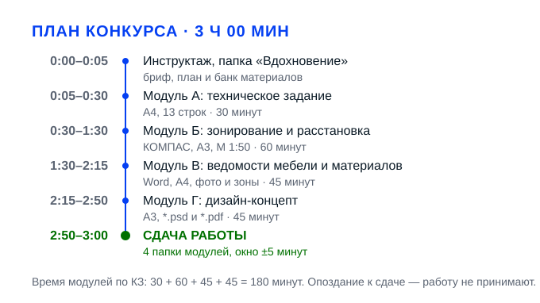
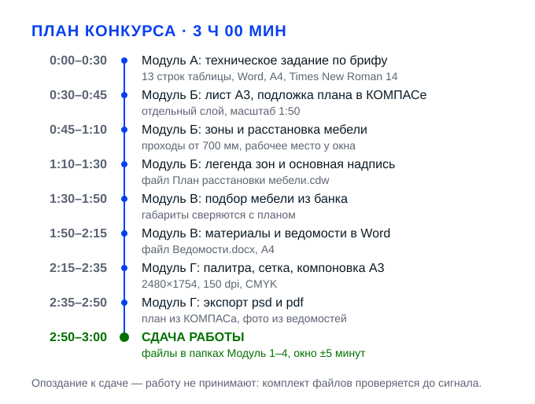
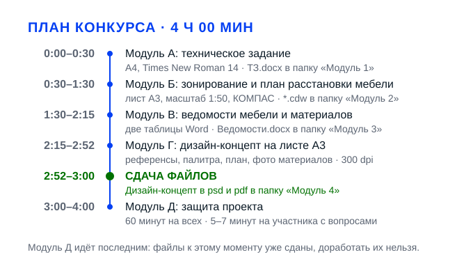

Дизайн-проектирование пространства (Р)
Задания ниже — официальные файлы «Абилимпикс» (источник: abilympics-russia.ru), разложенные по категориям. Решения написаны по тексту задания, регламенту и критериям оценки; в них указано, что именно проверяет эксперт.
Школьник
14–16 лет, базовый уровень заданияВыдержка из официального конкурсного задания: страницы, относящиеся к категории «Школьник» (стр. 4–7 источника).
Пошаговое решение
Компетенция «Дизайн-проектирование пространства» для школьников — это три часа, за которые нужно придумать и оформить комнату для заказчика: заполнить техническое задание, зонировать пространство и вычертить план расстановки мебели в КОМПАС, подобрать мебель и отделочные материалы, а затем собрать дизайн-концепт на листе А3. Исходники лежат в папке «Вдохновение» на рабочем столе: бриф, план помещения и банк мебели и материалов; результат сдаётся в четыре папки «Конкурсант №/Модуль 1–4» пятью файлами: ТЗ.docx, План расстановки мебели.cdw, Ведомости.docx, Дизайн-концепт.psd и Дизайн-концепт.pdf. Модули идут по 30, 60, 45 и 45 минут, а раскладка баллов — 20 / 35 / 25 / 20 из 100 — следует за этим временем. Оценивают не красоту картинок, а связность: цифры из брифа должны дойти до плана, план — до ведомостей, ведомости — до концепта, а зоны называться одинаково во всех четырёх документах.

Задача 1. Разобрать бриф и заполнить техническое заданиеМодуль А · 30 минут · 20 баллов
Первый модуль длится 30 минут и заканчивается файлом ТЗ.docx на листе А4 книжной ориентации. За это время нужно прочитать бриф заказчика, вытащить из него все числа и ограничения и перенести их в таблицу из 13 строк — от площади объекта до освещения. Модуль кажется простым, но он задаёт всё остальное: по этому документу потом расставляют мебель, подбирают обои и собирают концепт, и любая строчка, написанная «для галочки», вернётся потерей баллов в модулях Б, В и Г. Поэтому здесь важна не скорость печати, а точность переноса требований и аккуратность оформления: гарнитура TimesNewRoman, кегль 14, одинарный интервал, выравнивание по левому краю.
Действие 1.1. Прочитать бриф и выписать требования
Шаг 1.1.1
Садимся за рабочую станцию и первым делом открываем на рабочем столе папку «Вдохновение»: в ней лежат бриф, подпапка «План» с чертежом помещения и банк мебели с материалами. Бриф читаем дважды — сначала целиком, чтобы понять, для кого комната, потом с карандашом, подчёркивая каждое число и каждую фразу-ограничение: «площадь 18 квадратных метров», «мальчик, 12 лет», «есть кот», «играет на гитаре», «не любит жёлтый». Подчёркнутое сразу переносим в черновик на листе А4, стараясь держаться формулировок брифа, а не пересказывать по памяти.
Бриф — единственный источник требований заказчика, и модуль А стоит 20 баллов именно за точность переноса. Форма ТЗ проверяется построчно: если в брифе есть домашнее животное, а в пятой строке таблицы стоит прочерк, эксперт фиксирует несоответствие источнику, и дальше вся цепочка — зонирование, мебель, концепт — читается как проект «в общем», не привязанный к конкретному заказчику. А это уже минус в трёх модулях из четырёх.
Признак того, что бриф разобран, простой: на черновике должно быть не меньше семи-восьми выписанных фактов, и ни один из них нельзя спутать с домыслом. Проверьте себя вопросом «откуда я это взял» — у каждого факта должен быть ответ «из брифа, строка такая-то». Всё, на что ответа нет, пока не пишем вовсе.
Самая частая ошибка — прочитать бриф по диагонали и заполнять таблицу «из головы»: тогда через десять минут выясняется, что забыты хобби или животное, и половину строк приходится переписывать, а время модуля уже ушло. Вторая ошибка — подменить требования брифа своими вкусами, например записать стиль «лофт», потому что он нравится участнику.
Эксперт в первые пять минут обходит рабочие места и смотрит, читает ли участник бриф или печатает сразу. Отдельно отмечается, выписал ли он требования на бумагу: это видимый признак проектного подхода, а не угадывания.
Шаг 1.1.2
Из подчёркнутого отбираем цифры и факты, которые обязаны попасть в таблицу: площадь в квадратных метрах, тип объекта (жилая комната в квартире), состав проживающих с полом и возрастом, наличие животных и их повадки, хобби и занятия, которые требуют места. Каждую цифру пишем с единицей измерения, возраст — цифрой, а не словом «подросток», животное — с видом и размером, потому что от этого зависит, нужен ли вольер под аквариум или достаточно лежанки в углу.
Пункты 3, 4 и 5 формы ТЗ — площадь, состав проживающих и животные — это те строчки, по которым потом проверяют планировку. Комната на 18 квадратных метров и комната на 24 — это разные схемы зонирования: во второй помещается полноценная рабочая зона у окна, в первой ради неё придётся жертвовать шириной прохода. Ошибка в площади на этом этапе стоит дороже всего: она тянет за собой пересборку плана в модуле Б, где на всё отведено 60 минут.
Сверьте свой список с брифом по пунктам: площадь совпадает до квадратного метра, возраст и пол указаны, животное названо, хобби перечислены все, а не только первое. Если в брифе площадь указана в метрах, а не в квадратных, пересчитайте и запишите оба числа — так потом не будет спора, откуда взялась цифра.
Частая ошибка — записать «площадь примерно 20 метров»: на плане это превращается в произвольный масштаб и неверные габариты мебели. Вторая — пропустить хобби, считая его украшением: именно хобби даёт в проекте отдельную зону, за наличие которой в модуле Б начисляют баллы за функциональность.
Эксперт при проверке ТЗ сверяет числа с брифом выборочно, но обязательно: площадь, возраст, животные. Несовпадение хотя бы одной цифры трактуется как небрежная работа с исходными данными.
Шаг 1.1.3
Раскладываем выписанные факты по 13 строкам формы технического задания и помечаем те, под которые в брифе ничего нет: обычно это пункты про стены, пол и потолок, потому что заказчик редко говорит материалами. Такие строки не оставляем пустыми и не придумываем молча — сначала формулируем своё предложение с обоснованием (например, «стены: водоэмульсионная краска светлого оттенка, потому что комната небольшая и одно окно»), а спорное уточняем у эксперта одним коротким вопросом.
Тринадцать строк формы — это каркас всего проекта, и пустая строка читается как незакрытый вопрос. При этом придумывать за заказчика тоже нельзя: в критериях ценится связность, то есть каждое предложение должно вытекать из брифа. Обоснование в одну фразу решает обе задачи сразу: строка заполнена, и видно, почему выбрано именно это.
Проверьте таблицу на пустоты: тринадцать строк, в каждой есть текст, и хотя бы в шести строках есть ссылка на бриф словами «по требованию заказчика», «из-за площади», «так как окно одно». Если строка состоит из одного прилагательного — она не заполнена.
Ошибка — оставить материалы «на потом», потому что их всё равно будете подбирать в модуле В: тогда ТЗ и ведомости разойдутся, а эксперт сравнивает именно эти два документа. Вторая ошибка — задавать эксперту десять вопросов подряд вместо одного точного.
Эксперт читает ТЗ целиком после сдачи модуля и отдельно смотрит на строки 9–13: именно там видно, понимает ли участник, что такое отделка и освещение, или заполнил их формально.
Действие 1.2. Собрать документ Word по форме
Шаг 1.2.1
Открываем Microsoft Word, создаём новый документ и сразу выставляем параметры страницы: А4, книжная ориентация, поля по два сантиметра со всех сторон. Выделяем весь текст, ставим гарнитуру TimesNewRoman, кегль 14, межстрочный интервал одинарный, выравнивание по левому краю, отступ первой строки 1,25 см. Затем вставляем таблицу из трёх столбцов и четырнадцати строк: шапка плюс тринадцать пунктов формы.
Формат — отдельное требование конкурсного задания, и оно проверяется буквально: А4, книжное расположение, TimesNewRoman, 14, одинарный интервал, выравнивание по левому краю. Документ, набранный другим кеглем или с выравниванием по ширине, теряет баллы независимо от содержания, потому что заказчик получает пакет документов, и они должны быть единообразны.
Проверьте через меню «Разметка страницы»: размер А4, ориентация книжная, поля 2 см. Затем выделите текст и посмотрите на панель: должно стоять TimesNewRoman 14, интервал 1,0, выравнивание по левому краю. Быстрый способ убедиться — поставить курсор в разные абзацы и сверить значения на панели.
Частая ошибка — набрать текст в Calibri 11 по привычке и вспомнить про оформление в конце, когда переформатирование ломает таблицу и разъезжаются столбцы. Вторая — оставить поля по умолчанию 3 см слева: таблица не помещается по ширине и переносится на вторую страницу.
Эксперт открывает файл и первым делом смотрит на панель форматирования и на разметку страницы. Это занимает у него десять секунд, и эти десять секунд решают, будет ли снят балл за оформление.
Шаг 1.2.2
Заполняем первые восемь строк: общая информация об объекте (комната в двухкомнатной квартире, второй этаж, окно на юго-восток), тип объекта (жилая комната для школьника), площадь (число из брифа с единицей измерения), состав проживающих (пол и возраст), домашние животные, увлечения и хобби, предлагаемый стиль, предпочитаемые цвета. В каждую ячейку пишем короткое законченное предложение, а не набор слов через запятую.
Первые восемь строк — самая содержательная часть ТЗ, и по ним видно, прочитан ли бриф. Стиль и цвета при этом не выдумываются: если заказчик говорит «хочу спокойно, без яркого», стиль формулируется как современный с натуральными материалами, а палитра — как три оттенка: светлый нейтральный фон, тёплый древесный и один акцент. Такая формулировка потом напрямую переносится в палитру концепта в модуле Г.
Проверьте строки 4, 5 и 6 особенно внимательно: возраст цифрой, животное с видом, хобби перечислены полностью. В строке 7 должен стоять один стиль, а не «современный или скандинавский»: двойной ответ не даёт проекту направления. В строке 8 укажите три-четыре цвета словами и, если успеваете, с оттенком.
Ошибка — написать в строке 8 «светлые тона»: это не палитра, по ней нельзя подобрать обои. Вторая — перечислить в строке 6 все увлечения школьника вообще, включая те, что не требуют места; в ТЗ попадают только те, что влияют на планировку и хранение.
Эксперт читает эти строки как рассказ о заказчике: если из них складывается образ конкретного человека, модуль А оценивается высоко, потому что дальше проект будет проверяться на соответствие именно этому образу.
Шаг 1.2.3
Заполняем строки 9–13 — стены, пол, потолок, мебель, освещение. Здесь обязательны материал и место: стены — водоэмульсионная краска или обои под покраску в рабочей зоне и моющиеся обои у зоны отдыха; пол — ламинат 32 класса или кварцвинил, потому что в комнате школьника нагрузка высокая; потолок — натяжной матовый или окрашенный гипсокартон; мебель — перечисление по зонам с материалом корпуса и фасада; освещение — общий светильник и местные: над рабочим столом, у кровати, в зоне чтения.
Строки 9–13 — мостик к модулю В, где по этим описаниям подбираются конкретные образцы и заполняются ведомости. Если в ТЗ написано «стены — обои», а в ведомости появятся краска и панели, эксперт отметит расхождение, и баллы уйдут за несоответствие документов. Свет в ТЗ тоже нужен не для красоты: в критериях есть отдельная позиция про освещение зон, и она опирается на эту строку.
По каждой из пяти строк должно быть минимум два элемента: материал и помещение или зона. Проверьте, что материалы не противоречат стилю из строки 7: лофт с натяжным глянцевым потолком читается как ошибка. И убедитесь, что освещение описано по зонам, а не одной фразой «люстра и торшер».
Ошибка — перечислить материалы без привязки к зонам: потом невозможно объяснить, почему в ведомости пять позиций на стены. Вторая — забыть про потолок, оставив строку 11 пустой или с прочерком, хотя это отдельный пункт формы.
Эксперт смотрит на согласованность строк 9–13 со стилем и палитрой: это первый тест на то, умеет ли участник удерживать единую линию проекта, а не собирать понравившиеся картинки.
Действие 1.3. Привести таблицу в читаемый вид
Шаг 1.3.1
Настраиваем столбцы: первый — узкий, под номер, шириной около 1 см; второй — около 6 см, под наименование; третий — остальное, под предложения. Второй столбец выравниваем по левому краю, третий тоже, шапку выделяем полужирным. Затем включаем границы таблицы и проверяем, что ни одна ячейка не вылезла на второй лист: таблица должна целиком читаться на одном А4.
Читаемость — часть оценки за оформление, и она проверяется глазами за пять секунд. Когда третий столбец узкий, предложения рвутся на пять строк по два слова, и эксперт физически не может оценить содержание. Кроме того, разрыв таблицы между страницами выглядит как небрежность, а ТЗ — документ, который заказчик подписывает.
Проверьте тремя движениями: уменьшите масштаб до 50 процентов — таблица должна читаться как сетка, а не как сплошное поле текста; прокрутите вниз — второго листа быть не должно; посмотрите на границы — они должны быть видны у всех ячеек, включая последнюю строку.
Ошибка — оставить ширину столбцов по умолчанию, когда третий столбец получает треть страницы и весь текст уходит вниз. Вторая — украшать документ цветными заливками и рамками: конкурсное задание требует строгого документа, а оформление оценивается на другом листе.
Эксперт листает ТЗ быстро. Если структура читается сразу — номера, наименования, предложения в своей колонке, — он переходит к содержанию с положительным настроем, и это влияет на итоговую оценку модуля.
Шаг 1.3.2
Проходим строку за строкой и вычищаем общие слова. «Современный стиль» заменяем на конкретное направление с двумя-тремя признаками, «удобная мебель» — на перечисление предметов с размерами, «хорошее освещение» — на схему из общего и местного света. Каждое предложение проверяем вопросом: можно ли по нему что-то построить или купить. Каждая формулировка должна быть проверяема.
В критериях модуля А ценится не объём, а пригодность к работе: ТЗ должно позволять следующему модулю расставить мебель, а третьему — выбрать образцы. Общая фраза не даёт ни размеров, ни материалов, и на защите звучит вопрос «что именно вы имели в виду», на который уже нет времени отвечать.
Проверьте себя так: закройте документ и попробуйте по памяти назвать, какого цвета стены и какой свет над столом. Если ответа нет — строка написана общими словами. Хороший признак: в каждой строке есть хотя бы одно существительное с конкретикой — краска, ламинат, светильник, кровать.
Ошибка — гнаться за красивыми формулировками вроде «атмосфера уюта и вдохновения»: это не техническое задание, а эссе, и баллы за содержание не начисляются. Вторая — писать одинаковые материалы во все зоны, экономя время: тогда зонирование в модуле Б нечем обосновать.
Эксперт при чтении ищет измеримые признаки: размеры, материалы, количество светильников. Строки с конкретикой он отмечает как сильные, и это потом учитывается при сравнении работ с близкими баллами.
Действие 1.4. Сохранить файл так, как требует задание
Шаг 1.4.1
Создаём на рабочем столе папку участника: «Конкурсант №» — с тем номером, который указан в задании, внутри папку «Модуль 1». Сохраняем документ командой «Сохранить как», тип файла — «Документ Word (*.docx)», имя ровно «ТЗ», без приписок вроде «ТЗ_итог» или «ТЗ_ финал2». После сохранения закрываем документ и открываем заново из папки, чтобы убедиться, что файл читается.
Имя файла и путь — формальное требование задания, и проверяются они первыми: файл, лежащий не в той папке или названный иначе, эксперт может просто не найти при сборе работ, и модуль останется без оценки. Пересохранение в старом формате .doc тоже опасно: часть форматирования теряется, и таблица разъезжается.
Проверьте три вещи: папка называется «Конкурсант №», внутри есть «Модуль 1», файл называется «ТЗ.docx». Откройте его двойным щелчком и убедитесь, что таблица на месте, шрифт TimesNewRoman и на первом листе нет обрезанных строк.
Частая ошибка — сохранить в папку по умолчанию «Документы» и планировать перенести позже: в конце конкурса времени на это не остаётся. Вторая — перезаписать файл, который уже был в папке, и потерять свою же предыдущую версию, если она была лучше.
Эксперт собирает работы по папкам участников после каждого модуля. Правильно названный файл он открывает сразу, и это экономит время, которого в конце конкурса всегда не хватает.
Шаг 1.4.2
Делаем последнюю проверку по чек-листу из пяти пунктов, не отходя от стола: тринадцать строк заполнены, формат А4 книжный, TimesNewRoman 14, интервал одинарный, файл лежит в «Конкурсант №/Модуль 1» под именем ТЗ.docx. Если остаётся время, перечитываем строки 1–8 и дописываем то, что успели придумать по ходу, но не успели внести. Заодно отметьте, сколько времени осталось до конца модуля.
Пять минут проверки защищают от потери баллов за формат, которые невозможно вернуть после сдачи. Кроме того, на этом же листе удобно зафиксировать своё решение: какие зоны будут в комнате — работа, сон, хранение, хобби. Это заготовка для модуля Б, где нужно будет сразу расставлять мебель, а не думать о композиции с нуля.
Чек-лист должен быть закрыт полностью, без «почти»: если интервал полуторный, это уже нарушение, даже когда всё остальное верно. Отдельно проверьте, что в строке 13 освещение описано по зонам — это самая частая забытая строка.
Ошибка — сдать модуль за десять минут до конца и сидеть: лучше потратить это время на перечитывание, потому что опечатки в площади и возрасте видны эксперту сразу. Вторая — начать заранее расставлять мебель на бумаге, позабыв про срок модуля А.
Эксперт фиксирует время сдачи каждого модуля и наличие файла. Аккуратный, проверенный документ в нужной папке — это ещё и показатель организации, за который начисляются баллы отдельно.
Задача 2. Выполнить зонирование и план расстановки мебели в КОМПАСМодуль Б · 60 минут · 35 баллов
Самый долгий и самый дорогой модуль: 60 минут и 35 баллов из 100. Из папки «Вдохновение/План» берётся готовый чертёж помещения, переносится на лист А3 и дополняется расстановкой мебели, выделенными зонами и условно-графическими обозначениями справа от чертежа. Результат — файл «План расстановки мебели.cdw» в папке «Конкурсант №/Модуль 2». Оценивается не красота линий, а измеримые вещи: масштаб, совпадение габаритов с исходным планом, ширина проходов, наличие всех функциональных зон и заполненная основная надпись с названием проекта «Комната ученика». Поэтому порядок работы жёсткий: сначала геометрия и стены, потом зоны, потом мебель, и только в конце оформление.
Действие 2.1. Разобрать исходный план и настроить чертёж
Шаг 2.1.1
Открываем папку «Вдохновение/План» и смотрим, что лежит внутри: обычно это чертёж помещения в формате PDF, DWG или картинкой. Определяем три вещи — габариты помещения в миллиметрах, толщину наружных и внутренних стен и положение проёмов: где окно, где входная дверь, в какую сторону она открывается, есть ли радиатор под окном и вентшахта в углу. Все размеры записываем на черновик в миллиметрах, потому что КОМПАС работает именно в них, а не в сантиметрах.
Габариты и положение проёмов — основа всего чертежа. Если окно окажется нарисованным на другой стене, вся расстановка поедет: рабочий стол у окна встанет в тень, а кровать перекроет радиатор. В модуле Б за соответствие плана исходнику и за функциональность расстановки начисляются основные баллы, и оба критерия проверяются по этому первому шагу.
Проверьте, что записаны четыре числа габаритов (две длины и две толщины стен), положения окна и двери в миллиметрах от угла и направление открывания двери. Хороший тест: сложите внутренние размеры и толщины стен — должна получиться внешняя длина. Если не сходится на 100–200 мм, вы ошиблись с толщиной стены.
Ошибка — взять размеры «на глаз» с экрана, не открывая свойства чертежа: потом план не сойдётся с исходником, и эксперт это увидит при наложении. Вторая — забыть про радиатор и вентшахту: мебель встанет прямо на них.
Эксперт подходит в первые десять минут модуля и смотрит, открыт ли исходный план и выписаны ли размеры. Это первый признак того, что участник работает по документу, а не по памяти.
Шаг 2.1.2
Запускаем КОМПАС-График, создаём новый чертёж и в свойствах документа ставим формат А3 горизонтальный, масштаб 1:50, основную надпись по форме 1. Затем создаём слои: «Стены», «Проёмы», «Мебель», «Зоны», «Обозначения», «Текст» — и назначаем им разные цвета и толщины линий. Стены — основная линия 0,6–0,8 мм, мебель — тонкая 0,25 мм, зоны — штриховая, чтобы читались под мебелью.
Слои и масштаб — это не формальность: при масштабе 1:50 комната 18 квадратных метров занимает примерно половину листа А3, и остаётся место справа под условно-графические обозначения, которые требует задание. Без слоёв зоны и мебель сольются в одну кашу, и эксперт не сможет ни прочитать план, ни проверить границы зон.
Проверьте через «Параметры листа»: формат А3, ориентация горизонтальная, масштаб 1:50. Затем откройте диспетчер слоёв и убедитесь, что все шесть слоёв созданы и текущий слой — «Стены». Быстрая проверка масштаба: нарисуйте отрезок 1000 мм и измерьте его линейкой на экране при 100 процентах — он должен быть 20 мм.
Ошибка — начать чертить на листе А4 или в масштабе 1:100: комната станет маленькой, мебель не читается, а справа не останется места под легенду. Вторая — чертить всё в одном слое и потом пытаться выделить зоны: придётся вычищать вручную, а времени на это нет.
Эксперт проверяет формат листа и масштаб в основной надписи и в параметрах. Это формальный, но жёсткий критерий: чертёж не на А3 или без масштаба теряет баллы сразу.
Шаг 2.1.3
Вычерчиваем помещение: прямоугольник по внешним габаритам, затем внутренний контур с отступом на толщину стен, стены заливаем или штрихуем по образцу исходного плана. В стенах прорезаем проёмы: окно с четвертью и подоконником, дверь с полотном и дугой открывания радиусом, равным ширине полотна. Под окном ставим радиатор, в углу — вентшахту, если она есть на исходнике; всё это тонкими линиями на слое «Проёмы».
Дуга открывания двери — не украшение: она показывает, сколько места дверь занимает в движении, и именно в эту зону нельзя ставить шкаф. Радиатор и вентшахта ограничивают расстановку так же жёстко, как стены, и если их не нарисовать, потом легко «поселить» туда комод. Соответствие исходному плану и грамотная геометрия — база оценки модуля Б.
Проверьте пять вещей: внешние габариты совпадают с исходником до миллиметра, внутренний контур параллелен внешнему, окно стоит на нужной стене на нужном расстоянии от угла, дверь открывается в ту же сторону, что в исходнике, радиатор не выступает за подоконник. И ни одного разрыва в контуре стен.
Ошибка — начертить стены одной линией, без толщины: тогда непонятно, где внутренняя поверхность, и мебель «утопает» в стене. Вторая — нарисовать дверь без дуги и забыть, что она открывается внутрь, прямо в место для шкафа.
Эксперт накладывает ваш план на исходный или сравнивает габариты линейкой по чертежу. Расхождение больше 50 мм читается как невнимательность и снимает баллы за точность.
Действие 2.2. Разбить комнату на зоны
Шаг 2.2.1
Берём своё техническое задание из модуля А и выписываем зоны, которые из него следуют: сон и отдых, учёба и работа за столом, хранение вещей и одежды, зона хобби (если в брифе есть музыка, рисование, спорт, животное) и зона движения — свободный путь от двери к окну и к каждой зоне. Для комнаты школьника базовый набор — три обязательные зоны плюс одна по хобби; больше пяти зон на 18–20 квадратных метрах не помещается физически.
Зонирование — центральное требование модуля Б: задание прямо говорит «выделите на чертеже зоны», и за функциональное зонирование начисляется существенная часть из 35 баллов. Кроме того, зоны связывают модули между собой: в модуле В мебель в ведомости подписана по зонам, а в модуле Г концепт рассказывает про те же зоны. Если состав зон не совпадает, проект рассыпается на три несвязанных документа.
Список зон должен быть коротким и обоснованным: у каждой — ссылка на бриф или на ТЗ. Проверьте, что зона хобби появилась только там, где хобби есть в брифе, а зона движения есть всегда. И посчитайте суммарную площадь зон: она должна примерно равняться площади комнаты, без «лишних» квадратов.
Ошибка — нарисовать зоны «по красивой схеме», не сверяясь с брифом: например выделить гардеробную в комнате, где шкаф шириной 1,2 м уже занимает стену. Вторая — сделать шесть-семь зон на маленькой площади, и тогда ни одна из них не работает.
Эксперт сверяет состав зон с брифом и ТЗ. Если в брифе есть гитара, а зоны для неё нет, он отметит, что заказчик не услышан, — это минус по критерию соответствия требованиям.
Шаг 2.2.2
Проверяем эргономику до расстановки мебели: между кроватью и столом оставляем не меньше 700 мм, основной проход от двери к окну — 700–900 мм, перед шкафом с распашными дверцами — 800 мм на открывание, перед выдвижными ящиками — 600 мм. Рабочий стол ставим так, чтобы сидящий видел дверь и не сидел спиной к проходу, а кровать — не под самым окном, если из него дует.
Эти размеры — не прихоть: по ним проверяется, работает ли планировка. Комната, где между кроватью и столом 400 мм, на плане выглядит плотно и красиво, но жить в ней нельзя, и эксперт это читает сразу. Проходы и подходы входят в критерий функциональности, а он в модуле Б один из самых весомых.
Проверьте цифрами, а не глазами: включите в КОМПАС линейный размер и измерьте каждый проход. Все значения должны быть не меньше 700 мм, подход к окну — не меньше 600 мм. Если хотя бы один проход 500 мм, планировку надо менять сейчас, а не после расстановки.
Ошибка — поставить кровать вплотную к столу, чтобы «всё влезло»: тогда не открывается ящик стола, и это видно на плане. Вторая — оставить проход уже 500 мм перед шкафом, и дверцы физически не распахнутся.
Эксперт измеряет два-три ключевых прохода линейкой прямо по чертежу. Это быстрый способ отличить продуманную планировку от нарисованной на глаз. Это решается за минуту.
Шаг 2.2.3
Намечаем границы зон на плане вспомогательными линиями на слое «Зоны»: границы проводим по фактическим линиям мебели и стен, а не по диагонали через комнату. Зону сна ограничиваем габаритом кровати плюс 300 мм на подход, рабочую — столом и креслом с зоной выката, хранение — контуром шкафа, хобби — площадкой, которую занимает оборудование. Подписи зон пока не ставим.
Границы по мебели, а не по воздуху, нужны потому, что зона должна быть защищаемой: на вопрос эксперта «почему граница здесь» есть ответ — здесь заканчивается кровать и начинается проход. Плавающие границы, проведённые по центру комнаты, читаются как декоративная графика, а не зонирование, и баллы за него не начисляются.
Проверьте: каждая граница либо совпадает с линией мебели, либо с линией стены или проёма; ни одна зона не пересекает другую; суммарно зоны покрывают всю площадь комнаты, включая проход. И ни одна граница не проходит через дверной проём.
Ошибка — провести границы зон по диагонали «для красоты»: эксперт сразу понимает, что зонирование нарисовано после, а не продумано. Вторая — оставить зону движения без границ, и тогда непонятно, проверяли ли проходы вообще.
Эксперт смотрит на плане, читаются ли границы без пояснений. Если да — он переходит к проверке размеров, если нет — просит объяснить, и это отнимает время модуля.
Действие 2.3. Расставить мебель по зонам
Шаг 2.3.1
Вставляем мебель: через библиотеку КОМПАС или чертим прямоугольники по реальным габаритам. Кровать односпальная — 900 на 2000 мм, рабочий стол — 1200 на 600 мм, стеллаж — 800 на 400 мм, шкаф — 1200 на 600 мм, кресло — 700 на 700 мм. Всё ставим на слой «Мебель» тонкой линией, привязываясь к внутренним поверхностям стен, с зазором 20–50 мм на плинтус и радиатор.
Реальные габариты — условие проверяемости: эксперт сверяет размеры мебели на плане с типовыми и с ведомостью из модуля В. Прямоугольник «на глаз» шириной 1500 мм вместо 600 сразу выдаёт, что участник не думал о том, как предметы будут стоять в жизни. Зазор у стены нужен, потому что плинтус и радиатор съедают 30–50 мм, и шкаф вплотную к стене просто не встанет.
Измерьте три предмета на плане: кровать, стол, шкаф. Значения должны совпадать с типовыми до 50 мм. Проверьте, что мебель не заходит на стены и на дугу открывания двери. И что все предметы из списка зон стоят на своих местах.
Ошибка — нарисовать мебель «примерно» и не проверять ширину: потом в ведомости указываются одни габариты, а на плане другие, и это несоответствие документов. Вторая — поставить шкаф вплотную к двери, и дуга открывания проходит прямо через него.
Эксперт выборочно измеряет два-три предмета и сравнивает с ведомостью модуля В. Совпадение габаритов — сильный показатель качества проекта. Он смотрит именно на ширину и глубину, а не на общий вид.
Шаг 2.3.2
Проверяем подвижность: у шкафа с распашными дверцами оставляем 800 мм спереди, у комода с ящиками — 600 мм, у стола — место, чтобы отодвинуть кресло на 500 мм, у кровати — подход с двух сторон, если она стоит не в углу. Подоконник не заставляем шкафом, если под окном радиатор: перекрытый радиатор — это холодная комната и конденсат на стекле. Кровать от радиатора отодвигаем на 100 мм.
Эта проверка — то, что отличает проект от картинки. Задание требует план расстановки мебели, то есть документ, по которому можно двигать мебель, а не только смотреть на неё. Функциональность расстановки — отдельный критерий модуля Б, и он проверяется именно по зонам открывания и подходам.
Проверьте на плане четыре расстояния: перед шкафом 800 мм, перед комодом 600 мм, выкат кресла от стола 500 мм, подход к кровати 700 мм. Плюс убедитесь, что радиатор не закрыт и окно открывается — створка не должна упираться в мебель.
Ошибка — поставить стол вплотную к шкафу, и кресло не отъезжает. Вторая — закрыть радиатор стеллажом: на плане это выглядит аккуратно, но зимой в комнате холодно, и заказчик такое не примет. Это первое, что замечает заказчик.
Эксперт проверяет план на «жизнеспособность»: открывается ли дверь, выезжают ли ящики, есть ли подход к окну. Это делается без линейки, просто взглядом по чертежу, и ошибки видны сразу.
Шаг 2.3.3
Сверяем расстановку с ТЗ и брифом по списку: кровать есть, стол и кресло есть, хранение закрытое и открытое, светильники над столом и у кровати отмечены, зона хобби оборудована, место для животного предусмотрено, если оно есть. Если по брифу нужна грифельная доска или спортивный уголок — это отдельный предмет на плане, а не строчка в тексте. Каждая забытая позиция — это минус за функциональность.
Полнота расстановки — прямой критерий: за каждый предусмотренный функциональный элемент начисляются баллы, а за забытый — снимаются. При этом лишняя мебель тоже плохо: комната школьника на 18 квадратных метрах не выдерживает диван, кресло-мешок и стеллаж одновременно, и проходы схлопываются.
Пройдите по списку зон из модуля А и рядом с каждой поставьте галочку: всё, что описано, есть на плане. Отдельно проверьте, что количество предметов совпадает с тем, что вы потом внесёте в ведомость, — обычно это 8–12 позиций.
Ошибка — забыть про освещение на плане: условные обозначения светильников тоже часть расстановки, и их отсутствие видно. Вторая — добавить мебель, которой нет в ТЗ, и получить вопрос о расхождении документов.
Эксперт ведёт проверку по своему чек-листу функциональных элементов. Полный набор без лишнего — лучший результат, который он может отметить. Он идёт по зонам сверху вниз, от двери к окну.
Действие 2.4. Оформить зоны, легенду и основную надпись
Шаг 2.4.1
Выделяем зоны на чертеже: каждую заливаем полупрозрачным цветом или заштриховываем своим типом штриховки на отдельном слое под мебелью. Цвета берём спокойные и различимые: тёплый бежевый для сна, светло-голубой для учёбы, серый для хранения, зелёный для хобби. Заливка не должна перекрывать линии мебели — прозрачность 20–30 процентов или штриховка с шагом 5 мм.
Задание прямо требует «выделите на чертеже зоны», и визуальное выделение — это и есть выполнение пункта. Когда зоны не видны, эксперт не может проверить ни их состав, ни границы, и баллы за зонирование теряются целиком, даже если планировка хорошая. Без него план читается хуже.
Проверьте, что все зоны видны одновременно и не сливаются: уменьшите масштаб просмотра до 50 процентов и посмотрите — читается ли карта зон. Затем вернитесь к 100 процентам и убедитесь, что сквозь заливку видны все линии мебели и размеры.
Ошибка — залить зоны плотным цветом: линии мебели исчезают, и план становится нечитаемым. Вторая — выделить зоны только контуром без подписи, и тогда непонятно, где какая. Третья — забыть зону движения, и тогда проходы никак не обозначены.
Эксперт оценивает читаемость чертежа в целом: план должен работать как документ, по которому можно объяснить проект заказчику. Он смотрит на план в уменьшении, как на схему.
Шаг 2.4.2
Справа от чертежа, в свободном поле листа, ставим условно-графические обозначения зон: небольшой квадрат с той же заливкой или штриховкой, что и на плане, и рядом подпись — «Зона сна», «Рабочая зона», «Хранение», «Зона хобби», «Проход». Выстраиваем их в столбик с равным шагом 10 мм, выравниваем по левому краю, кегль подписи 3,5–5 мм, чтобы читалось на печати А3.
Легенда справа — отдельный пункт задания, и она проверяется буквально: обозначения должны стоять справа от чертежа, а не под ним и не внутри. Без легенды цветные пятна на плане ничего не значат, а с ней чертёж читается за пять секунд даже человеком, который видит его впервые.
Проверьте: обозначений столько же, сколько зон на плане, названия совпадают дословно, цвета и штриховки те же. Легенда не должна наезжать на чертёж и на основную надпись. И все подписи должны быть горизонтальны — никаких наклонных строк.
Ошибка — подписать зоны прямо на плане, а легенду не делать: пункт задания остаётся невыполненным. Вторая — перепутать цвета: в легенде зона сна бежевая, а на плане она голубая, и эксперт считает это ошибкой оформления.
Эксперт сверяет легенду с планом один к одному. Это одна из самых быстрых проверок, и она почти всегда выявляет невнимательных участников. Он проверяет и то, что легенда не наезжает на штамп.
Шаг 2.4.3
Заполняем основную надпись: в графе «Масштаб» ставим 1:50, в графе «Разработал» — свою фамилию и инициалы, в графе «Наименование» — «Комната ученика» ровно в такой формулировке, как в задании. Проверяем дату и обозначение документа. Затем сохраняем файл командой «Сохранить как» в папку «Конкурсант №/Модуль 2» под именем «План расстановки мебели» в формате *.cdw и убеждаемся, что файл открывается заново.
Основная надпись — формальный, но обязательный элемент: без масштаба и фамилии чертёж не считается сданным документом, потому что его нельзя ни опознать, ни проверить на соответствие формату. Название проекта задано в задании дословно, и любая вольность вроде «Комната школьника» читается как невыполнение пункта.
Проверьте по заданию три элемента: масштаб 1:50 стоит в штампе, фамилия и инициалы есть, название «Комната ученика» совпадает буква в букву. Плюс формат листа А3 и имя файла с расширением .cdw. После сохранения закройте и откройте файл — он должен открыться без ошибок.
Ошибка — оставить в штампе «Разработал» пустую графу или вписать туда название команды. Вторая — сохранить в формате .frw или картинкой: задание требует .cdw, и такой файл не примут. Третья — сократить название проекта до «Комн. ученика».
Эксперт открывает файл и первым делом смотрит на основную надпись — это проверка за десять секунд, которая либо подтверждает, что документ готов, либо сразу снимает баллы за оформление.
Задача 3. Подобрать мебель и отделочные материалы, заполнить ведомостиМодуль В · 45 минут · 25 баллов
Модуль В — это 45 минут на работу с готовым банком мебели и материалов из папки «Вдохновение/Банк мебели и материалов». Нужно выбрать предметы, которые подходят по стилю и по функциональным требованиям из вашего же ТЗ, подобрать отделочные материалы для стен, пола и потолка и заполнить два документа в одном файле Word: ведомость мебели и ведомость отделочных материалов по форме таблицы 2 — номер, наименование, фото и зона. Результат сохраняется как «Ведомости.docx» в папке «Конкурсант №/Модуль 3». Главное в этом модуле — не вкус, а согласованность: каждая позиция должна стоять в той зоне, где она есть на плане, иметь те же габариты, что на чертеже, и тот же характер, что заявлен в ТЗ. Именно по ведомостям в модуле Г собирается концепт, поэтому расхождение здесь видно на итоговом листе сразу.
Действие 3.1. Отобрать мебель под план и ТЗ
Шаг 3.1.1
Открываем папку «Вдохновение/Банк мебели и материалов» и смотрим, как она устроена: обычно это подпапки по типам мебели и отдельным папкам материалов, внутри — картинки с названиями и габаритами. Сначала отбираем по габаритам: кровать не длиннее 2000 мм, стол не шире 1200 мм, шкаф глубиной не больше 600 мм. Потом отсекаем по стилю из пункта 7 ТЗ — если заявлен современный с натуральными материалами, предметы с резным декором и золотом не берём. Отобранное складываем в отдельную папку или копируем изображения в черновик.
Банк предоставлен организаторами, и это значит, что выбирать нужно из него, а не придумывать мебель по памяти: за позиции «из головы» без изображения баллы за ведомость не начисляются, потому что проверить их невозможно. Отбор по габаритам первым делом экономит время: из банка сразу уходит треть вариантов, которые физически не встанут в комнату.
Проверьте, что у каждой отобранной позиции есть название и габариты: без них её нельзя внести в ведомость и нельзя сверить с планом. Отдельно удобно сразу записать, в какую зону пойдёт предмет — так вы не будете возвращаться к этому в конце модуля, когда время на исходе.
Ошибка — брать всё, что нравится, и потом выяснять, что шкаф 1800 мм не встаёт на стену длиной 1600 мм. Вторая — выбирать мебель по картинке без габаритов и обнаруживать несоответствие плану уже в ведомости.
Эксперт следит, из какого источника берутся позиции: работа с банком организаторов входит в критерий владения материалом, а выдуманные предметы он отмечает сразу.
Шаг 3.1.2
Каждую отобранную позицию сверяем с планом расстановки: берём габарит из банка и сравниваем с прямоугольником на чертеже. Кровать 900 на 2000 должна занимать ровно 900 на 2000 на плане, стол 1200 на 600 — 1200 на 600. Если расхождение больше 50 мм, либо меняем предмет на подходящий, либо правим чертёж — но править надо в модуле Б, а здесь уже поздно, поэтому проще подобрать предмет с нужными размерами.
Совпадение габаритов на плане и в ведомости — самый проверяемый критерий модуля В: эксперт открывает два документа рядом и сравнивает. Расхождение читается как небрежность и стоит баллов сразу в двух модулях, потому что ставит под сомнение и чертёж, и подбор.
Проверьте три ключевых предмета — кровать, стол, шкаф: размеры на плане и в банке должны совпадать до 50 мм. И убедитесь, что предмет с учётом габаритов всё ещё оставляет проход не меньше 700 мм: при замене на более широкий шкаф проход может схлопнуться.
Ошибка — подобрать красивый стол 1400 мм, хотя на плане нарисован 1200: на чертеже он перекроет проход. Вторая — не проверить глубину шкафа и получить 700 мм вместо 600, что съедает зону открывания дверцы.
Эксперт сравнивает ведомость с планом по трём-четырём позициям. Это делается за минуту, и результат почти всегда однозначный. Расхождение в 100 мм он видит без линейки, по пропорциям.
Шаг 3.1.3
Собираем итоговый список по зонам: сон — кровать, тумба или полка; учёба — стол, кресло, светильник, полка для книг; хранение — шкаф, комод, органайзеры; хобби — то, что требует бриф. Итого обычно 8–12 позиций, и это правильный масштаб для комнаты школьника. Каждой позиции присваиваем номер и зону — по этим двум полям потом заполняется ведомость. Это и есть рабочий комплект мебели.
Список по зонам — это структура ведомости: в таблице есть графа «Зона», и заполнять её нужно осмысленно, а не ставить одну зону на все позиции. Кроме того, список по зонам сразу показывает, где чего не хватает: если в зоне хранения одна полка, значит функция не закрыта и баллы за функциональность будут ниже.
Проверьте: в каждой зоне из модуля А есть хотя бы два предмета, в списке нет дублей «стул» и «стул офисный» на одну и ту же роль, и общее количество не выходит за 12. Если позиций больше 15, комната выглядит перегруженной.
Ошибка — включить в список то, чего нет на плане: ведомость перестаёт соответствовать чертежу. Вторая — забыть светильники, хотя освещение есть отдельным пунктом ТЗ и оценивается отдельно. Тогда часть баллов за проработку просто не начисляется.
Эксперт проверяет полноту набора по зонам и отсутствие лишнего. Сбалансированный список 8–12 позиций он читает как зрелое решение. Он также смотрит, нет ли в списке предметов «на всякий случай».
Действие 3.2. Подобрать отделочные материалы
Шаг 3.2.1
По стенам выбираем из банка два-три материала и распределяем по зонам: в рабочей зоне — краска или обои под покраску светлого оттенка, чтобы не уставали глаза; у кровати — обои с мелким рисунком или декоративная штукатурка; за изголовьем допустим акцентный цвет из палитры ТЗ. Считаем примерный расход: площадь стен минус окна и двери, делим на площадь в упаковке и округляем вверх — на комнату 18 квадратных метров обычно уходит 6–8 рулонов по 5,3 квадратных метра.
Стены занимают больше всего видимой площади, и именно они задают настроение проекта: ошибка в цвете здесь видна сильнее всего. Привязка материала к зоне нужна, чтобы ведомость не превратилась в список «обои — 3 вида»: за конкретику «какие обои и куда» в критериях дают баллы за проработку.
Проверьте, что на стены приходится не больше трёх материалов, каждый из них привязан к зоне, и все они есть в банке с изображением. Отдельно посчитайте расход и запишите число: 6–8 рулонов на комнату такого размера — нормальный результат.
Ошибка — выбрать обои с крупным тёмным рисунком на все стены маленькой комнаты: помещение визуально сжимается, и это видно на концепте. Вторая — указать материал без расчёта, и потом не суметь ответить, сколько нужно рулонов.
Эксперт смотрит на связку «ТЗ — стены — палитра»: цвет и характер материала должны совпадать с тем, что заявлено в пунктах 8 и 9 технического задания.
Шаг 3.2.2
По полу выбираем покрытие с учётом нагрузки: для комнаты школьника — ламинат 32 класса или кварцвинил, потому что стулья на колёсах и активные игры быстро убивают 31 класс. По потолку — матовый натяжной или окрашенный, без глянца: глянец на потолке в маленькой комнате даёт блики и выглядит дешевле, чем кажется на образце. Записываем материал, класс и цвет для каждой позиции.
Класс износостойкости и тип потолка — это те параметры, по которым видно, разбирается ли участник в материалах или выбирает по картинке. В критериях оценки есть позиция про обоснованность выбора материалов, и «ламинат 32 класса, потому что в комнате стоит кресло на колёсах» — это обоснование, а «красивый ламинат» — нет.
Проверьте: у пола указан класс и тип, у потолка — тип и степень глянца, оба материала есть в банке. И убедитесь, что пол не спорит по цвету с мебелью: тёмный пол, тёмная мебель и тёмные стены в одной комнате дают эффект «коробки».
Ошибка — выбрать ламинат 31 класса «потому что дешевле»: для активной комнаты это неверное решение, и его легко оспорить. Вторая — глянцевый потолок в комнате с одним окном: отражения делают свет неравномерным.
Эксперт проверяет два параметра — класс покрытия и тип потолка. Если они названы и обоснованы, позиция закрыта полностью. Класс 32 и матовый потолок — самый ожидаемый ответ для этой комнаты.
Шаг 3.2.3
Проверяем материалы на совместимость и на соответствие палитре: светлые стены, тёплый древесный пол и один акцент — это рабочая схема, а четыре разных цвета в одной комнате выглядят случайно. Проверяем и практичность: во влажных зонах, если они есть, — влагостойкие материалы, у рабочего стола — моющиеся обои или краска, которую можно мыть. Все цвета сверяем с пунктом 8 ТЗ и записываем названия оттенков.
Согласованность палитры — то, за что в модуле Г начисляются баллы за цветовое решение, и оно целиком вырастает из этого шага. Если материалы подобраны по одному, без общей схемы, концепт получится пёстрым, и участнику придётся либо переделывать лист, либо объяснять разнобой.
Проверьте, что все выбранные цвета укладываются в три группы: фон, древесный тон, акцент. Посмотрите на образцы рядом, уменьшив их на экране до размера ногтя, — так видно, спорят ли они между собой. И убедитесь, что моющиеся материалы стоят именно там, где нужно.
Ошибка — подобрать каждый материал отдельно, «чтобы красиво», и получить пять несочетаемых оттенков. Вторая — поставить светлые обои в зону у рабочего стола, где они быстро запачкаются, и не предусмотреть моющееся покрытие.
Эксперт смотрит на ведомость материалов как на палитру: если она читается как единое решение, это сильный плюс к концепту, который он увидит в следующем модуле.
Действие 3.3. Заполнить ведомость мебели
Шаг 3.3.1
Открываем Word, ставим А4 книжную ориентацию и создаём таблицу по форме таблицы 2 из задания: столбцы «№», «Наименование», «Фото», «Зона». Шапку выделяем полужирным, включаем границы, задаём ширину: номер — 1 см, наименование — 6 см, фото — 5 см, зона — 4 см. Над таблицей пишем заголовок «Ведомость мебели», ниже — вторую таблицу для материалов с тем же заголовком «Ведомость отделочных материалов».
Форма таблицы задана в конкурсном задании, и отступать от неё нельзя: столбцы «Фото» и «Зона» — не украшение, а способ проверки. По фотографии эксперт видит, что позиция реально взята из банка, по зоне — что она привязана к планировке. Таблица без этих граф читается как список и теряет баллы за оформление.
Проверьте: четыре столбца, шапка подписана так же, как в задании, границы видны, обе ведомости в одном документе. Заголовки не должны разрываться с таблицей — поставьте их в одну строку с первой строкой таблицы через «не отрывать от следующего».
Ошибка — сделать две отдельные таблицы без заголовков, и потом невозможно понять, где мебель, а где материалы. Вторая — узкий столбец «Фото», в котором картинка обрезана до полоски. Третья — оставить шапку без графы «Зона», и привязка к плану теряется.
Эксперт открывает документ и сразу ищет обе ведомости: если они есть и подписаны, он переходит к содержанию, если нет — фиксирует неполное выполнение модуля.
Шаг 3.3.2
Заполняем ведомость мебели построчно: номер по порядку, наименование с типом и материалом («Кровать односпальная, ЛДСП, дуб сонома»), фотография из банка, зона («Сон», «Учёба», «Хранение», «Хобби»). Фотографии вставляем через «Вставка — Рисунки», каждую подгоняем по ширине ячейки так, чтобы предмет был виден целиком, без обрезки и без искажения пропорций.
Строка ведомости — единица проверки: в ней сходятся три документа сразу — ТЗ (стиль и материалы), план (габариты и зона) и банк (наличие изображения). Заполненная таким образом ведомость позволяет эксперту проверить весь проект, не задавая вопросов, и это ценится выше, чем красивая вёрстка.
Проверьте: каждая строка имеет все четыре ячейки, фотография не растянута (у кровати не должен быть квадратный вид), зона названа так же, как в легенде на плане. Количество строк должно совпадать со списком из модуля Б.
Ошибка — вставить фотографии без подгонки: они вылезают за границы таблицы и рвут вёрстку на две страницы. Вторая — написать в зоне «Комната» вместо «Учёба», и привязка к планировке теряется. Третья — подписать зону словами, которых нет в легенде.
Эксперт листает ведомость и смотрит, читается ли каждая строка без пояснений. Полные строки с фото и зоной он отмечает как выполненное задание целиком.
Шаг 3.3.3
Сверяем ведомость с планом и с ТЗ: каждая позиция с плана есть в ведомости, каждая позиция ведомости есть на плане, зоны совпадают с легендой, материалы совпадают со строками 9–12 технического задания. Если появилась новая мысль по ходу подбора — вносим её в оба документа, а не только в один. Пересчёт занимает две минуты, а найденное расхождение чинится ещё за пять, если делать это сразу, а не в конце конкурса.
Три документа проекта должны говорить одно и то же, и это ключевой критерий связности, который оценивается на всех модулях. Расхождение в одну позицию ещё простительно, но расхождение в три-четыре читается как «собирал из разных черновиков», и баллы уходят сразу за несколько критериев.
Сравнение делается механически: считаем позиции на плане, считаем строки в ведомости, числа должны совпасть. Затем сверяем названия зон в трёх местах — легенда плана, ТЗ, ведомость — они должны быть одинаковыми словами.
Ошибка — поменять шкаф в ведомости и не поправить план, потому что «на плане и так похоже». Вторая — назвать зону «Рабочая» на плане и «Учёба» в ведомости: формально это одно и то же, но проверка по словам не сойдётся.
Эксперт делает именно такое перекрёстное сравнение. Совпадение по всем трём документам — сильнейший аргумент в пользу высокой оценки за проект. Он смотрит на порядок документов, а не на их количество.
Действие 3.4. Добавить ведомость материалов и сдать файл
Шаг 3.4.1
Во вторую таблицу вносим отделочные материалы: номер, наименование с типом и характеристикой («Обои флизелиновые под покраску, влагостойкие»), фотография образца, зона или поверхность («Стены — рабочая зона», «Пол — вся комната», «Потолок»). Для пола и потолка в графе зоны пишем поверхность, потому что зона здесь — вся комната. Фотографии образцов берём из того же банка, что и мебель.
Ведомость материалов отвечает на вопрос «из чего это сделано», и без неё концепт в модуле Г остаётся набором картинок. Кроме того, материал с характеристикой показывает владение темой: «обои под покраску» и «обои флизелиновые влагостойкие под покраску» — это разный уровень ответа, и второй оценивается выше.
Проверьте: материалов не меньше четырёх позиций (стены, пол, потолок и хотя бы один акцент), у каждого есть тип и характеристика, у каждого есть фото из банка, зона или поверхность указаны. Суммарно с мебелью документ должен занимать 2–3 страницы.
Ошибка — внести материалы одной строкой «обои, ламинат, потолок»: характеристик нет, проверить нечего. Вторая — перепутать ведомости местами и внести обои в мебель. Третья — не указать поверхность у потолка, и позиция повисает без привязки к комнате.
Эксперт проверяет, различает ли участник мебель и отделку и умеет ли описывать материал параметрами. Это прямой критерий модуля В. Он отмечает, есть ли у каждого материала тип и характеристика.
Шаг 3.4.2
Сохраняем документ в папку «Конкурсант №/Модуль 3» под именем «Ведомости» в формате *.docx, как требует задание: один файл, внутри обе ведомости. Проверяем шрифт и разметку — TimesNewRoman 14, А4 книжная, поля по два сантиметра, — затем закрываем и открываем файл заново, чтобы убедиться, что фотографии сохранились и таблицы не разъехались. Отдельно проверяем, что обе ведомости в одном файле.
Имя файла и папка — формальные требования, и проверяются они первыми: файл не в той папке или с другим именем могут не найти при сборе работ. Отдельно важна целостность картинок: если вставлять их как «связь», а не «внедрение», после сохранения на другом компьютере вместо фото останутся пустые рамки.
Откройте файл заново и проверьте три вещи: обе таблицы на месте, фотографии видны, шрифт остался TimesNewRoman 14. Затем посмотрите в проводнике, что файл называется «Ведомости.docx» и лежит именно в папке «Модуль 3».
Ошибка — сохранить в формате .pdf, потому что «так надёжнее»: задание требует .docx. Вторая — вставить фото связью и получить пустые рамки при открытии на другом компьютере. Третья — сохранить файл в папку «Модуль 2» по ошибке: при сборе его ищут не там.
Эксперт собирает работы по папкам и открывает файл у себя. Если картинки не отображаются, он видит пустую таблицу и оценивает модуль как невыполненный, даже если работа была сделана.
Задача 4. Собрать дизайн-концепт проекта на листе А3Модуль Г · 45 минут · 20 баллов
Последний модуль работы — лист А3, который показывает заказчику, каким получился проект. На нём обязательно должны быть референсы в стиле проекта, цветовая палитра, план расстановки мебели и фотографии отделочных материалов и мебели, выбранных в предыдущем модуле. Задание приветствует оригинальное графическое оформление — фон, элементы графического дизайна, — но при этом требует, чтобы лист выглядел как гармоничная законченная композиция, раскрывающая концепцию. Работа идёт в графической программе и сдаётся в двух форматах: *.psd и *.pdf, в папку «Конкурсант №/Модуль 4» под именем «Дизайн-концепт». На всё 45 минут, поэтому порядок такой: сначала макет и сетка, потом блоки, потом вычитка и экспорт.
Действие 4.1. Собрать макет листа и сетку
Шаг 4.1.1
В графической программе создаём новый документ 420 на 297 мм — это А3 в альбомной ориентации, разрешение 300 пикселей на дюйм, цветовой режим RGB для экрана и CMYK для печати, если печатать будете сами. Сразу размечаем поля по 15 мм со всех сторон и включаем направляющие: две вертикали на 1/3 и 2/3 ширины, две горизонтали на 1/3 и 2/3 высоты. Получается сетка из девяти полей — по ней и раскладываем блоки.
Сетка — то, что отличает законченный лист от набора картинок: задание требует гармоничной композиции, а гармония на листе А3 достигается выравниванием, а не вкусом. Кроме того, сетка экономит время: когда места для блоков определены заранее, не приходится десять минут двигать фотографии, чтобы они «как-то сели».
Проверьте параметры документа: 420 на 297 мм, 300 dpi, поля 15 мм видны на линейках, направляющие стоят ровно на третях. Быстрый тест — посмотреть на лист в масштабе 25 процентов: должна читаться структура из блоков, а не сплошное поле.
Ошибка — начать с фона и декора, а сетку сделать потом: тогда блоки приходится подгонять под украшения, и лист перестаёт быть ровным. Вторая — сделать документ в 72 dpi: при печати А3 картинки будут мыльными, и это видно сразу.
Эксперт смотрит на лист целиком и в первую очередь оценивает композицию: ровные поля, выдержанные отступы, читаемая иерархия. Это заметно за секунду, без приближения.
Шаг 4.1.2
Раскладываем пять обязательных блоков по сетке: вверху слева — название проекта и подзаголовок с площадью и заказчиком; вверху справа — цветовая палитра из четырёх-пяти плашек; в середине — план расстановки мебели крупно, это главный блок; слева внизу — референсы в один ряд; справа внизу — коллаж фотографий мебели и материалов по зонам. План занимает не меньше трети листа, потому что именно он доказывает, что проект проработан.
Состав блоков задан в задании дословно: референсы, палитра, план, фото материалов и мебели. Если какого-то блока нет, модуль считается выполненным частично, сколько бы красоты ни было вокруг. Иерархия «план — главный» нужна потому, что заказчик смотрит на лист тридцать секунд, и за это время он должен понять планировку.
Проверьте, что все пять блоков на месте и ни один не вылезает за поля. Затем посмотрите на лист прищурившись: должно быть видно три уровня — название, план, остальное. Если всё одинаково яркое, иерархии нет.
Ошибка — отдать половину листа декоративному фону и сжать план до размера открытки: главный блок перестаёт читаться. Вторая — разложить блоки «по красоте», игнорируя сетку, и получить лист с рваными полями.
Эксперт проверяет наличие всех пяти блоков по чек-листу и оценивает иерархию. Отсутствие любого обязательного элемента он фиксирует отдельной строкой.
Шаг 4.1.3
Ставим заголовок: название проекта крупно, кегль 60–72 пункта, и подзаголовок на 18–20 пунктов — площадь, тип помещения, для кого. Подбираем шрифтовую пару: один шрифт с засечками или геометрический для заголовка и нейтральный без засечек для подписей, всего два шрифта на лист. Подписи блоков делаем одним кеглем 14–16 пунктов и ставим над блоками, а не под ними.
Типографика держит композицию: два шрифта и три кегля дают порядок, а пять шрифтов превращают лист в афишу. Задание требует, чтобы лист раскрывал концепцию заказчику, а заказчик читает текст: если заголовок не читается с двух метров, лист не работает, и баллы за представление проекта снижаются.
Проверьте: шрифтов ровно два, кеглей не больше трёх, все подписи одного размера, заголовок читается с расстояния двух метров. И ни одной надписи, наклонённой или повёрнутой без смысла — читаемость важнее эффекта.
Ошибка — использовать декоративный рукописный шрифт для основного текста: на А3 он читается плохо, а на печати расплывается. Вторая — подписать блоки разными кеглями, и лист выглядит собранным наспех.
Эксперт оценивает типографику как часть композиции: единый стиль подписей он отмечает как профессиональный признак, а разнобой — как ученическую работу.
Действие 4.2. Наполнить блоки содержанием проекта
Шаг 4.2.1
Отбираем три-четыре референса, которые соответствуют заявленному стилю: спокойный современный интерьер с натуральным деревом и светлыми стенами. Каждый кадрируем в одинаковую пропорцию — например 3:2 — и приводим к одной высоте 60–70 мм, ставим в ряд с шагом 8 мм. Под каждым референсом подпись в одну строку: что именно из него взято — «светлая стена и древесный пол», «открытые полки над столом».
Референсы — обязательный блок и одновременно доказательство, что стиль не выдуман: по ним видно, из какого визуального ряда взят проект. Одинаковый размер и кадрирование нужны, чтобы ряд читался как подборка, а не как случайные картинки, — за это в критериях композиции отдельные баллы.
Проверьте: референсов три или четыре, все одной высоты, кадрированы в одну пропорцию, ни один не растянут, у каждого есть подпись. И все они действительно про тот стиль, который заявлен в ТЗ, а не про красивый интерьер вообще.
Ошибка — вставить референсы разных размеров и пропорций, и ряд разъезжается. Вторая — взять картинки другого стиля: лофт с кирпичом рядом с заявленным спокойным современным интерьером читается как противоречие.
Эксперт сверяет референсы со стилем из ТЗ. Соответствие очевидно с первого взгляда, и это одна из самых быстрых проверок модуля Г. Он смотрит и на подписи: они должны объяснять, что именно взято.
Шаг 4.2.2
Собираем палитру: четыре-пять прямоугольников 40 на 40 мм в один ряд, цвета берём из ведомости материалов — светлый фон, тёплый древесный, один акцент и один нейтральный серый. Под каждой плашкой подпись в две строки: название оттенка и код в шестнадцатеричном виде, например #E8E2D9. Плашки выравниваем по верхнему краю, подписи — по центру плашки. Кегль подписи — 10–12 пунктов.
Палитра — обязательный блок, и код цвета делает её проверяемой: по нему видно, что цвета взяты из реальных материалов, а не подобраны на глаз по кругу. Кроме того, палитра связывает концепт с ведомостью из модуля В, и эта связка — прямой критерий целостности проекта.
Сверьте: коды цветов на листе совпадают с цветами образцов в ведомости, оттенков четыре-пять, среди них есть светлый фон и акцент. Посмотрите на плашки рядом со стенами и полом на фотографиях — цвета должны читаться как одна семья.
Ошибка — поставить в палитру яркие цвета «для красоты», которых нет в проекте: на защите первый же вопрос будет про них. Вторая — подписать плашки словами «светло-бежевый» без кодов, и проверить соответствие становится невозможно.
Эксперт сравнивает палитру на листе с материалами в ведомости. Совпадение цветов и наличие кодов он считает признаком серьёзной проработки. Отдельно он смотрит, есть ли среди цветов акцент и фон.
Шаг 4.2.3
Вставляем план расстановки мебели из КОМПАС: экспортируем чертёж в PDF или PNG с разрешением не меньше 300 dpi, обрезаем белые поля и ставим в центр листа. Под планом — подпись «План расстановки мебели, М 1:50». Рядом с планом или под ним собираем коллаж из фотографий мебели и материалов, сгруппировав их по зонам: сон, учёба, хранение, хобби. Каждую фотографию подписываем коротко — название позиции и зона.
План — главный блок листа, и он должен быть тем же чертежом, что сдан в модуле Б: расхождение между концептом и планом читается как небрежность и стоит баллов в обоих модулях. Коллаж по зонам связывает визуальную часть с планировкой: заказчик видит не абстрактные красивые предметы, а конкретное решение для каждой зоны.
Проверьте: план читается, масштаб подписан, зоны на плане видны, в коллаже есть все зоны из ведомости и все ключевые позиции. И что фотографии не растянуты: кровать на фото и на плане должна выглядеть одинаково вытянутой.
Ошибка — вставить вместо плана красивую картинку интерьера из банка: обязательный блок подменён, и модуль теряет баллы. Вторая — поставить план мелко, чтобы освободить место под декор, и сделать главный блок нечитаемым.
Эксперт накладывает план с концепта на сданный чертёж. Совпадение подтверждает, что проект собран из своих же материалов, а не из чужих картинок. Он смотрит на подпись масштаба под планом.
Действие 4.3. Вычитать лист, экспортировать и сдать
Шаг 4.3.1
Выравниваем всё по сетке: блоки по направляющим, подписи по одной базовой линии, отступы между блоками одинаковые — 10 мм. Проверяем фон: если он есть, он не должен мешать чтению, поэтому либо очень светлый, либо с прозрачностью. Смотрим лист в масштабе 50 процентов и на печатном пробнике, если принтер рядом: мелкий текст должен читаться, а фотографии — не сливаться.
Финальная вычитка — это те баллы, которые теряются незаметно: съехавшая на 3 мм подпись, разный шаг между блоками, фон, который забивает план. Задание требует законченной композиции, а законченность видна именно на общем плане, когда отдельные элементы уже не рассматриваются.
Проверьте три вещи: все блоки стоят по направляющим без «на глаз», расстояния между блоками одинаковые, ни один текст не наезжает на картинку. И ни одного пустого места больше 20 мм — лист должен быть заполнен равномерно.
Ошибка — оставить «дыру» в композиции и закрыть её ярким декором: декор начинает спорить с планом. Вторая — не проверить лист в уменьшении, и на печати обнаружить, что подписи слиплись. Третья — оставить блок без подписи, и он читается как декор.
Эксперт смотрит лист целиком, а потом приближает отдельные блоки. Ровная сетка и одинаковые отступы он отмечает как профессиональную подачу. Он смотрит лист в уменьшении, как на афишу.
Шаг 4.3.2
Экспортируем PDF для печати: «Сохранить как PDF» с профилем для печати, разрешение 300 dpi, метки обрезки не нужны, но поля 15 мм должны остаться. Затем сохраняем рабочий файл в PSD со всеми слоями, не сливая их: блоки, тексты и фотографии должны остаться отдельными слоями с понятными именами. Проверяем размер файла — он не должен быть пустым или весить 2 мегабайта при листе А3.
Задание требует оба формата: *.psd и *.pdf. PSD нужен, чтобы эксперт видел структуру работы и мог проверить, что лист собран, а не является одной вставленной картинкой; PDF — чтобы лист открывался у любого проверяющего без программы. Отсутствие любого из двух файлов — невыполненный пункт задания.
Откройте PDF и убедитесь, что все шрифты на месте, картинки не пиксельные, поля не обрезаны. Затем откройте PSD и проверьте, что слои на месте и лист выглядит так же, как в PDF. Размер PDF для листа А3 с фотографиями обычно 5–20 мегабайт.
Ошибка — слить все слои в PSD, чтобы файл весил меньше: структура пропадает, и эксперт видит только плоскую картинку. Вторая — экспортировать PDF с разрешением 72 dpi, и при печати всё мылится. Третья — забыть про метки и обрезать поля при экспорте.
Эксперт открывает оба файла. Наличие слоёв в PSD и качество PDF он проверяет выборочно, но обязательно, потому что это формальные требования модуля. Он смотрит и размер файла.
Шаг 4.3.3
Создаём папку «Модуль 4» внутри папки участника и сохраняем туда два файла: «Дизайн-концепт.pdf» и «Дизайн-концепт.psd», ровно с такими именами, без приписок и версий. После сохранения проверяем, что в папке «Конкурсант №» лежат все четыре модуля: ТЗ.docx, План расстановки мебели.cdw, Ведомости.docx и два файла концепта. Если что-то не на месте — переносим сейчас, а не «потом».
Сдача — отдельный навык: комплект из четырёх модулей проверяется по папкам, и отсутствие одного файла обнуляет целый модуль, сколько бы работы в него ни было вложено. Порядок в папке участника входит в критерий организации работы, и он виден эксперту сразу, как только он открывает рабочий стол.
Проверьте по списку: четыре папки — «Модуль 1», «Модуль 2», «Модуль 3», «Модуль 4»; в каждой файл с правильным именем и расширением; все файлы открываются. И ни одного лишнего файла с похожим именем, который может сбить с толку при сборе.
Ошибка — сохранить концепт в корень рабочего стола, а не в папку модуля: при сборе работ файл просто не найдут. Вторая — оставить в папке три версии подряд «Дизайн-концепт_итог_2», и эксперт не понимает, какая из них финальная.
Эксперт собирает работы после сигнала о завершении. Полный комплект в правильных папках он отмечает как выполненное задание, и дальше оценивает только содержание.
Задача 5. Проверить связность проекта и сдать работуВсе модули · последние 10 минут
Последние десять минут конкурса стоят дороже, чем кажется: четыре документа — техническое задание, план расстановки, ведомости и концепт — проверяются не по отдельности, а как один проект. Эксперт сравнивает их между собой, и любое расхождение в названии зоны, габарите или цвете читается как несобранная работа. Поэтому в конце нужно один раз пройти по цепочке «бриф — ТЗ — зоны — ведомости — концепт» и убедиться, что все числа и слова совпадают, затем сверить формальные требования по форматам и именам файлов, проговорить проект вслух за две минуты и сдать комплект. Эта задача не добавляет новых документов — она сохраняет баллы, уже заработанные в модулях А, Б, В и Г.
Действие 5.1. Сверить четыре документа между собой
Шаг 5.1.1
Кладём рядом четыре файла и идём по цепочке. Сначала бриф и ТЗ: площадь, состав проживающих, животное, хобби — совпадают дословно. Затем ТЗ и план: все зоны из пунктов 6 и 7 есть на чертеже, а название проекта в основной надписи «Комната ученика» совпадает с тем, что написано в ТЗ. Потом план и ведомости: количество позиций, габариты кровати, стола и шкафа, названия зон в легенде и в графе «Зона». В конце ведомости и концепт: цвета палитры, фотографии мебели и тот же план на листе А3.
Связность — главный критерий всего конкурсного задания: оно построено так, что каждый следующий модуль вырастает из предыдущего, и оценивается именно эта преемственность. Расхождение в одном слове ещё простительно, но когда зона на плане называется «Рабочая», в ведомости «Учёба», а на концепте «Кабинет», эксперт делает вывод, что документы собирались в спешке.
Проверьте совпадение по четырём точкам: название проекта, состав зон, габариты трёх ключевых предметов, цвета палитры. Каждая точка должна сойтись буквально, а не «по смыслу». Если расхождение найдено, правим документ, который ближе к концу цепочки, — обычно это ведомость.
Ошибка — проверять документы по одному, не сравнивая: каждое расхождение видно только в паре. Вторая — оставить расхождение, рассчитывая, что эксперт не заметит: он сравнивает именно это, потому что иначе оценить проект нельзя.
Эксперт проверяет связку выборочно, но по всем четырём парам документов. Совпадение он отмечает как признак цельного проекта, и это влияет на итоговую оценку сильнее, чем отдельные красивые детали.
Шаг 5.1.2
Проходим по формальным требованиям задания ещё раз, по списку. ТЗ: А4 книжная, TimesNewRoman 14, одинарный интервал, по левому краю, файл «ТЗ.docx» в папке «Модуль 1». План: А3, масштаб 1:50 в основной надписи, фамилия, название «Комната ученика», файл «План расстановки мебели.cdw» в папке «Модуль 2». Ведомости: А4, две таблицы с графами «№», «Наименование», «Фото», «Зона», файл «Ведомости.docx» в папке «Модуль 3». Концепт: А3, файлы «Дизайн-концепт.psd» и «Дизайн-концепт.pdf» в папке «Модуль 4».
Формальные требования — самая дешёвая часть баллов и самая обидная потеря: работа может быть сильной по содержанию, но потерять баллы за формат, кегль или неверное имя файла. Проверка по списку занимает пять минут и закрывает сразу все эти риски, тогда как исправление после сдачи невозможно.
Каждый пункт списка отмечаем галочкой, не полагаясь на память. Отдельно убедитесь, что файлы открываются: .docx и .pdf — любым просмотрщиком, .cdw — программой КОМПАС, .psd — графическим редактором. И что в папках нет лишних файлов с похожими именами.
Ошибка — проверить только те пункты, в которых сомневаетесь: забывается обычно как раз то, что кажется очевидным, например масштаб в штампе. Вторая — оставить в папке промежуточные версии файлов. Третья — не проверить, что .cdw открывается.
Эксперт начинает проверку с формальных требований, потому что это быстро. Полное соответствие создаёт первое впечатление аккуратной работы, и дальше содержание оценивается благосклоннее.
Шаг 5.1.3
Проговариваем проект вслух за две минуты, как будто перед заказчиком: для кого комната и что в брифе главное, какие зоны получились и почему границы прошли именно там, какие материалы выбраны и по какой причине, что в проекте решает главную задачу заказчика. Не читаем с листа, а говорим по памяти, поглядывая на концепт. Если сбиваемся — значит, в проекте есть место, которое вы сами не можете объяснить, и его надо поправить.
Умение объяснить проект — часть критерия представления, и на категории «Школьники» оно проверяется вопросами эксперта у рабочего места. Кроме того, проговаривание вслух вскрывает логические дыры: пока проект существует только в файлах, он кажется цельным, а на словах сразу видно, где решение не обосновано.
Проверьте, что рассказ укладывается в две минуты и содержит четыре обязательных элемента: заказчик, зоны, материалы, главная идея. И что на любой вопрос «почему так» у вас есть ответ из брифа или из размеров, а не «мне так нравится».
Ошибка — выучить красивый текст про «атмосферу уюта» и не суметь ответить, почему шкаф стоит именно там. Вторая — говорить десять минут, пересказывая весь процесс, вместо сути. Третья — не подготовить ответ про материалы: именно о них спрашивают чаще всего.
Эксперт задаёт два-три вопроса у рабочего места: почему такая планировка, почему такой материал, что было самым сложным. Он оценивает понимание, а не заученность.
Действие 5.2. Сдать комплект и держать порядок до конца
Шаг 5.2.1
За пять минут до конца объявляем о готовности и показываем рабочее место эксперту: папка участника открыта, в ней четыре папки модулей, все файлы на месте. После сдачи не вносим правок в файлы — даже если пришла хорошая идея: любое изменение после сдачи не учитывается, а иногда трактуется как нарушение процедуры. Рабочее место оставляем в порядке: инструменты на местах, лишние файлы и черновики убраны.
Порядок на рабочем столе и в папке — прямой критерий организации, и он оценивается в момент сдачи. Кроме того, спокойная сдача без лихорадочных правок в последнюю минуту сохраняет целостность файлов: именно в эти минуты чаще всего ломается вёрстка и теряются фотографии из ведомости.
Проверьте перед объявлением: все четыре папки открываются, все пять файлов на месте, ни один не открыт в режиме редактирования. Затем отойдите от стола и посмотрите на него со стороны — на нём не должно оставаться черновиков, которые вы не собирались сдавать.
Ошибка — продолжать править концепт после сдачи и перезаписать файл в момент, когда эксперт его уже скопировал: получится, что оценён другой вариант. Вторая — оставить на столе разбросанные распечатки и черновики, что читается как незавершённая работа.
Эксперт подходит по сигналу, смотрит комплект и фиксирует время сдачи. Аккуратно организованное место он отмечает отдельно, и это последний балл, который можно заработать в конкурсе.
Студент
учащиеся колледжей и техникумовВыдержка из официального конкурсного задания: страницы, относящиеся к категории «Студент» (стр. 4–8 источника).
Пошаговое решение
Студенческая категория этой компетенции — комната-студия для студента: одно помещение, в котором одновременно живут, учатся и принимают гостей, и за три часа нужно пройти полный цикл проектного предложения. Сначала вы читаете бриф из папки «Вдохновение» и превращаете его в техническое задание на листе А4 — тринадцать строк, ни одна из которых не заполняется «на глаз» (30 минут). Потом в КОМПАСе делаете зонирование и план расстановки мебели на А3 с условно-графическими обозначениями и заполненной основной надписью (60 минут). Дальше — ведомости мебели и отделочных материалов с фотографиями и привязкой к зонам (45 минут), и в конце дизайн-концепт на А3, сохранённый в psd и pdf (45 минут). Ловушка здесь не в красоте картинки, а в связности: цвет из технического задания должен дойти до концепта, габариты из ведомости — совпасть с планом, а зоны на чертеже — с подписями в легенде.

Задача 1. Модуль А: техническое задание по брифуМодуль А · 30 минут · ТЗ на А4
Из брифа заказчика нужно собрать техническое задание — таблицу из тринадцати строк, где каждая строка отвечает на конкретный вопрос: что это за объект, кто в нём живёт, какой стиль и цвета выбраны, чем отделаны стены, пол и потолок, какая мебель и какой свет. Тридцать минут — это меньше минуты на строку, поэтому работа идёт не «по вдохновению», а по конвейеру: сначала выжимаем из брифа факты и цифры, потом одним проходом заполняем таблицу и сразу сохраняем файл в свою папку. Техническое задание — фундамент: план расстановки, ведомости и концепт будут оценивать в том числе на соответствие ему.
Действие 1.1. Разобрать исходные данные и снять ограничения
Шаг 1.1.1
Открываем на рабочем столе папку «Вдохновение» и переписываем её содержимое на черновик: бриф заказчика, план помещения в подпапке «План», банк мебели и материалов, референсы. На это уходит три-четыре минуты, но список задаёт порядок всей работы, потому что каждый следующий модуль берёт исходники только отсюда. Заодно проверяем, что каждый файл открывается: лучше узнать о нечитаемом плане сейчас, чем в момент вставки в КОМПАС.
Модуль А занимает тридцать минут из трёх часов, и в нём нет ни одного действия «для себя»: всё выписанное пойдёт в чертёж, в ведомости и в концепт. Эксперт смотрит техническое задание на соответствие брифу, а не на красоту формулировок, поэтому исходные данные должны быть под рукой. Участники, которые сразу начинают печатать таблицу, к десятому пункту обнаруживают, что половину требований помнят приблизительно, и заполняют строки догадками.
На черновике четыре строки: бриф, план, банк мебели и материалов, референсы, и у каждой стоит галочка «открывается». Если чего-то в папке нет, вы говорите об этом эксперту до начала работы, а не после неё.
Типичная ошибка — открыть только бриф и считать остальное «понятным по ходу». Тогда в модуле Б выясняется, что план лежит в формате, который КОМПАС не открывает напрямую, а в модуле В — что банк мебели содержит несколько коллекций и часть позиций не совпадает по габаритам с уже нарисованной расстановкой.
Эксперт проходит по площадке в первые минуты модуля и смотрит, работает участник с исходниками или сразу с пустым документом: черновик со списком файлов читается мгновенно.
Шаг 1.1.2
Читаем бриф целиком, от первой до последней строки, и выписываем на черновик только факты с цифрами: площадь помещения, состав проживающих и возраст, наличие домашних животных, увлечения и хобби, пожелания по стилю и цвету. Каждый факт подписываем своим словом — «площадь», «животные», «хобби», — чтобы потом, заполняя таблицу, не искать его заново по тексту. Там, где бриф говорит общими словами, ставим знак вопроса: это место, которое вы решите сами и обоснуете.
Тринадцать строк технического задания — это тринадцать вопросов заказчику, и ответ на каждый либо есть в брифе, либо должен быть принят вами осознанно. Строки про животных и хобби выглядят декоративными, но именно они потом превращаются в требования: ковёр вместо ламината при собаке, рабочий стол с усиленной столешницей при рисовании, ниша под велосипед. Если факт не выписан, строка заполняется фразой «не требуется», и это сразу видно эксперту.
Напротив каждого из тринадцати пунктов формы есть либо факт из брифа, либо пометка «решаю сам». Строк с пустым ответом не осталось: вы видите, что все вопросы закрыты ещё до набора текста в Word. Это занимает меньше минуты.
Самая частая ошибка — читать бриф по диагонали и пропустить абзац про хобби или про животное: потом на плане нет места под аквариум или под тренажёр, а переделывать расстановку в модуле Б уже некогда. Вторая — переписать бриф в таблицу целиком, вместе с вежливыми формулировками заказчика.
Эксперт читает бриф вместе с вашим ТЗ и сверяет: все ли требования заказчика отражены и нет ли в таблице утверждений, которых в брифе не было. Он смотрит на первые минуты работы, а не на итоговый файл.
Шаг 1.1.3
Открываем план помещения и выписываем то, что двигать нельзя: несущие и наружные стены, вентшахту, кухонный стояк, мокрую зону, положение входной двери и окон, высоту потолка. Проходим по плану карандашом и отмечаем на нём толщину стен и габариты помещения в миллиметрах, а не «примерно». Если на плане есть размеры, перепроверяем два-три из них линейкой по экрану — так видно, что план не масштабирован произвольно.
Границы свободы определяют всю расстановку: перенести мокрую зону без согласования нельзя, а обойти вентшахту можно только планировкой. Кроме того, в модуле Б план нужно будет вставить в КОМПАС и привести к масштабу, и если сейчас неизвестен ни один достоверный размер, привязывать изображение будет не к чему. Площадь из брифа и площадь по плану должны совпасть — расхождение означает, что вы смотрите не на тот файл.
На плане отмечены все несъёмные элементы, выписаны габариты помещения по наружным и внутренним стенам, высота потолка. Перемножение внутренних габаритов даёт площадь, близкую к указанной в брифе — расхождение не больше нескольких процентов на толщину стен.
Ошибка новичка — рисовать расстановку «по картинке», не зная реальных размеров: на А3 красиво, а диван физически не проходит между стеной и шкафом. Вторая ошибка — принять шахту за колонну и «убрать» её со схемы, что сразу читается экспертом как непонимание плана.
Эксперт сверяет ваш план расстановки с исходным планом и первым делом смотрит несъёмные элементы: если шахта или стояк на чертеже смещены, дальше он смотрит работу настороженно.
Шаг 1.1.4
Просматриваем выписанные требования и находим противоречия: заказчик хочет и просторную зону отдыха, и полноценное рабочее место, и вместительное хранение в одной комнате. По каждому конфликту принимаем решение и записываем его одной строкой с обоснованием: например, диван-кровать вместо полноценного дивана, потому что днём нужна площадь под занятие, а ночью — спальное место. Такие решения сразу вписываем в будущие строки «Мебель» и «Освещение», чтобы они не потерялись.
В комнате-студии требования заказчика всегда конфликтуют, и проектное предложение ценится именно за найденный компромисс, а не за перечисление всего, что он попросил. Эксперт проверяет, отвечает ли планировка брифу: если в ТЗ написано «место для занятия спортом», а на плане его нет, работа рассыпается по всем модулям сразу. Зафиксированное решение экономит вам минуты в модуле Б, где иначе придётся заново взвешивать варианты.
В черновике есть три-четыре строки вида «требование — решение — за счёт чего», и каждое решение проходит проверку габаритами: сумма площадей зон не превышает площадь помещения за вычетом проходов. Если расхождение больше, вы взяли не тот план.
Стремление уместить в одну комнату всё, что перечислено в брифе, без приоритетов: в итоге получается комната, заставленная мебелью, где не остаётся ни одного прохода шириной хотя бы семьсот миллиметров. Второй провал — молча проигнорировать требование заказчика, не написав, чем вы его заменили.
Эксперт ищет в ТЗ след мышления: указано ли, какое требование приоритетное и чем вы пожертвовали. Отсутствие компромиссов при богатом брифе читается как невнимательность.
Действие 1.2. Собрать таблицу технического задания в Word
Шаг 1.2.1
Открываем Microsoft Word, создаём новый документ и сразу выставляем параметры страницы: А4, книжная ориентация, поля по два сантиметра. Дальше выделяем весь текст и задаём гарнитуру Times New Roman, кегль 14, одинарный межстрочный интервал и выравнивание по левому краю — это дословные требования задания, а не вкусовщина. Вставляем таблицу на три колонки и четырнадцать строк: шапка «№, Наименование, Предложения согласно требованиям» плюс тринадцать строк формы.
Формат документа проверяется буквально: книжный А4, Times New Roman 14, одинарный интервал, левое выравнивание. Если параметры сбиты, эксперт видит это на первом же листе, ещё до чтения содержания, и дальше оценивает работу как небрежную. Таблицу лучше вставить пустой и заполнять строками, а не набором абзацев: так номера пунктов и тексты не разъедутся по страницам.
Щёлкаем по тексту и смотрим в строке состояния и на панели шрифта: Times New Roman, 14, интервал 1,0, выравнивание по левому краю, страница А4 книжная. В таблице ровно три колонки и четырнадцать строк с шапкой.
Частая ошибка — набирать таблицу вручную через пробелы и табуляцию: при кегле 14 колонки разъезжаются, а текст в средней колонке начинает переноситься по одному слову. Вторая — оставить в документе тему оформления Word с другим шрифтом, из-за чего Calibri подменяет Times New Roman.
Эксперт открывает файл и первым делом смотрит параметры абзаца и шрифта: отклонение по гарнитуре или интервалу фиксируется как несоответствие требованиям оформления.
Шаг 1.2.2
Заполняем первые шесть строк формы, идём сверху вниз: общая информация об объекте, тип объекта, площадь, состав проживающих, домашние животные, увлечения и хобби. Пишем короткими законченными фразами с цифрами: «комната-студия в квартире, 4 этаж», «площадь 28,4 квадратного метра», «проживает один студент, 19 лет». Площадь берём из брифа и перепроверяем по плану, состав проживающих указываем с полом и возрастом, как того требует формулировка строки.
Эти шесть строк задают рамку, в которой существует весь проект: по площади считаются зоны, по составу проживающих — количество спальных мест, по животным и хобби — покрытия и мебель. Эксперт сверяет их с брифом дословно, поэтому «примерно тридцать метров» вместо конкретной цифры воспринимается как невнимательное чтение. Кроме того, площадь из этой строки потом должна совпасть с площадью, подписанной на плане в модуле Б.
В каждой из шести строк есть факт, а не общее слово: площадь с точностью до десятых, возраст цифрой, животное с видом и размером, хобби с предметом. Площадь в таблице равна площади, указанной в брифе.
Если написать в строке про животных «нет», не проверив бриф, а там есть кот, то весь выбранный текстиль и ковёр оказываются необоснованными. Вторая ошибка — указать площадь по наружным габаритам плана, из-за чего она расходится с брифом на два-три квадратных метра.
Эксперт держит бриф рядом и сверяет первые строки построчно: расхождение по площади или составу проживающих он отмечает сразу, потому что оно тянет за собой ошибки в зонировании.
Шаг 1.2.3
Седьмую и восьмую строки отдаём стилю и цвету: называем стиль одним точным словом с уточнением — «современный минимализм с элементами скандинавского», — и перечисляем три-четыре цвета с указанием, где каждый применяется. Цвета записываем не словами «бежевый и зелёный», а с привязкой к поверхностям и с кодом: «стены — тёплый белый, около F2EDE7, акцент — глубокий зелёный на текстиле». Эти же коды потом пойдут в палитру дизайн-концепта.
Строка «предлагаемый стиль» и строка «предпочитаемые цвета» — единственное место, где вы фиксируете концепцию словами, и от них зависит вся графика модуля Г. Когда цвета названы кодами и распределены по поверхностям, дизайн-концепт собирается за десять минут, а не за тридцать: палитра уже готова, остаётся её выложить. Эксперт по этим двум строкам проверяет, есть ли у проекта единая идея или набор случайных предметов.
Стиль назван так, что его можно узнать на фотографии; у каждого цвета есть назначение и код; общее число цветов не больше четырёх-пяти. Если убрать из строки название стиля, по одному описанию цветов и материалов стиль всё равно угадывается.
Смешение двух несовместимых стилей в одной строке — «лофт и классика» — приводит к тому, что в ведомости оказываются предметы, которые не сочетаются ни по форме, ни по материалу. Вторая ошибка — перечислить десять оттенков, из которых в концепте потом используется три.
Эксперт сопоставляет строки о стиле и цвете с дизайн-концептом: если концепт выглядит иначе, чем описан в ТЗ, снижается оценка за соответствие проекта техническому заданию.
Шаг 1.2.4
Заполняем строки с девятой по одиннадцатую — стены, пол, потолок, — и в каждой указываем материал, тип поверхности и помещение, к которому он относится. Для стен: «декоративная штукатурка светлого оттенка в жилой зоне, керамическая плитка в мокрой зоне, краска в зоне кухни». Для пола: «кварцвинил 33 класса, замковый, под дерево». Для потолка: «натяжной матовый, белый, с закарнизной подсветкой по периметру».
Три строки про отделку — это прямой мостик к модулю В, где вы будете подбирать конкретные материалы и вносить их в ведомость. Если здесь написано общими словами, в ведомости неизбежно появятся материалы, которые не сочетаются с описанным стилем, и эксперт увидит расхождение между документами одного проекта. Кроме того, распределение по помещениям показывает, что вы понимаете разницу между сухой и мокрой зоной.
В каждой из трёх строк назван материал, а не только «покраска» или «укладка»; для мокрой зоны указан отдельный материал; ни один материал не противоречит выбранному стилю. Формулировки такие, что по ним можно составить ведомость без дополнительных вопросов.
Одна ошибка — написать «стены: обои» без указания, какие и где: потом в ведомости появляются обои для мокрой зоны, что физически неверно. Вторая — указать в строке потолка «натяжной» и забыть про светильники, из-за чего тринадцатая строка про освещение остаётся без опоры.
Эксперт смотрит, различает ли участник зоны по влажности и нагрузке: одинаковый материал на стенах во всей комнате без учёта мокрой зоны — заметный минус.
Шаг 1.2.5
Закрываем таблицу двенадцатой и тринадцатой строками: перечисляем мебель по зонам и описываем освещение по уровням — общий, рабочий, декоративный. В мебели называем предметы с ролью, а не списком: «диван-кровать с механизмом еврокнижка в зоне отдыха, стол 1200 на 600 под ноутбук у окна, шкаф до потолка глубиной 600 у входа». В освещении: «центральный потолочный светильник, настольная лампа с регулировкой, подсветка рабочей зоны кухни». Затем сохраняем файл: Файл — Сохранить как, папка «Конкурсант № / Модуль 1», имя ТЗ, формат docx.
Строки про мебель и свет — это ровно тот перечень, который в модуле В превратится в ведомость, а в модуле Г — в подписи под фотографиями на концепте. Три уровня освещения нужны потому, что комната-студия живёт в двух режимах: днём это рабочее место, вечером — зона отдыха, и один потолочный светильник не закрывает ни тот, ни другой сценарий. Сохранение в папку с точным именем — формальное требование, которое проверяется до открытия файла.
В строке мебели перечислены все зоны, которые вы наметите на плане, и у каждого предмета есть габарит или роль; в строке света три уровня. Файл лежит в папке «Конкурсант № / Модуль 1» и называется ТЗ.docx, документ открывается двойным щелчком.
Забыть сохранить файл в свою папку с именем ТЗ и оставить его в «Документах» под именем «Документ 1» — работа формально не сдана, и модуль оценивать нечего. Вторая ошибка — описать мебель одной фразой «набор корпусной и мягкой мебели», после чего в модуле В нечего подбирать.
Эксперт проверяет имя и расположение файла до открытия содержимого, затем читает последние строки: связка «мебель по зонам — освещение по уровням» показывает, что участник продумал сценарии жизни в комнате.
Задача 2. Модуль Б: зонирование и план расстановки мебели в КОМПАСеМодуль Б · 60 минут · план на А3, файл *.cdw
Комната-студия — это одно помещение, в котором должны ужиться сон, учёба, еда и хранение, и модуль Б отвечает на вопрос, как именно они уживаются. За час нужно взять готовый план из папки «Вдохновение/План», положить его на лист А3, обвести стены, расставить мебель, показать зоны заливкой, вынести условно-графические обозначения справа от чертежа и заполнить основную надпись с масштабом, фамилией и названием «Комната-студия для студента». Файл сохраняется в формате cdw в папку «Конкурсант № / Модуль 2». Оценивается читаемость: сорок секунд на понимание плана у эксперта есть, больше не будет.
Действие 2.1. Подготовить лист и обвести план помещения
Шаг 2.1.1
Запускаем КОМПАС, создаём новый чертёж и в свойствах листа выставляем формат А3 и горизонтальную ориентацию, оформление — «Чертеж конструкторский. Первый лист», масштаб 1:50. Проверяем, что рабочее поле показывает лист целиком, а не увеличенный фрагмент, и что видны границы формата. Сразу включаем сетку с шагом пять миллиметров и привязки к сетке и пересечениям — с ними стены рисуются ровно, без ручной подгонки.
Формат А3 и масштаб указаны в задании, а основная надпись должна содержать масштаб — то есть он должен быть выбран до начала работы, а не придуман в конце. При 1:50 помещение площадью около двадцати восьми метров занимает примерно сто десять на сто миллиметров, и справа остаётся место под условно-графические обозначения, как требует задание. Привязки экономят десятки движений: без них линии не сходятся в углах.
В строке состояния и на рамке листа видно А3 и масштаб 1:50, сетка включена, привязки активны. Щёлкаем по листу масштабированием — рамка формата видна целиком, поля не обрезаны. Заодно проверяем, что на листе видны рамка и основная надпись.
Создать лист А4 по привычке и вспомнить о формате за десять минут до сдачи: перекомпоновка чертежа на А3 съедает время, а масштаб приходится менять, и все подписи разъезжаются. Вторая ошибка — работать без привязок и «на глаз» стыковать стены с проёмами.
Эксперт смотрит лист целиком, ещё не читая размеров: рамка оформления, формат, компоновка. Несоответствие формата видно за секунду и задаёт тон оценке.
Шаг 2.1.2
Создаём в документе отдельный слой для подложки, назвав его «План-подложка», и переключаемся на него. Через меню вставки добавляем план помещения из папки «Вдохновение/План»: если файл векторный, открываем его и копируем контур в свой чертёж; если растровый, вставляем как рисунок и ставим в левый нижний угол листа, оставляя справа место под легенду. Толщину линий подложки не трогаем — она нужна только как ориентир, а не как графика чертежа.
Отдельный слой нужен, чтобы в конце погасить подложку и оставить на листе чистый чертёж, а не двойной контур со следами сканирования. Исходный план — единственный достоверный источник габаритов: рисовать комнату по памяти опасно, потому что ниши, выступы и толщины стен потом не сойдутся с расстановкой. Место справа резервируется сразу, потому что задание прямо требует разместить условно-графические обозначения зон справа от чертежа.
В дереве документа два слоя, подложка лежит на своём, контур помещения целиком попадает в поле листа и не заходит на рамку. Справа от контура остаётся полоса шириной не меньше восьмидесяти миллиметров.
Вставить подложку в основной слой и потом стирать её вручную — вместе с ней удаляются обведённые стены. Вторая ошибка — растянуть рисунок на весь лист: справа не остаётся места под легенду, и её приходится ставить поверх чертежа.
Эксперт проверяет, совпадает ли ваш контур с исходным планом по нишам и проёмам: слой подложки в файле виден, и по нему сразу понятно, обводили план или рисовали заново.
Шаг 2.1.3
Привязываем растровую подложку к реальному масштабу: берём на плане размер, который точно известен, — обычно габарит комнаты по внутренним стенам, — и растягиваем или сжимаем рисунок так, чтобы этот габарит в миллиметрах чертежа совпал с расчётным. Считаем просто: реальные три тысячи шестьсот миллиметров при масштабе 1:50 дают на листе семьдесят два миллиметра. Тянуть рисунок лучше за угол с удержанием пропорций, а после — проверить второй, независимый размер по другой стене.
Масштаб — это не надпись в штампе, а физическое свойство чертежа: если подложка растянута произвольно, любая мебель, поставленная по ней, окажется не того размера, и проверка проходов потеряет смысл. Ошибка в масштабе накапливается к модулю В, где габариты мебели из ведомости должны совпасть с планом. Двойная проверка по второй стене нужна потому, что сканы часто искажены по одной оси сильнее, чем по другой.
Линейкой по чертежу в КОМПАСе (инструмент «Линейка» с привязками) внутренний габарит даёт расчётную величину: 3600 мм — 72 мм, 4200 мм — 84 мм. Расхождение по двум взаимно перпендикулярным стенам не больше одного миллиметра на листе.
Растянуть рисунок «до красивых пропорций» на листе и не сверить ни одного размера: диван 1900 мм в пересчёте получается 55 мм вместо 38, и на плане он перекрывает проход. Вторая ошибка — тянуть рисунок за середину, из-за чего он сдвигается вместе с привязкой.
Эксперт прикладывает масштабную линейку к чертежу и сверяет габарит помещения с исходным планом: расхождение в масштабе — грубая ошибка, обесценивающая всю расстановку.
Шаг 2.1.4
Обводим план по подложке основными линиями: наружные и внутренние стены, дверные и оконные проёмы, вентшахту и стояк. Толщину линий задаём по ГОСТ: контур стен — около 0,6–0,8 миллиметра, проёмы и оси — тонкой линией 0,2. Затем гасим слой подложки и смотрим на результат: должен остаться чистый контур помещения без серых следов скана. Вентиляционную шахту и стояк помечаем штриховкой, чтобы их нельзя было принять за часть комнаты.
Чистый контур — это то, что эксперт читает первым, и именно по нему он понимает, справился ли участник с планом. Разная толщина линий не украшение: она отделяет несъёмные элементы от мебели и проходов, а на распечатке А3 тонкая и толстая линии читаются только при правильном соотношении. Погашенная подложка нужна и технически: поверх неё размеры и заливки выглядят грязно.
После гашения подложки стены замкнуты по всему периметру, проёмы разомкнуты, шахта заштрихована. При увеличении до 1:1 линии не рвутся в углах и не выходят за габарит помещения. Толщина линии по всему периметру одинаковая.
Обвести только наружный контур и забыть внутренние перегородки мокрой зоны: тогда кухня и санузел оказываются в одном объёме, и зонирование теряет основание. Вторая ошибка — оставить включённой подложку, из-за чего на печати стены выглядят серым двойным контуром.
Эксперт смотрит на стыки и углы: замкнутый контур с одинаковой толщиной линии говорит о владении инструментом, рваные стыки — о спешке. Рваные или двойные стены он замечает первыми, ещё до расстановки.
Действие 2.2. Разместить зоны и расставить мебель
Шаг 2.2.1
Делим помещение на зоны, исходя из брифа и технического задания: сон и отдых, учёба и работа, кухня-столовая, хранение, вход с гигиенической зоной. Каждой зоне отводим площадь и показываем границу тонкой пунктирной линией или лёгкой заливкой, не перекрывая контур стен. Спорные границы решаем по сценарию дня: утром нужен проход от кровати к кухне, вечером — место, где можно поставить ноутбук и не мешать себе же спать.
Задание прямо требует произвести зонирование пространства, и оценивается оно как отдельный результат модуля, а не как побочный эффект расстановки. Комната-студия держится не на стенах, а на границах: ковёр, свет, разворот мебели. Если зоны не выделены и не подписаны, эксперт видит просто набор предметов, даже если расстановка удачная.
На плане читаются все зоны из технического задания, ни одна не пересекается с другой больше чем на ширину границы, у каждой есть подпись. Сумма площадей зон с проходами равна площади помещения, указанной в ТЗ.
Сделать «одну большую зону» и назвать это студией: тогда из плана исчезает ответ на вопрос, где учиться и где спать. Обратная ошибка — нарезать шесть зон на двадцати восьми метрах, после чего ни одна не работает.
Эксперт ищет на плане границы зон и их подписи: соответствие зон списку из технического задания он проверяет первым, потому что это прямой критерий модуля.
Шаг 2.2.2
Ставим крупные объекты, которые задают всю планировку: спальное место или диван-кровать, шкаф для одежды, кухонную линию с мойкой и плитой. Каждый предмет берём из банка мебели с реальными габаритами и чертим прямоугольником в масштабе — диван 1900 на 900 миллиметров превращается в 38 на 18 миллиметров листа. Кухонную линию тянем вдоль стены с мокрой зоной, шкаф ставим у входа или в нишу, спальное место — так, чтобы к нему был подход с двух сторон, если позволяет ширина.
Крупные объекты определяют, останется ли в комнате место для жизни: сначала ставят их, потом всё остальное, иначе получается красивая, но непроходимая комната. Габариты берутся из банка, а не придумываются, потому что в модуле В эти же позиции попадут в ведомость, и расхождение между планом и ведомостью читается как небрежность. Кухня у мокрой зоны — не вкусовое решение, а техническое: подводка и слив уже там.
Прямоугольники соответствуют габаритам из банка мебели, пересчитанным в масштаб 1:50. Между крупными объектами остаются проходы не меньше семисот миллиметров, до кухонной линии — не меньше девятисот. Ширина прохода измеряется между реальными кромками, а не по осям.
Нарисовать мебель «на глаз» квадратами одинакового размера: проверка проходов теряет смысл, а в ведомости появляются позиции, которых на плане нет. Вторая ошибка — поставить шкаф так, что он перекрывает оконный проём или радиатор.
Эксперт сверяет габариты на плане с размерами из ведомости и банка: несовпадение хотя бы по двум позициям он отмечает как рассогласование документов проекта.
Шаг 2.2.3
Организуем рабочее место: стол ставим торцом или лицом к окну так, чтобы свет падал слева или спереди, а не в экран и не за спину. Проверяем эргономику по цифрам: стол не меньше 1200 на 600 миллиметров, расстояние от стола до спинки стула — не меньше 750, место для отодвигания стула — 800 миллиметров от края стола. Если окно одно, рабочее место тянется к нему первым, а спальное место уходит в глубину комнаты.
Студенческая комната-студия живёт вокруг рабочего места: за ним проводят больше времени, чем за обеденным столом, и именно оно чаще всего страдает при расстановке. Эксперт проверяет эргономику как признак профессионального подхода: стол, повёрнутый к окну вплотную, с бликующей поверхностью и без места для стула, — типичный минус. Свет слева или спереди — это ещё и связка с тринадцатой строкой ТЗ, где описано рабочее освещение.
На плане у стола видны три свободные стороны или две, но с местом для стула; расстояние до ближайшей стены или мебели позволяет отодвинуть стул. Окно не перекрыто мебелью выше подоконника. Расстояние от стола до ближайшего препятствия — не меньше восьмисот миллиметров.
Поставить стол вплотную к стене с трёх сторон «чтобы влезло»: сидеть за ним невозможно, отодвинуть стул некуда. Вторая ошибка — развернуть стол экраном к окну, не подумав о блике: на защите такой план читается как незнание основ.
Эксперт смотрит на рабочее место отдельно от остальной мебели: положение стола относительно окна и наличие места для стула — его проверочные точки. Он проверяет и то, куда падает свет из окна.
Шаг 2.2.4
Добавляем мелкую мебель и оборудование, затем прогоняем весь план на конфликты: двери и дверцы шкафов должны открываться, ящики выдвигаться, а человек — проходить. Проверяем радиус открывания входной двери дугой девяносто градусов и убеждаемся, что в эту дугу ничего не попадает. Отдельно ставим светильники: центральный, над рабочим столом, подсветку кухонной линии — и проверяем, что каждый попадает в свою зону.
Радиусы открывания — то, что отличает проект от картинки: шкаф, у которого дверца упирается в кровать, в жизни не работает. Кроме того, расстановка светильников связывает план с тринадцатой строкой технического задания и с будущим вечерним сценарием в дизайн-концепте. Эксперт проверяет эти мелочи выборочно, но именно они дают ощущение проработанности.
Дуга открывания входной двери нарисована и свободна, у шкафа перед фасадом есть не меньше шестисот миллиметров, у выдвижных ящиков — не меньше пятисот. Каждый светильник стоит в границах своей зоны. Число светильников совпадает с тринадцатой строкой ТЗ.
Забыть дугу открывания двери, из-за чего в неё попадает шкаф: на плане это видно сразу, и эксперт понимает, что расстановка не проверялась. Вторая ошибка — поставить светильники рядами «для симметрии», не привязав их к зонам.
Эксперт проходит по плану глазами человека, который войдёт в комнату: открывается ли дверь, можно ли подойти к окну, не упирается ли он в угол шкафа. Проверка идёт по кромке движения, а не по площади комнаты.
Действие 2.3. Показать зоны, оформить чертёж и сохранить файл
Шаг 2.3.1
Выделяем зоны на чертеже графически: границы — тонкой пунктирной линией, площадь зоны — заливкой или штриховкой с прозрачностью около пятнадцати процентов, чтобы мебель и размеры оставались читаемыми. Цвет заливки берём из палитры, записанной в техническом задании, но приглушаем: на чертеже цвет служит различению, а не декору. Проверяем, что заливка не перекрывает контур стен и линии мебели.
Задание требует выделить зоны на чертеже, и это единственный способ показать зонирование в статичном документе. Слишком плотная заливка превращает план в цветные пятна, и эксперт перестаёт видеть расстановку — а её оценивают в том же модуле. Связка цвета с палитрой из ТЗ делает чертёж частью единого проекта, а не отдельным листом.
При печати на А3 границы зон видны, мебель читается, штриховка не сливается с контуром. Подписи и размеры не накрыты заливкой. Число зон совпадает с числом подписей в легенде. Пятнадцать процентов прозрачности — ориентир, а не догма: главное, чтобы под заливкой была видна мебель.
Залить зоны плотным цветом: чертёж становится нечитаемым, и проверка расстановки превращается в разгадывание. Вторая ошибка — обозначить зоны только подписями без границ, из-за чего граница определяется на глаз.
Эксперт оценивает читаемость: сможет ли он за полминуты понять, где спит, где учится и где готовит человек. Плотная заливка или отсутствие границ ломает эту проверку.
Шаг 2.3.2
Справа от чертежа размещаем условно-графические обозначения зон — таблицу-легенду: квадрат с заливкой или образцом штриховки, рядом название зоны и её площадь. Каждая зона из пяти получает свою строку, порядок строк совпадает с порядком зон на плане слева направо. Шрифт подписей — один и тот же по всему листу, кегль 3,5 или 5 миллиметров, чтобы читалось с расстояния вытянутой руки.
Пункт про условно-графические обозначения справа от чертежа указан в задании отдельной строкой, то есть проверяется буквально: положение легенды, наличие всех зон, совпадение обозначений с заливкой. Легенда превращает цветные пятна в схему, понятную без объяснений, и это ровно то, что эксперт смотрит в первую очередь после контура. Единый шрифт нужен потому, что разные кегли на одном листе читаются как небрежность.
Легенда стоит справа, не заходя на рамку и не перекрывая чертёж, в ней столько строк, сколько зон на плане. Образцы заливки в легенде полностью совпадают с заливкой на плане по цвету и штриховке. Проверяем и то, что легенда не наезжает на рамку листа.
Поставить легенду слева или сверху, потому что там оказалось место: формально это нарушение пункта задания, и его отмечают. Вторая ошибка — сделать обозначения «красивыми», но не совпадающими с заливкой на плане, после чего легенда не расшифровывает ничего.
Эксперт сверяет легенду с планом построчно: несовпадение хотя бы одного образца он отмечает как ошибку оформления, даже если расстановка верная. Он также смотрит, не перекрывает ли легенда часть чертежа.
Шаг 2.3.3
Проставляем размеры: общий габарит помещения по двум направлениям, габариты мокрой зоны и ниш, при необходимости — расстояния между крупными предметами. Размеры ставим цепочкой снаружи контура, не внутри комнаты, чтобы не закрывать мебель. Подписываем зоны короткими названиями прямо на плане и указываем площадь помещения в квадратных метрах с одним знаком после запятой.
Размеры — доказательство того, что расстановка сделана в масштабе, а не нарисована: эксперт может проверить проход и убедиться, что он реален. Размерные цепочки внутри помещения перекрывают мебель и легенду, поэтому выносятся наружу, и это стандарт оформления, который отличает учебный чертёж от рабочего. Площадь на плане должна совпадать с площадью в техническом задании — расхождение сразу видно при сверке документов.
Размерные цепочки замкнуты, сумма размеров по цепочке равна общему габариту, ни один размер не пересекает подпись или заливку. Площадь на плане совпадает с площадью в ТЗ. Подписи зон не дублируют легенду там, где достаточно номера.
Поставить один-два размера «для вида»: чертёж выглядит завершённым, но проверить его нельзя, и это снижает оценку за качество выполнения. Вторая ошибка — указать площадь по наружным габаритам, из-за чего она расходится с ТЗ на два-три квадратных метра.
Эксперт выборочно измеряет один-два прохода по размерной цепочке: если цифры сходятся с чертежом, доверие к плану растёт, если нет — он смотрит остальное придирчивее.
Шаг 2.3.4
Заполняем основную надпись: в графе масштаба ставим 1:50, в графе разработчика — свою фамилию и инициалы, в графе наименования проекта — «Комната-студия для студента» дословно, как в задании. Проверяем, что надпись не выходит за рамку и не накрывает чертёж. Затем сохраняем: Файл — Сохранить как, папка «Конкурсант № / Модуль 2», имя «План расстановки мебели», формат cdw, и отдельно убеждаемся, что файл записался именно в эту папку.
Основная надпись — формальный контрольный пункт модуля: масштаб, автор и название проверяются первыми, потому что по ним эксперт понимает, чей перед ним лист. Название проекта дано дословно и отличается от школьной категории, где комната ученика: подмена названия означает, что участник не прочитал своё задание. Сохранение в cdw — тоже требование задания, и файл в другом формате или в другой папке формально не сдан.
В штампе три графы заполнены: масштаб 1:50, фамилия, «Комната-студия для студента». Файл лежит в папке «Конкурсант № / Модуль 2», имеет расширение cdw и открывается повторно без ошибок. Название в штампе совпадает с названием в задании посимвольно.
Оставить название «Комната ученика» по привычке от школьной категории или перепутать папку модуля: работа формально не найдена, и модуль не оценивается вовсе. Вторая ошибка — сохранить в pdf или jpg и считать, что этого достаточно.
Эксперт открывает файл из папки и первым делом смотрит штамп и название, затем лист целиком: заполненная надпись без ошибок в названии — базовое условие допуска работы к оценке.
Задача 3. Модуль В: подбор мебели и отделочных материалов, ведомостиМодуль В · 45 минут · ведомости на А4
В модуле В проект перестаёт быть рисунком и становится сметой: нужно выбрать из банка конкретные позиции мебели и конкретные отделочные материалы, а затем собрать два документа в одном файле Word — ведомость мебели и ведомость отделочных материалов по форме «номер, наименование, фото, зона». Сорок пять минут на пятнадцать-двадцать позиций означают, что выбор делается по трём фильтрам сразу: стиль из технического задания, габарит с плана, назначение зоны. Ошибка здесь дороже, чем кажется: каждая позиция ведомости должна физически стоять на плане, иначе проект рассыпается на защите.
Действие 3.1. Отобрать мебель под стиль, габариты и зоны
Шаг 3.1.1
Открываем папку «Вдохновение/Банк мебели и материалов» и сначала просто просматриваем её целиком, отмечая, из каких коллекций собраны позиции. Затем отсекаем всё, что не совпадает со стилем из седьмой строки технического задания: если там записан современный минимализм, прямые фасады без резьбы и патина уходят сразу. Оставляем два-три десятка позиций-кандидатов и раскладываем их по зонам: сон, учёба, кухня, хранение.
Банк в задании назван исходным материалом, то есть выбирать нужно из него, а не из головы. Первый проход по стилю экономит время: без него участник начинает подбирать «красивое» и к тридцатой минуте обнаруживает, что половина выбранного не сочетается между собой. Раскладка по зонам сразу привязывает выбор к плану и к строке «Мебель» в техническом задании.
У вас есть список кандидатов, разложенный по четырём-пяти зонам, и в каждой зоне не меньше двух вариантов на замену. Ни одна позиция из списка не противоречит названию стиля. Отдельно проверяем, что в банке есть карточки с фотографиями этих позиций.
Смешать в одном проекте коллекции разных стилей — минимализм с классическими фасадами и с резным деревом: выглядит как склад, а не как проект. Вторая ошибка — брать позиции, которых в банке нет, и потом не суметь подтвердить их фото в ведомости.
Эксперт пролистывает банк вместе с вашей ведомостью и смотрит, из него ли взяты позиции и держится ли стиль от первой строки до последней. Отдельно он отмечает, есть ли в подборе запасные варианты.
Шаг 3.1.2
Каждую позицию проверяем по габаритам: открываем карточку товара, выписываем ширину, глубину и высоту и сравниваем с тем местом, которое предмет занимает на плане. Диван на 2100 миллиметров не встанет туда, где на чертеже отмерено 1900, даже если он нравится. Если предмет не проходит, меняем позицию в банке, а не подгоняем план: план уже сдан как результат модуля Б.
Совпадение габаритов — единственное, что связывает два документа проекта в одно целое, и эксперт сверяет именно это. Участник, который подбирает мебель «по картинке», на защите получает вопрос, как шкаф глубиной 600 встал в нишу 500, и ответить нечего. Кроме того, реальные габариты определяют, останутся ли проходы, которые вы нарисовали.
По каждой позиции выписаны три габарита, и каждый не превышает места на плане. Пересчёт в масштаб 1:50 даёт прямоугольник, совпадающий с нарисованным на чертеже с точностью до миллиметра листа. Расхождение больше миллиметра означает, что позицию надо менять.
Взять диван «примерно такого размера» и не посмотреть карточку: на плане он упирается в стол, а проход исчезает. Вторая ошибка — подрезать план под мебель, из-за чего зонирование, сданное в модуле Б, перестаёт соответствовать техническому заданию.
Эксперт выборочно сверяет три-четыре позиции с планом: несовпадение габаритов он трактует как рассогласование проекта и снижает оценку за обоснованность подбора.
Шаг 3.1.3
Проверяем функциональность: у дивана смотрим механизм и размер спального места, у стола — устойчивость и глубину, у шкафа — систему хранения и высоту штанги, у кухонной линии — глубину столешницы и наличие места под встроенную технику. В комнате-студии отдельно проверяем трансформацию: всё, что раскладывается, должно раскладываться, не задевая соседние предметы. В техническое задание эти свойства уже записаны в строке про мебель, и они должны совпасть.
Мебель в студии работает в двух режимах, и оценивается не внешний вид, а пригодность к жизни: диван, который не раскладывается из-за стены в сорока сантиметрах, — ошибка проектирования. Эксперт смотрит на соответствие подбора функциональным требованиям брифа, и хобби из шестой строки ТЗ проверяется именно здесь. Кроме того, данные о механизмах пригодятся в дизайн-концепте, где вы подписываете фотографии.
По каждой трансформируемой позиции известно, сколько места нужно в разложенном виде, и это место на плане свободно. Способ хранения вещей закрыт: у каждой категории вещей есть своё место. Проверяется и место под открытую дверцу шкафа.
Выбрать диван-кровать без проверки хода раскладывания: он требует ещё семьдесят-восемьдесят сантиметров перед собой, которых на плане нет. Вторая ошибка — забыть про хранение и оставить студенческую комнату без шкафа и без места под чемодан.
Эксперт проверяет связку «габарит — назначение — зона»: предмет, который физически не выполняет свою функцию в отведённом месте, он отмечает как формальный подбор.
Шаг 3.1.4
Фиксируем итоговый перечень: двенадцать-восемнадцать позиций, у каждой — точное название из банка, артикул или код коллекции, габариты и зона, в которой предмет стоит. Перечень пишем в том же порядке, в котором предметы идут по плану слева направо и сверху вниз, чтобы потом не искать. Зоны подписываем теми же словами, что в легенде чертежа, — расхождение в названиях потом читается как небрежность.
Перечень — заготовка ведомости: если он составлен аккуратно, модуль В закрывается за двадцать минут вместо сорока. Единые названия зон нужны потому, что ведомость и план оценивают вместе: эксперт ищет в ведомости ту зону, которую видит на чертеже. Коды и артикулы пригодятся и на защите, если спросят, откуда взята позиция.
В перечне от двенадцати до восемнадцати строк, у каждой есть название, код, габариты и зона; названия зон дословно совпадают с легендой плана. Ни одна позиция не встречается дважды. Порядок строк совпадает с порядком предметов на плане.
Составить перечень «по памяти» после закрытия банка: половина названий оказывается приблизительной, и в ведомости появляются описания вроде «стеллаж металлический». Вторая ошибка — переписать в перечень двадцать пять позиций, из которых на плане стоят пятнадцать.
Эксперт считает строки ведомости и сверяет их число с планом: если позиций на чертеже меньше, чем в документе, он ищет причину и обычно находит небрежность.
Действие 3.2. Подобрать отделочные материалы под палитру проекта
Шаг 3.2.1
Подбираем отделку стен по зонам: в жилой части — обои под покраску или декоративная штукатурка светлого оттенка из палитры, за рабочим столом — моющаяся краска, в мокрой зоне — керамическая плитка или влагостойкая панель. Для каждой позиции выписываем коллекцию, артикул, размер рулона или расход и класс: обои флизелиновые 1,06 на 10 метров, краска с расходом около литра на восемь-десять квадратных метров в два слоя. Считаем нужное количество по площади стен за вычетом окон и двери.
Строка про стены в техническом задании должна превратиться в конкретные материалы, иначе модуль В не связан с модулем А. Расчёт количества — не формальность: эксперт по ведомости видит, считал ли участник площадь или писал «два рулона» наугад. Моющаяся краска за рабочим столом — профессиональная мелочь, которая показывает понимание, как помещение используется.
Для каждой позиции есть коллекция, артикул и расход; количество посчитано от площади стен, а не взято произвольно. В мокрой зоне нет обоев и гипсокартона без влагостойкой защиты. Расход и площадь стен записаны рядом, чтобы количество можно было пересчитать.
Указать «обои виниловые, светлые» без коллекции и расчёта: в ведомости такая строка не проверяема, и эксперт отмечает подбор как незавершённый. Вторая ошибка — пустить бумажные обои в мокрую зону, что физически неверно и видно специалисту сразу.
Эксперт смотрит на графу с материалом стен в первую очередь: наличие влагостойкого решения в мокрой зоне и расчёт количества — его проверочные точки. Он смотрит, чем отделаны стены в каждой зоне по отдельности.
Шаг 3.2.2
Для пола выбираем покрытие по нагрузке и влаге: в комнате-студии это чаще всего кварцвинил или ламинат 32–33 класса, замковый, с фаской под дерево. Выписываем коллекцию, размер планки, класс износостойкости, класс влагостойкости и способ укладки, а количество считаем по площади пола с запасом пять-семь процентов на подрезку. Отдельно отмечаем, нужен ли порожек или стык между зонами и какой профиль для него берётся.
Класс износостойкости — это не маркетинг, а срок службы: 32 класс для спальни годится, а на проходной зоне у кухни его хватает ненадолго. Эксперт проверяет, обоснован ли выбор покрытия условиями эксплуатации, и запас на подрезку показывает, что участник представляет реальный монтаж. Стык между зонами тоже часть проекта: без профиля покрытие расходится.
Класс покрытия указан цифрой, количество посчитано от площади с запасом, способ укладки назван. В ведомости есть позиция на профиль стыка, если покрытие меняется по зонам. Запас на подрезку указан отдельной строкой или внутри количества.
Взять покрытие 31 класса на всю комнату, включая проход у кухни: за год в этом месте появляется затёртая полоса, и эксперт отмечает выбор как необоснованный. Вторая ошибка — посчитать площадь ровно по полу без запаса, чего не хватает на подрезку у стен.
Эксперт сверяет класс покрытия с назначением помещения и проверяет, есть ли решение по стыкам: это показывает, работал ли участник с реальными материалами.
Шаг 3.2.3
Потолок описываем так, чтобы он работал с освещением: натяжное матовое полотно белого или очень светлого оттенка, с закарнизной или точечной подсветкой по периметру, плюс потолочный плинтус с шириной, указанной цифрой. Если в зоне кухни нужны встроенные светильники, отмечаем тип посадки и диаметр. Для натяжного полотна указываем фактуру — матовая, сатин или глянец — и объясняем выбор одним словом: глянец в низкой комнате даёт отражения и подчёркивает кривизну.
Потолок в студии почти всегда единственная плоскость, где можно спрятать подсветку и проводку, и тринадцатая строка ТЗ про освещение без него не работает. Эксперт смотрит на согласованность: если в ТЗ записан натяжной матовый потолок, а в ведомости сатин с люстрой по центру, документы расходятся. Плинтус и посадка светильников — то, что забывают чаще всего, а без них узел на стыке стены и потолка не собирается.
Фактура и цвет полотна указаны, тип подсветки описан, плинтус назван с шириной. Число и тип светильников в ведомости соответствует числу светильников на плане. Плинтус указан с шириной, а не просто словом «плинтус».
Записать «потолок натяжной» и не указать фактуру: на концепте появляется глянец, которого нет в ведомости. Вторая ошибка — забыть плинтус и профиль, из-за чего ведомость не закрывает узел примыкания. На таком листе узел примыкания просто не собирается.
Эксперт проверяет, сходится ли потолок с планом освещения и с ТЗ: расхождение по типу полотна или числу светильников он замечает при сверке документов.
Шаг 3.2.4
Сводим все выбранные материалы в палитру и проверяем пропорции: около шестидесяти процентов площади отдаём основному светлому тону, тридцать — поддерживающему тону дерева или текстиля, десять — акценту. Цвета записываем кодами и сверяем с восьмой строкой технического задания: если там три цвета, в ведомости не должно появиться пять. Спорную пару оттенков проверяем на образцах рядом, а не по отдельности, потому что на разных фонах цвет читается иначе.
Палитра — то, что делает проект цельным и что эксперт видит на дизайн-концепте в модуле Г. Пропорция шестьдесят на тридцать на десять не догма, но она объясняет, почему светлые стены сочетаются с тёмным текстилем и не превращают комнату в склад образцов. Сверка с ТЗ нужна потому, что расхождение палитры между документами читается как невнимательность, а не как творческий поиск.
В палитре не больше четырёх основных цветов плюс один акцент, у каждого есть код и назначение, доли площади названы. Все цвета присутствуют в восьмой строке ТЗ или прямо из неё следуют. Акцент занимает не больше десятой части видимых поверхностей.
Собрать материалы по одному красивому образцу, не проверяя их рядом: тёплый белый стены и холодный белый шкаф на концепте дают грязное пятно. Вторая ошибка — добавить пятый и шестой акцент, из-за чего палитра перестаёт читаться как система.
Эксперт смотрит на палитру целиком и на её совпадение с ТЗ: цельность цветового решения он оценивает и в ведомости, и потом в концепте, сравнивая глазами.
Действие 3.3. Собрать ведомости в одном документе Word
Шаг 3.3.1
Создаём документ Word, ставим А4, книжную ориентацию, Times New Roman 14 и одинарный интервал, как в первом модуле, и вставляем две таблицы по форме из задания: четыре колонки — номер, наименование, фото, зона. Первую таблицу называем «Ведомость мебели», вторую — «Ведомость отделочных материалов», между ними оставляем заголовок и пустую строку. Ширину колонки с фото задаём около сорока миллиметров, чтобы карточка товара читалась, а наименование не сжималось в столбик из трёх букв.
Задание требует заполнить обе ведомости в одном документе и по шаблону, поэтому две таблицы в одном файле — не удобство, а форма. Четыре колонки взяты из формы дословно, и добавление пятой с ценой или артикулом допустимо только внутри колонки наименования, иначе документ перестаёт соответствовать шаблону. Ширина колонок влияет на читаемость: эксперту нужно узнать предмет по фотографии с первого взгляда.
В документе две таблицы, у каждой ровно четыре колонки и заголовок; шрифт и интервал соответствуют требованиям; фото в колонке читаются без увеличения. Между таблицами есть заголовки, и обе читаются на одном экране.
Сделать одну общую таблицу на все позиции: тогда не видно, где кончается мебель и начинаются материалы, и форма считается невыполненной. Вторая ошибка — вставить фото размером во всю страницу, из-за чего таблица растягивается на шесть листов.
Эксперт открывает документ и смотрит форму: две таблицы, четыре колонки, заголовки на месте. Несоответствие шаблону отмечается до чтения содержания. Он открывает документ целиком, а не по одной странице.
Шаг 3.3.2
Заполняем ведомость мебели построчно: номер по порядку, наименование с типом и цветом, фото из банка, зона. В наименовании пишем так, чтобы позиция опознавалась без фото: «диван-кровать еврокнижка, ткань рогожка, графит», а не «диван». Фотографии вставляем одного размера и одного качества, обрезая лишний фон, чтобы таблица выглядела ровной. Зону указываем словами из легенды плана.
Ведомость мебели — документ, по которому заказчик понимает, что именно ему поставят, и по которому эксперт проверяет связь с планом. Единый размер фотографий — вопрос читаемости: рваные картинки разной высоты превращают таблицу в черновик. Точное наименование с материалом и цветом закрывает вопрос, который иначе задают на защите.
Все строки заполнены, фото одинакового размера и без лишнего фона, в каждой строке указана зона из легенды. Наименование позволяет отличить позицию от соседней без картинки. Размер ячейки одинаковый по всей таблице.
Вставить карточки товара вместе с ценой, кнопкой и логотипом магазина: таблица выглядит как скриншот, а не как документ проекта. Вторая ошибка — оставить в колонке зоны пустое место, из-за чего ведомость теряет связь с планом.
Эксперт читает ведомость как список закупки: если по строке нельзя понять, что заказывать, он считает подбор незавершённым. Он смотрит и на аккуратность: ровные ячейки читаются как готовый документ.
Шаг 3.3.3
Заполняем вторую таблицу — отделочные материалы: наименование с коллекцией и артикулом, фото образца, зона применения. Для каждой позиции внутри наименования дописываем расход или количество: «кварцвинил, коллекция, артикул, 33 класс, 28,5 квадратного метра с запасом». Фото образца берём из банка материалов, а не из интернета, чтобы эксперт мог сверить его с исходной папкой. Если позиция относится ко всей комнате, в колонке зоны пишем «все зоны».
Ведомость материалов — вторая половина задания, и она оценивается наравне с мебельной: без неё проект не показывает, чем отделаны поверхности. Количество и расход нужны, чтобы документ был рабочим, а не декоративным. Привязка к зоне позволяет проверить, что в мокрой зоне стоит влагостойкий материал, а в жилой — тот, который записан в ТЗ.
В каждой строке есть коллекция или артикул, количество и зона; ни одна позиция не осталась без фото. Материал мокрой зоны отличается от материала жилой части. Количество указано в квадратных метрах или литрах, а не упаковками.
Заполнить колонку наименования словами «плитка керамическая» без коллекции: сверить такую строку с банком невозможно, а на защите нечего показать. Вторая ошибка — указать количество «одна упаковка» вместо квадратных метров и литров.
Эксперт сверяет материалы с банком и с ТЗ: наличие артикула и расхода — для него признак того, что участник работал с реальными позициями, а не выдумывал.
Шаг 3.3.4
Делаем финальную сверку: проходим по плану и по обеим ведомостям, проверяя, что каждая позиция с плана есть в документе и каждая строка документа стоит на плане. Проверяем названия зон, количество светильников и цвета — они должны совпадать во всех трёх документах. Затем сохраняем файл в папку модуля: Файл — Сохранить как, папка «Конкурсант № / Модуль 3» (в тексте задания она названа «Участник № / Модуль 3»), имя «Ведомости», формат docx.
Сверка — единственный способ поймать рассогласование, за которое снимают баллы сразу в двух модулях: за подбор и за соответствие плану. Имя и папка проверяются буквально, а расхождение в названии папки в самом задании означает, что нужно уточнить у эксперта, куда именно сохранять, и не гадать. Аккуратно названный файл в правильной папке — то, что отличает сданную работу от почти сданной.
Число позиций в документе совпадает с числом предметов на плане, названия зон идентичны, цвета совпадают с палитрой ТЗ. Файл найден в папке модуля, открывается и называется «Ведомости.docx». Папка модуля открывается без ошибок и содержит один документ.
Сохранить файл на рабочий стол под именем «Ведомости итог» и уйти: работа не считается сданной, потому что её нет в папке модуля. Вторая ошибка — пропустить сверку и оставить на плане позицию, которой нет в ведомости.
Эксперт проверяет папку модуля до открытия документа, а затем сверяет ведомость с планом выборочно: несколько совпадений подряд дают ему основание считать проект связным.
Задача 4. Модуль Г: дизайн-концепт на листе А3 и сдача файловМодуль Г · 45 минут · концепт А3, *.psd и *.pdf
Дизайн-концепт — единственный лист, который заказчик увидит целиком, и в нём должны сойтись все предыдущие модули: референсы, палитра из восьмой строки технического задания, план расстановки из КОМПАСа и фотографии мебели и материалов из ведомостей. Сорок пять минут хватает только при одном условии: композиция продумана до того, как открыт Photoshop, а материалы уже выгружены из банка. Финальные десять минут уходят на проверку обязательных блоков, сохранение в psd со слоями и экспорт в pdf — без этого лист не принимается.
Действие 4.1. Подготовить референсы, палитру и сетку листа
Шаг 4.1.1
Открываем референсы из папки «Вдохновение» и отбираем четыре-шесть изображений, которые показывают именно вашу концепцию: тот же стиль, та же цветовая гамма, похожий характер света. Отбрасываем всё, что нравится, но не про этот проект: фотографию лофта с кирпичом при минимализме в техническом задании ставить нельзя. Каждый отобранный референс проверяем вопросом, что именно из него взято: пропорции, материал, приём с освещением.
Референсы указаны в задании первым пунктом содержания концепта, и оцениваются они не по красоте, а по соответствию стилю проекта. Лист, на котором соседствуют три разных стиля, читается как подборка картинок, а не как концепция. Отбор по принципу «что беру из этого кадра» сразу задаёт структуру листа: под каждым референсом появляется подпись, и композиция складывается сама.
На листе четыре-шесть референсов, все в одном стиле и одной гамме, у каждого есть подпись о том, что из него взято. Если убрать название стиля из ТЗ, по подборке стиль всё равно угадывается. Подписи короткие, в одну строку.
Собрать референсы «чтобы было красиво» из разных стилей: заказчик видит противоречие, и эксперт отмечает несоответствие концепции техническому заданию. Вторая ошибка — поставить референсы без подписей, из-за чего непонятно, что именно вы цитируете.
Эксперт смотрит на подборку референсов как на первый аргумент концепции: единство стиля и гаммы он проверяет глазами за пару секунд. Он смотрит и на то, подписаны ли референсы тем, что из них взято.
Шаг 4.1.2
Собираем палитру: четыре-пять прямоугольников с кодами цветов, взятыми из восьмой строки технического задания и из ведомости материалов. Под каждым образцом подписываем назначение и долю площади: основной тон шестьдесят процентов, поддерживающий тридцать, акцент десять. Прямоугольники делаем одинакового размера и ставим в один ряд, чтобы палитра читалась как шкала, а не как набор пятен.
Цветовая палитра — второй обязательный элемент концепта по заданию, и она должна совпадать с тем, что записано в ТЗ и ведомостях. Одинаковые прямоугольники с кодами превращают палитру в инструмент: по ней видно, что основной тон применён на стенах, а акцент — только в текстиле. Подписи с долями площади объясняют пропорцию, которую эксперт проверяет на самом макете.
В палитре четыре-пять цветов, у каждого код и назначение, доли площади указаны цифрами. Цвета совпадают с ТЗ и с материалами из ведомости, включая акцент. Палитра стоит в один ряд, прямоугольники одинакового размера.
Взять цвета «по вкусу» и не сверить с ТЗ: на сверке документов палитра расходится с восьмой строкой, и концепт считается несвязанным с проектом. Вторая ошибка — нарисовать десять оттенков, из которых на листе используются два.
Эксперт прикладывает палитру к ТЗ и к макету: совпадение кодов и разумная пропорция — для него признак профессиональной работы с цветом. Он отмечает и то, не спорит ли палитра с фотографиями материалов.
Шаг 4.1.3
Создаём документ Photoshop под формат А3: 2480 на 1754 пикселя при разрешении 150 точек на дюйм, цветовой режим CMYK, потому что лист предназначен для печати. Ставим поля по пятнадцать миллиметров и включаем направляющие на сетку из двенадцати колонок с промежутком пять миллиметров. Сразу создаём группы слоёв: «Фон», «Референсы», «Палитра», «План», «Материалы», «Текст» — в них будет складываться лист.
Размер 2480 на 1754 пикселя — это ровно А3 при 150 точках на дюйм, и он даёт резкую печать без гигантского файла: при 300 точках документ весит вчетверо больше и начинает тормозить на слабой машине. CMYK нужен потому, что на печати яркие экранные цвета вроде насыщенного зелёного уходят в грязь, и лучше увидеть это на экране, чем на распечатке. Группы слоёв экономят время в конце, когда нужно поправить один блок, а не искать слой по всей стопке.
В строке заголовка документа стоят размеры 2480 на 1754, разрешение 150, режим CMYK. Направляющие видны, поля не нарушены, шесть групп слоёв созданы и названы. Группы слоёв названы и не пустуют, их порядок совпадает с порядком блоков листа.
Сделать лист в RGB 72 точки на дюйм, потому что так открылось по умолчанию: при печати картинки размываются, а синий и зелёный выглядят иначе. Вторая ошибка — работать в одном слое, после чего любая правка тянет за собой перерисовку всего листа.
Эксперт смотрит параметры файла до просмотра макета: размер, разрешение и цветовой режим — формальная часть задания, и она проверяется первой. Он также смотрит, не растянут ли макет под другой формат.
Шаг 4.1.4
Задаём типографику: две гарнитуры — одна для заголовка, вторая для текста, обе с кириллицей и без декоративных излишеств. Заголовок «Комната-студия для студента» ставим кеглем около 72 пунктов, подзаголовки — 24, подписи к фотографиям — 12–14, межстрочный интервал 1,2. Выравнивание текста держим по левому краю или по сетке, а не по центру, и проверяем, что заголовок не разрывается на две строки в неудобном месте.
Читаемость листа на расстоянии метра — это то, как концепт воспринимает заказчик, и типографика здесь работает сильнее картинок. Две гарнитуры дают иерархию: заказчик сразу видит название, затем блоки, затем подписи. Заголовок кеглем 72 пункта на А3 занимает около двух с половиной сантиметров по высоте — этого достаточно, чтобы лист читался с доски, на которой он висит.
На листе не больше двух гарнитур, размеры подчинены иерархии, заголовок читается с расстояния метра. Ни одна подпись не мельче 12 пунктов, текст не наезжает на изображения. Заголовок не разорван и не наезжает на фотографии.
Поставить четыре разных шрифта «для выразительности»: лист выглядит как афиша, а не как проект, и читаемость падает. Вторая ошибка — подписи кеглем 8 пунктов, которые на печати А3 превращаются в серую полосу.
Эксперт отходит от листа на расстояние вытянутой руки и смотрит, что видно: заголовок, структура блоков, затем детали. Мелкий текст и пестрота шрифтов ломают этот порядок.
Действие 4.2. Скомпоновать лист: фон, план, материалы
Шаг 4.2.1
Заливаем фон мягким оттенком из палитры — обычно самым светлым, с плотностью около пяти-семи процентов, чтобы он не спорил с фотографиями. Сверху кладём подложку: тонкую линию, плашку или геометрический элемент, связанный с геометрией плана. Если хочется фона с фактурой, берём её из банка материалов, но ослабляем до десяти процентов непрозрачности, чтобы текст и фото оставались читаемыми.
Задание приветствует оригинальное графическое оформление концепта, и фон — самый дешёвый способ сделать лист авторским, не жертвуя содержанием. Слишком активный фон перебивает фотографии мебели, и эксперт перестаёт различать материалы, которые вы подобрали в модуле В. Связка фона с геометрией плана даёт ту самую гармоничную композицию, которую требуют от концепта.
Фон не мешает чтению: текст на нём контрастен, фотографии не сливаются. При уменьшении листа до размера экрана видно, что фон равномерный, без случайных пятен. Проверяем и то, что фон одинаково светлый в углах и в центре.
Поставить на фон яркую фотографию интерьера: лист превращается в кашу, и ни один блок не читается. Вторая ошибка — залить фон чистым белым без всякой графики, из-за чего концепт выглядит как распечатка слайда.
Эксперт оценивает лист как композицию: фон, воздух, акценты. Пёстрый или пустой фон сразу снижает впечатление, даже если содержание полное. Он сравнивает лист с референсами: похоже ли по настроению.
Шаг 4.2.2
Выгружаем план расстановки из КОМПАСа: через печать в pdf с форматом А3 либо экспортом в изображение с разрешением не меньше 300 точек на дюйм. Вставляем его на лист как смарт-объект, масштабируем по месту, оставляя вокруг не меньше десяти миллиметров воздуха, и разворачиваем так, чтобы основная надпись читалась, а не висела вверх ногами. Под планом ставим подпись «План расстановки мебели, М 1:50» тем же кеглем, что и остальные подписи.
План — третий обязательный элемент концепта, и он связывает лист с модулем Б: заказчик должен увидеть, как устроено пространство, а не только как оно выглядит. Смарт-объект нужен, чтобы при масштабировании не терялась резкость тонких линий, которые на плане тоньше миллиметра. Подпись с масштабом подтверждает, что план настоящий, а не декоративная картинка.
План читается целиком, линии не размыты, размеры и легенда различимы. Подпись с масштабом стоит рядом, план не обрезан по краю листа. Легенда зон на плане различима без увеличения, иначе план читается как картинка.
Сделать скриншот плана с экрана: на печати А3 размерные линии расплываются, и план превращается в серое пятно. Вторая ошибка — повернуть план на девяносто градусов так, что подписи становятся нечитаемыми.
Эксперт ищет на концепте план и проверяет, тот ли это план, что сдан в модуле Б: совпадение зон и подписей — для него доказательство связности проекта.
Шаг 4.2.3
Выкладываем фотографии мебели и материалов плиткой: одинаковые по размеру ячейки, одинаковые отступы, под каждой подпись с наименованием и зоной. Сначала ставим три-четыре ключевых предмета крупно — диван-кровать, рабочий стол, шкаф, — затем полосу образцов: обои или краска, покрытие пола, текстиль. Все фотографии обрезаем по одному принципу, чаще по предмету с воздухом вокруг, и следим, чтобы фон на них не был пёстрым.
Фотографии мебели и отделочных материалов — четвёртый обязательный элемент концепта, и именно они связывают лист с ведомостями модуля В. Ровная плитка с одинаковыми отступами читается как каталог, а не как коллаж, и заказчик воспринимает такой лист как профессиональный документ. Ключевые предметы крупно нужны потому, что мелкая сетка из двадцати картинок не даёт представления ни об одном предмете.
Все позиции из ведомости присутствуют на листе или представлены своей группой, ячейки ровные, подписи читаются. Ни одна фотография не растянута и не обрезана по важной части предмета. Подписи стоят под ячейками, а не поперёк них.
Вставить двадцать картинок без подписей и разного размера: лист выглядит как мудборд из интернета, и проверить связь с ведомостью невозможно. Вторая ошибка — растянуть маленькую карточку товара на пол-листа, получив мыло вместо фотографии.
Эксперт сверяет фотографии на концепте с ведомостью: совпадение позиций и подписей он проверяет выборочно, но именно по нему судит, доведён ли проект до конца.
Шаг 4.2.4
Выравниваем композицию по сетке: все блоки привязываем к колонкам, отступы между ними делаем одинаковыми, а по краям оставляем поля не меньше пятнадцати миллиметров. Проверяем баланс — тяжёлые фотографии не должны сбиваться в один угол, а текст не должен висеть в пустоте. Смотрим лист в масштабе пятьдесят процентов: так видно крупные пятна и провалы, которые не заметны при работе в увеличении.
Задание требует, чтобы концепт выглядел как гармоничная законченная композиция, раскрывающая заказчику концепцию пространства, и это оценивается отдельно от содержания. Сетка — единственный способ получить ровные отступы без глазомера: они и создают ощущение порядка. Просмотр в уменьшении помогает поймать перекос, который в масштабе один к одному не виден.
Блоки стоят по колонкам, отступы одинаковые, поля не нарушены, при уменьшении до пятидесяти процентов лист читается сверху вниз без провалов. Глаз не спотыкается ни об один угол. Поля по краям не меньше пятнадцати миллиметров со всех сторон.
Расставить блоки «на глаз» и оставить разъезжающиеся отступы: лист выглядит собранным наспех, и эксперт снижает оценку за композицию. Вторая ошибка — занять изображениями всё поле, забыв про воздух, из-за чего концепция не читается.
Эксперт смотрит лист целиком, а затем ищет смысловой центр: если взгляд не знает, куда идти, композиция считается нерешённой. Он смотрит и на то, выдержана ли иерархия: что видно первым, что вторым.
Действие 4.3. Проверить, сохранить и сдать проект
Шаг 4.3.1
Проходим по обязательным блокам задания и отмечаем каждый: референсы, соответствующие стилю, цветовая палитра, план расстановки мебели, фотографии отделочных материалов и мебели из модуля В. Проверяем, что на листе есть название проекта и хотя бы одна строка с описанием идеи — двумя-тремя предложениями о том, для кого пространство и как оно организовано. Если какого-то блока нет, добавляем его сразу, пока есть время на перекомпоновку.
Четыре обязательных элемента перечислены в задании прямым текстом, и отсутствие любого из них — потеря баллов за содержание, независимо от красоты листа. Заказчику нужен не набор картинок, а объяснение концепции, поэтому короткий абзац об идее закрывает вопрос, на который иначе отвечают на защите. Проверка по чек-листу занимает три минуты и страхует от самой обидной потери.
На листе присутствуют все четыре обязательных блока, название проекта и абзац с идеей. Чек-лист можно пройти, не отходя от макета, и ни один пункт не вызывает сомнений. Отсутствие блока видно сразу, без сверки с заданием.
Увлечься графикой и забыть палитру или подписи под референсами: лист красивый, но формально неполный, и это стоит баллов. Вторая ошибка — проверять блоки по памяти, не глядя на лист, и пропустить отсутствующий.
Эксперт проверяет содержание по списку из задания: четыре блока плюс общее впечатление. Пропущенный блок он фиксирует даже при сильной графике. Он сверяет лист со списком требований, а не с общим впечатлением.
Шаг 4.3.2
Сохраняем рабочую версию: Файл — Сохранить как, формат psd, папка «Конкурсант № / Модуль 4», имя «Дизайн-концепт». Перед сохранением наводим порядок в слоях: убираем пустые, переименовываем группы по блокам, отключаем скрытые дубли, ставим галочку максимальной совместимости файла. Отдельно проверяем, что текст остаётся текстом, а не растром, и что связанные изображения внедрены в документ, а не лежат ссылками.
Задание требует сохранить дизайн-концепт именно в psd, то есть в редактируемом виде: заказчик и эксперт должны увидеть слои, а не сплющенную картинку. Порядок в слоях — часть профессиональной подачи, и по нему видно, собирался ли лист осознанно. Внедрённые изображения страхуют от того, что после переноса файла на другой компьютер половина картинок исчезнет.
Файл psd лежит в папке модуля, открывается, в нём видны названные группы слоёв, текст редактируется как текст. Ни одна картинка не помечена как отсутствующая связь. Общий вес файла разумный, документ открывается за несколько секунд.
Сохранить только pdf и jpg, не сделав psd: формально половина требования не выполнена, и работу возвращают на доработку. Вторая ошибка — оставить в файле десятки слоёв с именами «Слой 1 копия 14», в которых невозможно разобраться.
Эксперт открывает psd и смотрит структуру: названные группы и живой текст говорят о том, что лист собран, а не склеен из скриншотов. Он смотрит и на то, внедрены ли изображения в документ.
Шаг 4.3.3
Экспортируем pdf для печати: Файл — Сохранить как, формат PDF, качество «High Quality Print», с включёнными метками обрезки и вылетами, шрифты внедряются автоматически. После экспорта открываем pdf и проверяем три вещи: все шрифты на месте и не подменены, изображения не потеряли резкость, размер страницы соответствует А3 — 420 на 297 миллиметров. Если что-то поехало, возвращаемся в psd и правим исходник, а не pdf.
PDF — то, что уйдёт в печать и в архив, и подмена шрифта в нём видна сразу: русский текст превращается в квадраты или меняет ширину. Проверка размера страницы нужна потому, что при неверных настройках pdf сохраняется в пикселях, и принтер печатает лист не в формате. Вылеты и метки обрезки решают проблему белой кромки при печати с подрезкой.
В свойствах pdf размер страницы 420 на 297 миллиметров, шрифты отображаются корректно, изображения резкие. При печати на А3 поля не обрезаются. Метки обрезки стоят по углам, а вылеты не обрезают фон при подрезке.
Экспортировать pdf с настройкой экранного качества: изображения становятся мягкими, а мелкие подписи не читаются. Вторая ошибка — забыть внедрить шрифты, и на другом компьютере весь текст заменяется на системный.
Эксперт открывает pdf на своём компьютере: корректная кириллица и резкие изображения — признак того, что файл доведён до печатного вида. Он также смотрит, не поплыли ли отступы при экспорте.
Шаг 4.3.4
Делаем финальную сдачу: проверяем, что в папке «Конкурсант № / Модуль 4» лежат оба файла с именами «Дизайн-концепт.psd» и «Дизайн-концепт.pdf», а в папках первых трёх модулей — ТЗ, план и ведомости. Убираем с рабочего стола черновики и лишние копии, чтобы эксперт видел только итоговые файлы. Сдаём работу до конца третьего часа и не позже последней минуты: на сдачу и проверку папок нужно оставить хотя бы пять минут.
Сдача — это отдельный этап, и опоздание к нему означает, что работу не принимают, какой бы хорошей она ни была. Полный комплект файлов во всех четырёх папках проверяется быстро, и отсутствие одного документа обнуляет целый модуль. Убранные черновики нужны, чтобы эксперт не открыл по ошибке промежуточную версию и не оценил её вместо итоговой.
Во всех четырёх папках лежат требуемые файлы с верными именами и расширениями, черновиков на рабочем столе нет. Время сдачи в пределах трёх часов, окно плюс-минус пять минут не нарушено. Комплект полный, если открываются все четыре папки.
Доделывать последний штрих на концепте и сдать на четвёртой минуте после сигнала: по регламенту работу не принимают, и весь день оказывается потрачен. Вторая ошибка — оставить итоговый файл на рабочем столе, а в папку модуля положить черновик.
Эксперт принимает работу по факту наличия файлов в папках и фиксирует время сдачи: опоздание и неполный комплект он отмечает в протоколе без обсуждения.
Специалист
работающие профессионалыВыдержка из официального конкурсного задания: страницы, относящиеся к категории «Специалист» (стр. 4–5, 8–10 источника).
Пошаговое решение
Конкурсное задание регионального чемпионата «Абилимпикс» 2026 по компетенции «Дизайн-проектирование пространства» для категории «Специалисты»: за 4 часа нужно спроектировать комнату-студию для молодой семьи и защитить проект перед экспертами. Пять модулей идут строго по времени: 30 минут на техническое задание в Word, 60 минут на зонирование и план расстановки мебели в КОМПАС на листе А3, 45 минут на ведомости мебели и отделочных материалов, 45 минут на дизайн-концепт формата А3 в графической программе и 60 минут на защиту. Порядок модулей — это и есть логика проекта: сначала факты из брифа, потом геометрия, потом наполнение, потом презентация заказчику. Ниже разобрано, что делать в каждой четверти часа, чем проверить результат и где участники обычно теряют баллы.

Задача 1. Собрать техническое задание по брифу заказчикаМодуль А · 30 минут · таблица ТЗ на А4
Модуль А длится тридцать минут и заканчивается одним файлом — техническим заданием ТЗ.docx на листе А4 книжной ориентации, где заполнены все тринадцать строк таблицы из конкурсного задания. Это не формальность, а фундамент: площадь, состав проживающих, стиль и палитра, записанные здесь, дальше определяют зонирование, ведомости и концепт-лист, поэтому строка, заполненная «на глаз», оборачивается переделкой на третьем модуле, когда времени на неё уже не останется.
Действие 1.1. Разобрать папку «Вдохновение» и бриф заказчика
Шаг 1.1.1
Открываем на рабочем столе папку «Вдохновение» и первым делом переписываем на черновик её содержимое: файл брифа заказчика, папку «План» с планом помещения и папку «Банк мебели и материалов». Ничего не переименовываем и не перемещаем — исходники нужны нетронутыми для следующих модулей. На опись уходит четыре минуты из тридцати, зато сразу видно, чего не хватает, и остаётся время спросить.
Модуль А — самый короткий в конкурсе, тридцать минут на всю таблицу, и он же самый связанный с остальными: здесь задаются площадь, состав проживающих, стиль и палитра, на которые потом ссылаются зонирование, ведомости и концепт-лист. Полнота и корректность технического задания оценивается отдельным аспектом модуля, и любая цифра, взятая «на глаз», тянет за собой ошибку в трёх следующих модулях подряд.
В черновике четыре строки: бриф, план, банк мебели и материалов, референсы. Каждый файл открывается, план читается целиком, бриф не обрезан на середине таблицы. Если какого-то файла нет — это вопрос к эксперту сейчас, а не через двадцать минут, когда переделывать будет поздно.
Типичная ошибка — открыть бриф и читать его двадцать минут, листая туда-обратно, вместо того чтобы один раз выписать нужные строки. Вторая — сразу создавать документ Word: к моменту, когда дойдёт до плана, половина времени уже уйдёт, а таблица останется с догадками вместо цифр.
Эксперт проходит по площадке в первые десять минут и смотрит, открыт ли у участника бриф и есть ли черновик с выписками: это видимый признак того, что работа идёт от задания заказчика, а не от собственных представлений о красивом интерьере.
Шаг 1.1.2
Читаем бриф один раз, но с карандашом: выписываем тринадцать значений парами «пункт — ответ», ровно в том порядке, в каком они стоят в таблице конкурсного задания: тип объекта, площадь, состав проживающих с полом и возрастом, домашние животные, увлечения и хобби, предлагаемый стиль, предпочитаемые цвета. Пишем своими словами, но значения берём из брифа дословно — «молодая семья, двое взрослых 27 и 26 лет», а не «молодожёны примерно тридцати».
Таблица технического задания — это пересказ брифа на языке проекта, и оценивают именно точность пересказа. Возраст и состав проживающих определяют, нужна ли зона для ребёнка и какого размера спальное место; хобби решает, появится ли рабочий стол, мольберт или велотренажёр; животные требуют моющегося покрытия пола и закрытого хранения. Всё это через час станет геометрией на плане.
Проверьте себя так: закройте бриф и попробуйте назвать площадь, состав семьи и стиль по памяти. Если хотя бы одно значение приходится подсматривать — оно не выписано, и в таблице появится пустая клетка или догадка вместо факта.
Самая частая ошибка — дописать в бриф от себя: «наверное, они хотят скандинавский стиль». Второе по частоте — потерять строку про животных или хобби, потому что она кажется неважной: в итоге на плане нет места для кошачьего лотка или велосипеда, и расстановка получается нежизнеспособной.
Эксперт сверяет заполненную таблицу с брифом построчно и сразу видит строки, написанные «из головы»: они короче брифа и обходятся без цифр. Смотрит он на это в конце модуля, когда документ уже сохранён, поэтому дописать забытую строку по ходу проверки не получится.
Шаг 1.1.3
Открываем файл из папки «План» и снимаем с него то, чего в брифе нет: габариты помещения по внутренним стенам, толщину наружных стен, положение окон и двери, места ввода воды и канализационного стояка, высоту потолка, если она подписана. Площадь считаем сами — длина на ширину по внутреннему контуру — и сравниваем с той, что указана в брифе. Расхождение больше половины квадратного метра записываем отдельно: это первое, что спросит эксперт.
Площадь в техническом задании — опорная цифра для всего проекта: по ней считают зоны, по ней же проверяют, влезает ли мебель. Если перенести в ТЗ цифру из брифа, а план начерчен по другим размерам, то в модуле Б план расстановки не сойдётся с заданием, и это заметят при оценке согласованности документов.
Сошлось три вещи: площадь из брифа, площадь по обмеру и сумма площадей зон, которую вы посчитаете в модуле Б. Пока достаточно первых двух — они должны совпадать с точностью до 0,2 квадратного метра, а расхождение больше этой величины вы записываете отдельной строкой, чтобы потом объяснить его эксперту.
Ошибка — брать площадь из брифа и не смотреть на план вообще. Вторая, более коварная — мерить по наружным стенам: площадь получается на один-два квадрата больше, и потом в неё «влезает» мебель, которой в комнате физически негде стоять.
Эксперт в модуле Б первым делом проверяет, совпадает ли площадь на плане с той, что записана в ТЗ, — это самый быстрый способ поймать невнимательность ещё до того, как начнут смотреть саму расстановку мебели.
Действие 1.2. Заполнить таблицу технического задания
Шаг 1.2.1
Создаём документ Word: «Файл» — «Создать» — «Новый документ», затем «Вставка» — «Таблица» и тянем сетку на три столбца и четырнадцать строк: одна строка шапки и тринадцать строк по числу пунктов формы. Первый столбец — «№», ширина около одного сантиметра; второй — «Наименование», около семи сантиметров; третий — «Предложения согласно требованиям», остальные девять. Наименования пунктов переносим из формы конкурсного задания дословно, не сокращая и не переставляя.
Тринадцать строк — это форма из конкурсного задания, и отклонение от неё читается как невыполненный пункт: если пункт «Потолок» пропал, эксперт не ищет его в другом месте, он фиксирует отсутствие. Дословные наименования нужны ещё и потому, что по ним сверяют полноту: тринадцать пунктов, тринадцать ответов.
В таблице ровно четырнадцать строк с шапкой и три столбца; ширины в сумме дают около семнадцати сантиметров — это поле А4 при полях по два сантиметра. Наименования совпадают с формой КЗ посимвольно, включая пояснения в скобках.
Ошибка — нарисовать таблицу «по смыслу», объединив, например, стены, пол и потолок в одну строку «Отделка»: пункты сливаются, и оценивать становится нечего. Вторая — сделать таблицу на пять-шесть строк и остальное написать абзацами ниже: форма не соблюдена, даже если содержание есть.
Эксперт открывает файл и первым делом считает строки: тринадцать или меньше. Это проверка за пять секунд, и она задаёт тон всей оценке модуля. Недостающая строка при этом не ищется в других файлах — она просто считается отсутствующей, как будто пункта не было вовсе.
Шаг 1.2.2
Заполняем строки с первой по восьмую. Общая информация об объекте — адрес и характер объекта в одну фразу; тип объекта — «комната-студия в квартире»; площадь — цифра с одним знаком после запятой и единицей измерения; состав проживающих — пол и возраст каждого; домашние животные — вид и количество или слово «нет»; увлечения — из брифа, с указанием, что из них требует места; стиль — названный в брифе, без синонимов; цвета — два-три основных и один акцент.
Первые восемь строк — это ответы на вопросы «кто живёт и чего хочет». Именно они объясняют любое решение дальше: почему зона сна отгорожена стеллажом, почему пол не ковролин, почему палитра тёплая. На защите проект оценивают по тому, насколько решения вытекают из задания, и защищать решение, которого нет в ТЗ, приходится словами «мне так нравится».
Каждая из восьми строк заполнена, в каждой есть конкретика: число, название или перечисление. Ни одной клетки с прочерком, кроме «домашних животных», где прочерк и есть ответ, — и тогда он пишется словом «нет».
Частая ошибка — написать в строке «Стиль» три стиля через запятую, чтобы «было богаче». На плане и в концепте это превращается в мешанину, и эксперт видит нерешительность вместо концепции. Вторая — оставить площадь без единиц измерения: непонятно, 24 это квадратных метра или погонных.
Эксперт читает эти строки как краткое изложение заказчика и дальше сверяет с ними каждое следующее решение — от зонирования до подбора обоев. Поэтому строка «увлечения и хобби» влияет на оценку модуля Б не меньше, чем на оценку модуля А.
Шаг 1.2.3
Заполняем строки с девятой по тринадцатую — там, где общие слова заменяются конструктивом. Стены: в жилой зоне обои под покраску или краска, в мокрой зоне влагостойкая моющаяся краска или плитка на высоту не менее 600 мм от пола, фартук у кухни — плитка или панели. Пол: ламинат 32 класса или SPC-покрытие с влагостойкой основой, в мокрой зоне — плитка. Потолок: натяжной матовый или ГКЛ по периметру. Мебель: перечень с габаритами. Освещение: общий, рабочий и локальный свет с указанием зон.
Строки 9–13 — техническая часть задания, и по ним в модулях В и Г подбирают материалы: если в ТЗ написано «стены — обои», а в ведомости стоит краска, это несогласованность, которую фиксируют отдельно. Влагостойкость и класс износа — не украшение текста, а причина, по которой одно покрытие подходит, а другое нет.
В каждой из пяти строк назван материал, а не пожелание: не «уютные стены», а «обои флизелиновые под покраску, цвет тёплый серый». Проверьте, что материал из ТЗ есть в банке мебели и материалов — иначе в модуле В его нечем будет подтвердить фотографией и артикулом.
Ошибка — написать «пол — ламинат» без класса и без пометки про мокрую зону: в ведомости такой материал нечем обосновать, а эксперт спросит именно про влагостойкость. Вторая — перечислить в строке «Освещение» только люстру, забыв рабочий свет над столом и подсветку кухонного фронта.
Эксперт сверяет строки 9–13 с ведомостью отделочных материалов: совпадение материалов и есть критерий согласованности документов. Отдельно отмечается, есть ли в строке «Пол» пометка про влажную зону: по ней видно, думал ли участник о конструкции, а не только о цвете.
Шаг 1.2.4
Проходим по всем тринадцати строкам и приводим формулировки к одному виду: размеры в миллиметрах или метрах, но не вперемешку; названия материалов с уточнением, а не брендовые слоганы; никаких «примерно», «около», «желательно»; одинаковые термины в одинаковой форме — если «зона сна», то так во всех строках, а не «спальня» через одну. На каждую строку уходит меньше минуты, всего — четыре.
Единый язык документа оценивается как качество оформления, но важнее другое: правки, сделанные сейчас, дешевле правок в модуле Б, где те же термины придётся ставить в условные обозначения зон, а потом повторять в легенде концепт-листа. Один и тот же объект должен называться одинаково во всех четырёх файлах.
Прочитайте таблицу сверху вниз, будто видите её впервые: нет ли двух разных названий одной зоны, нет ли пустых клеток, нет ли цифр без единиц измерения. Тринадцать строк должны читаться как один связный документ.
Ошибка — оставить в таблице заметки из черновика вроде «уточнить у заказчика»: в конкурсном задании заказчик уже всё сказал в брифе, и такая приписка читается как непроработанный пункт. Вторая — исправлять формулировки после сохранения, забыв сохранить ещё раз.
Опытный эксперт замечает единообразие терминов без специальной проверки: именно по нему видно, писал документ один человек или собирал из кусков. Тот же разнобой в названиях зон он потом ищет и на плане, и в легенде концепт-листа, и каждая находка повторяется в протоколе отдельной строкой.
Действие 1.3. Оформить документ по требованиям и сохранить файл
Шаг 1.3.1
Приводим документ к требованиям конкурсного задания: лист А4 книжной ориентации, гарнитура Times New Roman, кегль 14, межстрочный интервал одинарный, выравнивание по левому краю. В Word это делается так: «Макет» — «Параметры страницы» — формат А4, ориентация книжная, поля по 20 мм; затем выделяем весь текст, задаём Times New Roman 14; в «Абзац» ставим интервал «Одинарный», интервалы «перед» и «после» — ноль, выравнивание «По левому краю».
Формат и шрифт перечислены в конкурсном задании буквально: А4 книжное, Times New Roman, кегль 14, интервал одинарный, выравнивание по левому краю. Это самый простой блок баллов во всём конкурсе: он не требует ни вкуса, ни сообразительности, только внимательности к четырём параметрам, и терять его обидно, когда вся содержательная работа уже сделана.
Проверьте по очереди: линейка показывает ширину текста около 170 мм; шрифт в строке состояния Times New Roman 14; в диалоге «Абзац» интервал одинарный и нули в полях «перед» и «после»; кнопка выравнивания по левому краю нажата, а не по ширине. Таблица при этом не должна вылезать за поля.
Ошибка — оставить выравнивание «по ширине», которое стоит в Word по умолчанию во многих шаблонах: этого достаточно, чтобы требование считалось нарушенным. Вторая — задать кегль 14 только основному тексту, оставив в таблице 12: проверяют именно таблицу, потому что весь документ — это она.
Эксперт смотрит на эти четыре параметра в момент сдачи модуля, не откладывая: проверка занимает несколько секунд и делается по открытому файлу. Заодно он смотрит, не вылезает ли таблица за поля страницы: вылезшая на два миллиметра таблица читается как небрежность во всём документе.
Шаг 1.3.2
Сохраняем файл строго по адресу из задания: на рабочем столе открываем свою папку «Участник №», в ней — «Модуль 1», и через «Файл» — «Сохранить как» пишем имя «ТЗ», тип файла — «Документ Word (*.docx)». После сохранения закрываем документ и открываем заново из папки, чтобы убедиться, что он лёг туда и открывается без предупреждений. Путь к папке виден в «Файл» — «Сведения», там же проверяется, что открыта папка «Модуль 1», а не соседняя с похожим именем.
Путь и имя файла указаны в задании: папка «Модуль 1», файл ТЗ в формате docx. Работа, лежащая не в своей папке, при сборе считается несданной, даже если она идеальна: эксперты собирают файлы по папкам участников, а не ищут их по всему рабочему столу. Формат docx, а не doc, — тоже требование задания.
Файл открывается двойным щелчком из папки «Модуль 1», в заголовке окна — имя «ТЗ», расширение в проводнике — .docx, размер файла не нулевой. Дата изменения — сегодняшняя, то есть сохранена именно последняя версия, а не черновик двадцатиминутной давности.
Ошибка — сохранить в корень рабочего стола или в папку «Загрузки»: файл есть, но его не найдут. Вторая — оставить формат .doc по привычке или сохранить в PDF «чтобы не сдвинулось»: редактируемый документ требуется в docx.
Эксперт при сдаче модуля открывает папку «Модуль 1» и проверяет наличие файла ТЗ.docx — это первое, что фиксируется в протоколе. Отсутствие файла в нужной папке не компенсируется его наличием где-то ещё на рабочем столе.
Задача 2. Зонировать студию и вычертить план расстановки мебели в КОМПАСМодуль Б · 60 минут · лист А3, файл *.cdw
Самый длинный рабочий модуль: шестьдесят минут на то, чтобы план помещения из папки «План» превратился в чертёж А3 с зонами, расставленной мебелью, условными обозначениями справа от плана и заполненной основной надписью. Результат — файл «План расстановки мебели» в формате cdw в папке «Модуль 2». Здесь проверяется всё сразу: знание КОМПАСа, понимание эргономики и умение уложить работу в отведённые минуты, поэтому время расписывают до старта.
Действие 2.1. Подготовить лист А3 и поставить план в масштаб
Шаг 2.1.1
Запускаем КОМПАС, выбираем «Файл» — «Создать» — «Чертёж» и сразу открываем параметры листа: формат А3, ориентация горизонтальная, масштаб 1:50, оформление — «Чертеж строительный. Первый лист» либо «Чертеж конструкторский. Первый лист. ГОСТ 2.104-2006», если в списке есть только он. Основная надпись понадобится заполненной, поэтому оформление выбираем не «Без основной надписи» и не пользовательское.
Масштаб 1:50 — рабочий компромисс для комнаты: на листе А3 при таком масштабе метр превращается в двадцать миллиметров, и комната в двадцать с небольшим квадратов занимает примерно треть листа, оставляя место под условные обозначения справа и размеры по периметру. Масштаб входит в требования к основной надписи, то есть его проверяют отдельно и читают прямо из штампа.
Проверьте свойства листа до начала черчения: в строке состояния или в «Параметры листа» стоит А3 и 1:50, рамка нарисована, поле под основную надпись в правом нижнем углу присутствует. Если рамки нет — вы создали фрагмент, а не чертёж, и файл придётся переделать.
Ошибка — начать чертить на формате по умолчанию А4, а про формат вспомнить к концу: перенос готового чертежа на другой лист съедает десять минут и почти всегда сбивает расположение условных обозначений. Вторая — выбрать оформление без основной надписи, а потом рисовать штамп линиями вручную.
Эксперт открывает файл и первым делом смотрит на формат листа и штамп: А3 и масштаб 1:50 — два параметра, по которым сразу видно, читал ли участник задание.
Шаг 2.1.2
Вставляем план из папки «Вдохновение»/«План». Если исходник в dwg, dxf или frw — «Вставка» — «Фрагмент», указываем файл, точку вставки берём на левом нижнем углу внутренней стены, масштаб в диалоге задаём сразу: при исходном 1:100 и нужном 1:50 коэффициент равен 2, при 1:50 — единица. Если дан растр или PDF, вставляем как изображение и растягиваем по контрольному размеру, а не «на глаз».
Двойной пересчёт масштаба — самая частая причина, по которой чертёж расходится с реальностью: фрагмент вставляется в масштабе единица к единице, то есть миллиметры плана ложатся миллиметрами листа, и комната на А3 выглядит как половина этажа. Поймать это до расстановки мебели — минута, после — перечерчивание.
Сразу после вставки измеряем любую известную стену инструментом «Линейный размер» и сверяем с подписью на плане: стена 4200 мм при масштабе 1:50 должна дать на листе 84 мм. Расхождение больше двух миллиметров — масштаб не тот.
Ошибка — оставить фрагмент выделенным и случайно сдвинуть его мышью, а потом чертить поверх: стены уходят из-под размеров. Вторая — вставить план дважды, решив, что первый раз «не сработало»: на листе остаются две наложенные копии.
Эксперт измеряет на чертеже одну-две стены и сравнивает с размерами на исходном плане: совпадение означает, что масштаб соблюдён, а не просто заявлен в штампе.
Шаг 2.1.3
Обводим контур помещения по вставленному плану инструментом «Непрерывный ввод объектов» или «Отрезок», включив глобальные привязки: пересечение, середина, угол, ближайшая точка. Стены рисуем двойными линиями с реальной толщиной — наружные и межкомнатные разные, — дверные проёмы оставляем разрывом и проводим полотно двери дугой, окна показываем тремя параллельными линиями в проёме.
Двойные стены нужны не для красоты: по ним видно, где проходит внутренняя поверхность, к которой ставится мебель, а по дуге двери — в какую сторону открывается полотно. Мебель, придвинутая к стене, за которой нарисован проём, или поставленная в зону открывания двери, — типичный минус за эргономику.
Обводка замкнута, разрывов в контуре нет, толщина стен ровная, дверь показана дугой с направлением открывания, окна стоят в проёмах. Проверьте привязкой «Пересечение»: линии в углах действительно сходятся в одной точке, а не висят рядом с зазором в полмиллиметра.
Ошибка — обвести стены одинарной линией: на чертеже нельзя понять, где внутренняя поверхность, и вся расстановка «плывёт» на 100–200 мм. Вторая — оставить план фрагментом серого цвета и чертить поверх: при печати в PDF получится каша из двух контуров.
Эксперт смотрит на чистоту обводки: ровные углы и одинаковые толщины читаются как умение работать в программе не хуже, чем знание эргономики. Отдельно он проверяет, показано ли направление открывания двери: без дуги невозможно понять, куда отводится полотно.
Шаг 2.1.4
Ставим габаритные размеры по внешнему контуру: две цепочки — общая длина и ширина помещения и размеры простенков между окнами и углами. Размеры выносим на 8–10 мм от контура, линии-выноски не должны пересекаться с мебелью и с выносками зон. Затем тонкими осевыми линиями показываем положение окон и дверного проёма. Сначала ставим общий размер по длине комнаты, под ним цепочку простенков, затем то же по ширине с левой стороны листа — так размеры не пересекаются и читаются сверху вниз.
Размеры на чертеже — это доказательство, что план рабочий: по ним проверяют габариты мебели и проходы, и по ним же эксперт сверяет площадь с записанной в техническом задании. Чертёж без размеров превращается в картинку, которую нельзя ни оценить, ни построить.
На чертеже читаются минимум четыре размера: длина и ширина комнаты и два простенка. Их сумма сходится с общим размером, а произведение длины на ширину — с площадью из ТЗ с точностью до 0,2 квадратного метра.
Ошибка — поставить размеры «на глаз», без привязки: цифра может быть верной, а линии стоять не там, и тогда размер не совпадает с геометрией чертежа. Вторая — загромоздить лист размерными цепочками по всем стенам, оставив мебель без места.
Эксперт смотрит, читаются ли размеры без увеличения: если цифры наезжают друг на друга, он не станет разбираться, а просто отметит нечитаемый чертёж. Ещё он проверяет, стоят ли размеры вне контура: внутри помещения они сливаются с линиями мебели и перестают читаться.
Действие 2.2. Разбить студию на зоны
Шаг 2.2.1
До первой линии на плане выписываем на черновик список зон под сценарии молодой семьи: сон, приготовление еды, приём пищи, работа за ноутбуком, хранение вещей, гигиена, приём гостей. Из списка оставляем пять-шесть зон, которые действительно различаются по функции, и каждой даём короткое имя в два слова — «зона сна», «кухонная зона», «обеденная зона», «рабочее место», «хранение». Эти же имена потом пойдут в условные обозначения и в ведомости.
В студии зоны не разделены стенами, и именно поэтому их список нужно определить до расстановки: мебель придётся группировать так, чтобы границы читались без перегородок. Отсутствие внятного списка зон — самая частая причина, по которой план выглядит как склад: вещи стоят по периметру, функции перемешаны, и оценивать зонирование становится не по чему.
Список зон записан, в нём нет двух названий одной функции и нет зоны, для которой не сформулирован сценарий. Каждая зона отвечает на вопрос «что здесь делают и в какое время суток», и ответ звучит в одно предложение.
Ошибка — назвать зонами «красивую часть» и «функциональную часть»: это не зоны, а оценка. Вторая — забыть хранение: сезонные вещи, пылесос и чемоданы девать некуда, и в студии тут же появляется шкаф, которого нет на плане.
Эксперт сверяет список зон с брифом: если заказчик в увлечениях указал велосипед, а зоны хранения под него нет, это видно ещё до просмотра расстановки.
Шаг 2.2.2
Чертим границы зон не по мебели, а по линиям раздела пространства: граница — это линия, по которой меняется функция, а не край дивана. Основной проход оставляем 900–1000 мм, второстепенный — не меньше 700 мм, перед кухонным фронтом — 1000–1200 мм. Кухню тянем к стояку, спальное место — к глухой стене подальше от входной двери, рабочее место — к окну, но так, чтобы свет падал слева или спереди.
Проходы — единственная часть зонирования, которую можно проверить линейкой, и именно поэтому её проверяют. Семьсот миллиметров — минимум, при котором человек проходит боком, тысяча — норма для двоих; если проход 500 мм, комната формально зонирована, а жить в ней нельзя, и это читается как непонимание эргономики.
Измерьте на чертеже каждый проход линейным размером, не снимая его потом: расстояния между мебелью должны читаться. Проверьте три числа — основной проход, проход у кровати, отступ перед кухней: 900, 700 и 1000 мм соответственно.
Ошибка — оставить проход 600 мм «чтобы влез шкаф»: экономия сорока сантиметров превращает комнату в коридор. Вторая — поставить спальное место вплотную к входной двери, где ночью ходят и где сквозняк.
Эксперт прикладывает к чертежу масштабную линейку и проверяет два-три прохода наугад — это самый быстрый способ понять, чертили эргономику или расставляли мебель «чтобы влезло».
Шаг 2.2.3
Считаем площадь каждой зоны по внутреннему контуру: в КОМПАСе удобно обвести зону замкнутой ломаной и посмотреть площадь в свойствах контура, либо посчитать вручную по габаритам в метрах. Записываем результат на черновик в виде таблицы «зона — площадь в квадратных метрах» и складываем. Сумма должна совпасть с площадью помещения из технического задания с точностью до 0,2 квадратного метра.
Сумма площадей зон — это проверка на здравый смысл всего плана: если зоны в сумме дают больше площади комнаты, значит какая-то зона посчитана дважды или вылезла за стены, и на плане это увидят. Цифры по зонам понадобятся на защите: вопрос «какая площадь у зоны сна» задают почти всегда.
Сумма сошлась, ни одна зона не меньше двух квадратных метров — иначе в ней ничего не поместится, — и ни одна не занимает больше половины комнаты, если только это не единственная функция студии. Проверьте арифметику на калькуляторе, а не в уме.
Ошибка — считать зоны по габаритам мебели, а не по площади: получается «зона дивана три квадрата», хотя фактически она занимает вдвое больше. Вторая — не считать вовсе и назвать площади на защите по памяти, где они обязательно разойдутся с чертежом.
Эксперт сверяет сумму площадей зон с площадью в ТЗ: расхождение в четверть квадрата он прощает, в три квадрата — нет. Эти же площади он попросит назвать на защите, и они должны совпадать с тем, что закрашено на плане, иначе цифры выучены отдельно от чертежа.
Действие 2.3. Расставить мебель по зонам
Шаг 2.3.1
Начинаем с кухонной зоны: ставим мойку к стояку, плиту и холодильник — по сторонам от неё, чтобы получился рабочий треугольник со сторонами 1,2–2,7 метра и суммой не больше восьми метров. Кухонный фронт чертим полосой 600 мм, холодильник — 600 на 600 мм с открыванием в сторону, свободную от прохода. Между фронтом и обеденным столом оставляем 1000–1200 мм.
Кухня — самая жёсткая зона: мойку нельзя оторвать от стояка без насоса, плиту нельзя ставить вплотную к окну с занавеской, а треугольник «холодильник — мойка — плита» определяет, удобно ли готовить каждый день. Ошибки здесь стоят дороже всего: перенести мойку на плане — минута, в жизни — земляные работы.
Проверьте три расстояния: от мойки до плиты, от плиты до холодильника и от мойки до холодильника — каждое в пределах 1,2–2,7 метра. Сумма не больше восьми метров. Плита не стоит вплотную к окну и не оказывается за дверью.
Ошибка — поставить холодильник в глубине комнаты, «чтобы кухня была ровной»: он встаёт поперёк прохода. Вторая — разнести мойку и плиту на четыре метра, и тогда готовка превращается в бег с кастрюлей.
Эксперт смотрит на кухонную зону первой: по ней видно, понимает ли участник, что мокрая зона привязана к стояку, а не к красивой картинке. Дополнительно он смотрит, не поставлена ли плита вплотную к окну: такая ошибка видна без измерений.
Шаг 2.3.2
Ставим спальное место: кровать 1600 на 2000 мм либо диван-кровать той же ширины, если по площади кровать не встаёт. От стены до кровати и от кровати до мебели напротив — не меньше 700 мм, у изголовья — 50–100 мм на подушку и плинтус. Отгораживаем зону сна стеллажом 300–400 мм глубиной или шкафом 600 мм, если нужна ещё и стена для хранения. Если выбран диван-кровать, показываем его пунктиром в разложенном виде, когда в этом положении он выходит в проход.
Спальное место — единственная зона, где ошибка в двадцать сантиметров лишает человека сна: проход 500 мм означает, что к кровати не подойти с одной стороны, а кровать, поставленная изголовьем к окну, — холод и сквозняк. Стеллаж вместо стены даёт визуальную границу, не отнимая света, и это ценится в студии.
Проход у кровати 700 мм и больше, кровать не перекрывает окно и не стоит изголовьем к двери. Стеллаж-разделитель не заслоняет оконный проём и не упирается в отопительный прибор: от радиатора до мебели минимум 100–150 мм.
Ошибка — поставить кровать «по центру стены» так, что проход остаётся 400 мм: на плане красиво, в жизни невозможно. Вторая — отгородить спальню шкафом на всю высоту поперёк комнаты, отрезав свет от остальной части студии.
Эксперт измеряет проход у кровати и смотрит, не перекрыто ли окно: это две типичные ошибки, которые видны на плане за пару секунд. Ещё он проверяет, не упирается ли изголовье в отопительный прибор: такую кровать потом не переставить, не перекрыв радиатор.
Шаг 2.3.3
Ставим обеденную и рабочую зоны. Обеденный стол 800 на 1200 мм на четверых: от края стола до стены или мебели оставляем 750–900 мм, чтобы стул отодвигался. Рабочее место — стол 600 мм глубиной у окна, свет слева или спереди, рядом розетка. Если места мало, обеденный стол ставим торцом к кухонному фронту и используем его же как рабочее место. Отмечаем на плане и стулья, иначе считать места не по чему.
Обеденная зона требует не площади стола, а площади отодвигания стула: восемьсот миллиметров от края — это минимум, при котором человек встаёт, не задевая стену. Рабочее место у окна решает две задачи сразу — дневной свет и отсутствие необходимости в настольной лампе на каждом метре, — и это ровно тот аргумент, который ждут на защите.
Проверьте отступ от стола до стены — 750–900 мм, и то, что стол не перекрывает проход в кухонную зону. Рабочий стол стоит так, что экран не обращён к окну вплотную: иначе днём на нём блики. Расстояние от стола до кухонного фронта — не меньше метра, иначе обеденная зона и кухня слипаются в один проход.
Ошибка — втиснуть стол в угол, оставив 400 мм до стены: стул не отодвинуть. Вторая — поставить рабочий стол спиной к окну, и на экране появляются отражения, а глаза устают к вечеру. Третья — придвинуть стол к стене с двух сторон, и заявленные четыре места превращаются в два.
Эксперт проверяет обеденную зону на предмет «сколько человек реально сядут»: по отступам видно, заявлено четыре места или два с половиной. Стол, придвинутый к стене с двух сторон, он считает ошибкой планировки, а не экономией места: за него просто не сядут вчетвером.
Шаг 2.3.4
Добавляем хранение и проверяем всё вместе: шкаф глубиной 600 мм ставим к стене без окон, с отступом 700 мм перед распашными дверцами; в прихожей — узкий шкаф 350–400 мм и место под обувь. После расстановки проходим по плану и измеряем каждый проход, включая путь от двери до окна и от кухни до стола, и проверяем, что ни одна дверца не открывается в мебель.
Хранение — та зона, которую забывают до момента, когда вещи некуда девать: в студии на двадцать с небольшим квадратов нужен объём не меньше двух-трёх погонных метров шкафов по 600 мм. Проверка проходов в конце нужна потому, что каждая поставленная единица мебели отнимает сантиметры у соседней зоны, и суммарно это набегает быстрее, чем кажется.
Все проходы не меньше 700 мм, путь от входной двери до окна свободен, ни одна дверца и ни один ящик не упираются в мебель. Проверьте, что кровать, диван и стол не перекрывают друг другу зону использования: измерьте расстояние между ними.
Ошибка — поставить шкаф вплотную к кровати: дверцы не открыть, и шкаф становится декорацией. Вторая — забыть про обувь и верхнюю одежду у входа, и прихожая остаётся пустой зоной без функции. Третья — отдать под шкаф всю стену с окном и оставить рабочую зону без дневного света.
Эксперт проверяет, открываются ли дверцы и остаются ли проходы: это финальный контроль эргономики перед оценкой самого чертежа. Отдельно смотрит, есть ли место под сезонные вещи: в студии отсутствие хранения считается грубой ошибкой планировки, а не мелочью.
Действие 2.4. Оформить обозначения зон, штамп и сохранить файл
Шаг 2.4.1
Справа от чертежа размещаем условно-графические обозначения зон: столбец квадратов 15 на 15 мм с той же заливкой или штриховкой, что и зоны на плане, и подписью справа от каждого квадрата. Над столбцом — заголовок «Условные обозначения зон». Квадраты выравниваем по левому краю и по шагу 20 мм, подписи — одним кеглем, не мельче 3,5 мм по высоте букв. На плане каждая зона получает тот же цвет или ту же штриховку.
Условные обозначения — требование задания буквально: их место справа от чертежа. Без легенды цветные пятна на плане ничего не значат, и эксперт вынужден догадываться, где спальня, а где кухня. Совпадение цвета в легенде и на плане — это и есть читаемость зонирования, за которую дают баллы.
Сравните легенду и план попарно: шесть зон — шесть квадратов, цвета совпадают один в один, подписи совпадают с названиями зон из списка. Уберите с плана заливку, если она перекрывает мебель: зона читается по контуру и штриховке, а не по сплошному пятну.
Ошибка — сделать легенду из семи цветов, а на плане использовать пять: несовпадение видно сразу. Вторая — залить зоны плотным цветом, под которым пропадают линии мебели, и чертёж становится нечитаемым.
Эксперт смотрит на легенду и на план одновременно: он ищет, соответствует ли каждый квадрат легенды конкретной зоне на чертеже, и это первый критерий по зонированию.
Шаг 2.4.2
Заполняем основную надпись: масштаб 1:50, фамилия и инициалы разработчика, название проекта — «Комната-студия для молодой семьи». В КОМПАСе это делается через ввод текста в поля штампа: двойной щелчок по ячейке открывает её для редактирования, либо «Сервис» — «Параметры листа» — «Основная надпись» и заполнение полей в диалоге. Название проекта пишем без кавычек-ёлочек внутри штампа и без сокращений.
Основная надпись — паспорт чертежа: по ней видно, кто автор, что за объект и в каком масштабе выполнена работа. Задание перечисляет три обязательных элемента — масштаб, ФИО, название проекта, — и каждый проверяется отдельно, потому что пустой штамп означает, что чертёж нельзя ни идентифицировать, ни защитить.
В штампе читаются все три элемента, масштаб совпадает с фактическим масштабом чертежа, фамилия написана так, как в заявке, название проекта — дословно из задания. Проверьте, что текст не вылезает за границы ячеек и не наложился на линии рамки.
Ошибка — оставить штамп пустым, потому что «и так понятно, чья работа»: это прямая потеря баллов за оформление. Вторая — написать масштаб 1:100 при фактическом 1:50: несовпадение проверяется одним измерением.
Эксперт читает штамп раньше, чем план: по нему он понимает, что перед ним, и сразу сверяет заявленный масштаб с реальным. Пустая графа «Разработал» читается как небрежность, даже если сам чертёж хорош.
Шаг 2.4.3
Сохраняем файл: «Файл» — «Сохранить как», тип — «Чертёж КОМПАС (*.cdw)», папка «Участник №»/«Модуль 2», имя — «План расстановки мебели». Перед сохранением проверяем, что весь чертёж влез в лист и ничего не ушло за рамку: включите предварительный просмотр и посмотрите лист целиком, как он будет напечатан. После сохранения закройте и откройте файл заново.
Формат cdw и путь указаны в задании, и это единственный формат, который принимают: pdf или картинка из КОМПАСа не считаются сданным чертежом. Предварительный просмотр нужен потому, что на экране лист виден фрагментами, а уехавшая за рамку легенда или обрезанный размер обнаруживаются только при печати и на оценке.
Файл открывается из папки «Модуль 2», в нём видны рамка, штамп, план, легенда и размеры; при предварительном просмотре ничего не обрезано. Имя файла — «План расстановки мебели», расширение — .cdw. В папке «Модуль 2» не должно остаться лишних копий с именами вида «План расстановки мебели(2)»: сдаётся один файл.
Ошибка — сохранить в формате frw или в pdf, потому что «так удобнее смотреть». Вторая — сохранить, не проверив лист целиком: половина легенды остаётся за правой рамкой, и на оценку приходит чертёж без условных обозначений.
Эксперт открывает именно cdw: если файл не открывается в КОМПАСе, модуль считается несданным, каким бы хорошим ни был чертёж. Поэтому проверка открытия после сохранения — не формальность, а страховка на весь модуль.
Задача 3. Подобрать мебель и отделочные материалы и заполнить ведомостиМодуль В · 45 минут · две таблицы в одном документе
Сорок пять минут на то, чтобы наполнить проект содержимым: выбрать в банке мебели и материалов те позиции, которые уже стоят на плане и соответствуют стилю из технического задания, а затем собрать их в один документ Word с двумя таблицами — ведомостью мебели и ведомостью отделочных материалов. Позиции должны быть реальными, с габаритами, цветом и фотографией: именно эти фотографии потом пойдут в дизайн-концепт, поэтому экономить время на сборе данных нельзя.
Действие 3.1. Отобрать мебель из банка
Шаг 3.1.1
Открываем папку «Вдохновение»/«Банк мебели и материалов» и сначала просматриваем её целиком, не выбирая: смотрим, как организован каталог — по типам предметов или по коллекциям, есть ли отдельные папки для кухни, мягкой мебели и хранения. Затем идём по плану из модуля Б сверху вниз и для каждой единицы, которая уже начерчена, ищем в банке подходящую позицию. На просмотр каталога уходит не больше семи минут.
Банк — единственный источник, из которого разрешено брать мебель и материалы: интернет на площадке запрещён, личные флешки тоже. Если искать позиции «в голове», в ведомости появятся предметы без фотографии и артикула, а ведомость без подтверждения считается незаполненной. Порядок «сначала план, потом каталог» экономит время: вы ищете ровно то, что уже стоит.
Каждая единица с плана получила позицию в каталоге: диван, кровать, стол, стулья, кухонный фронт, шкаф, стеллаж, светильники. Если для какой-то единицы позиции нет, это выясняется сейчас, пока есть время заменить её на плане другой.
Ошибка — начать с красивых картинок и набрать мебель «по вайбу», а потом подгонять под неё план: перечерчивать приходится в спешке. Вторая — брать первую попавшуюся позицию нужного типа, не глядя на габариты и цвет.
Эксперт смотрит на ведомость и на план одновременно: совпадение позиций — первый признак того, что проект собран, а не нарисован по частям. Отдельно он смотрит, есть ли позиция для хранения: ведомость без шкафов при плане с шкафами читается как незаконченный подбор.
Шаг 3.1.2
Сверяем габариты каждой выбранной позиции с местом на плане. В масштабе 1:50 шестьсот миллиметров — это двенадцать миллиметров на листе, девятьсот — восемнадцать, тысяча двести — двадцать четыре. Проверяем глубину: шкаф 600 мм, диван 850–900 мм, обеденный стол 800 мм, стеллаж 300–400 мм, кухонный фронт 600 мм. Ширину позиции сравниваем со свободной длиной стены, вычтя дверные проёмы и отопительный прибор.
Габариты — то, чем мебель отличается от картинки: диван глубиной 1050 мм встанет на место девятисотого, но съест полтораста миллиметров прохода, и именно из таких полутораста сантиметров складывается нерабочая планировка. Сверка в масштабе занимает минуту и страхует весь модуль от переделки плана.
Каждая позиция записана с тремя размерами — ширина, глубина, высота — и каждый сходится с чертежом: при пересчёте в масштаб 1:50 предмет занимает на листе столько же места, сколько занимает на плане. Ни один предмет не шире свободной стены и не глубже зоны, в которую поставлен.
Ошибка — брать мебель «примерно такого размера», не читая цифры в карточке: разница в десять сантиметров по глубине на плане незаметна, а в жизни перекрывает проход. Вторая — выбрать угловой диван в комнату, где угол занят дверью.
Эксперт выборочно сверяет два-три габарита из ведомости с планом: расхождение сразу показывает, подбирали мебель по плану или по картинке. Ещё он проверяет, не появилось ли в ведомости мебели, которой нет на плане: лишняя позиция — такая же ошибка, как недостающая.
Шаг 3.1.3
Собираем данные по каждой позиции в один черновик: наименование так, как в каталоге, артикул, габариты в миллиметрах, цвет и материал обивки или корпуса, зона, в которой предмет стоит. Фотографию копируем в отдельную папку на рабочем столе, назвав файл по артикулу, — так в модуле В и в модуле Г её не придётся искать заново. На это уходит минут восемь, зато ведомость заполняется потом почти механически.
Ведомость заполняют по шаблону из конкурсного задания, и в ней есть колонка «Фото»: без заранее собранных файлов каждый снимок приходится искать отдельно, а это самый медленный этап работы в Word. Кроме того, черновик с габаритами нужен на защите: вопрос про глубину дивана задают, чтобы проверить, работал участник с документацией или собирал картинки.
В черновике столько строк, сколько единиц мебели на плане, в каждой строке заполнены все пять полей, а фотографии лежат в отдельной папке и открываются. Проверьте, что название позиции в черновике совпадает с каталогом посимвольно.
Ошибка — переписать наименование «своими словами»: «диван серый» вместо артикула и коллекции — и потом невозможно доказать, что позиция существует. Вторая — оставить фотографии в папке каталога и переименовать их там: исходники должны остаться нетронутыми.
Эксперт проверяет, есть ли в ведомости артикулы и размеры, а не только слова: это отличает проектное предложение от коллажа. Ведомость с артикулами и размерами он читает как рабочий документ, а не как список пожеланий.
Действие 3.2. Подобрать отделочные материалы
Шаг 3.2.1
Подбираем материалы для стен и потолка, отталкиваясь от строк 9 и 11 технического задания. В жилой части — обои под покраску или краска; в мокрой зоне у кухни и в санузле — влагостойкая моющаяся краска либо плитка на высоту не менее 600 мм от пола. Потолок — натяжной матовый или ГКЛ по периметру с подсветкой. Каждому материалу находим позицию в банке и выписываем цвет с кодом: RAL, NCS или артикул обоев.
Стены и потолок занимают больше всего видимой площади, и именно они задают настроение интерьера: тёплый серый на стенах и белый матовый потолок дают ту спокойную основу, на которой работает акцентный цвет. Влагостойкость в мокрой зоне — не перестраховка: обычная краска в зоне готовки идёт пузырями за один сезон, и эксперт спрашивает про это прямо.
Для каждой поверхности названы тип материала, цвет с кодом и зона применения. Проверьте, что цвет стен и цвет пола не сливаются в одно пятно, а потолок светлее стен хотя бы на два тона — иначе комната кажется ниже.
Ошибка — выбрать обои с крупным рисунком на все стены маленькой студии: пространство визуально сжимается, и это видно на концепт-листе. Вторая — поставить обычную краску в мокрую зону, не прочитав назначение материала.
Эксперт сверяет материалы стен и потолка со строками 9 и 11 ТЗ и смотрит, есть ли у каждой позиции код цвета: без кода материал невозможно повторить. Он также смотрит, названа ли зона применения: «краска для стен» без указания, где именно, считается неполной позицией.
Шаг 3.2.2
Подбираем пол и сопутствующие элементы. В жилой зоне — ламинат 32 класса или SPC-покрытие с влагостойкой основой, в мокрой зоне — плитка или керамогранит; плинтус 60–80 мм в цвет стены или пола; на кухне фартук — плитка, стекло или панели, на высоту от столешницы до верхних шкафов. Класс износа и влагостойкость записываем в ведомость рядом с названием, а не «в уме».
Пол — самая нагруженная поверхность в доме: тридцать второй класс выдерживает кухню и прихожую, тридцать первый в этих зонах уже стирается. Влагостойкая основа нужна из-за мокрой зоны и возможной протечки: обычная HDF-плита разбухает по кромке за один разлитый стакан, и это первое, о чём спросят на защите.
У пола указан материал, класс и цвет; в мокрой зоне материал отличается от жилой; фартук доходит до верхних шкафов, а не висит полосой в тридцать сантиметров. Проверьте стык пола и стены: плинтус не тоньше 12 мм закрывает компенсационный зазор.
Ошибка — положить ламинат 31 класса на кухню и не отметить влагостойкость: формально пол есть, обосновать нельзя. Вторая — забыть плинтус и порожек, и пол на ведомости заканчивается там, где начинается стена.
Эксперт ищет в ведомости класс износа и пометку о влагостойкости: по ним видно, разбирается ли участник в материалах или переписал название из каталога.
Шаг 3.2.3
Собираем палитру и проверяем её на сочетаемость: три базовых цвета — обычно стены, пол и крупная мебель — плюс один акцент, который повторяется в двух-трёх деталях. Фактур не больше четырёх: например, матовая краска, дерево, ткань и металл. Каждое сочетание проверяем по кодам: если стены тёплый серый, то и дерево берём тёплого тона, а не холодного дуба, иначе на стыке появляется грязь.
Палитра — то, что на защите называют колористическим решением, и её проверяют именно на согласованность: пять базовых цветов и семь фактур в маленькой студии превращаются в визуальный шум. Ограничение «три плюс один» — рабочее правило дизайнера, которым удобно объяснять выбор: основа, второй нейтральный, светлый объём и акцент.
В палитре три-четыре цвета, у каждого код, и все они встречаются в ведомости. Акцент использован не больше чем в двух местах. Проверьте, что палитра совпадает с той, что записана в строке 8 технического задания, — расхождение заметят.
Ошибка — увлечься и набрать шесть оттенков «для богатства»: на концепт-листе получается пёстрое пятно, и защита уходит на оправдания. Вторая — акцент, размазанный по всем зонам: он перестаёт быть акцентом и начинает спорить с основой.
Эксперт сравнивает палитру на концепт-листе, в ведомости и в строке 8 ТЗ: совпадение всех трёх — прямой балл за колористику. Если цвета совпадают по коду, но не совпадают по температуре, он задаёт вопрос о стыке дерева и стен.
Действие 3.3. Заполнить ведомости по шаблону и сохранить
Шаг 3.3.1
Открываем шаблон ведомостей из папки «Вдохновение» и проверяем структуру: две таблицы в одном документе Word — ведомость мебели и ведомость отделочных материалов, у каждой колонки «№», «Наименование», «Фото» и группировка по зонам. Шаблон не перерисовываем и не удаляем строки «Зона…»: сначала заполняем одну зону целиком, потом переходим к следующей, добавляя строки через «Вставить строки ниже».
Форма ведомости задана в конкурсном задании, и её изменение читается как невыполнение пункта: проверяют не только содержимое, но и то, что таблица осталась таблицей с теми же колонками. Группировка по зонам нужна, чтобы эксперт мог сверить ведомость с планом не построчно, а позонно.
В документе две таблицы, в каждой сохранены все колонки шаблона, строки сгруппированы по зонам с подзаголовками. Проверьте, что ни одна строка шаблона не осталась пустой с многоточием — такие строки удаляют или заполняют.
Ошибка — сделать одну общую таблицу «мебель и материалы вместе»: формат потерян, и разделение на две ведомости, требуемое заданием, не выполнено. Вторая — оставить в шаблоне строки-заглушки с многоточиями, и в ведомости появляются несуществующие позиции.
Эксперт открывает документ и первым делом смотрит структуру: две таблицы, колонки, зоны. Если структура поплыла, оценивать сложнее и баллы ниже. Сохранённые колонки шаблона он проверяет по заголовкам, а не по содержимому: сначала форма, потом текст.
Шаг 3.3.2
Заполняем строки. В колонке «Наименование» пишем позицию так, как в каталоге, и добавляем габариты: «Диван-кровать, 1600×900×850 мм, ткань, цвет графит». В колонку «Фото» вставляем снимок из своей папки через «Вставка» — «Рисунки», сразу задаём «Положение» — «В тексте» и высоту строки 2–2,5 см, чтобы таблица не разъехалась. В группировке по зонам указываем ту же зону, что на плане: «зона сна», «кухонная зона».
Наименование с габаритами — это то, по чему ведомость сверяют с планом, а фотография — то, по чему заказчик понимает, что ему предлагают. Положение «В тексте» обязательно: при «Обтекании» картинки начинают съезжать при любом изменении текста, и таблица разваливается за одну правку. Высота строки 2–2,5 см даёт узнаваемое изображение и не превращает документ в фотоальбом.
Все строки заполнены, фотографии не искажены — при вставке тянем за угол с зажатым Shift, — подписи читаются, таблица не вылезает за поля. Число строк мебели совпадает с числом единиц на плане, а материалов — с числом поверхностей, названных в ТЗ.
Ошибка — вставить фотографии с обтеканием и потом двигать текст: снимки разъезжаются, часть уходит на следующую страницу, и в ведомости появляются пустые места. Вторая — растянуть картинку «на глаз», и диван на фото становится квадратным.
Эксперт смотрит, читаются ли фотографии и совпадают ли габариты в наименовании с теми, что на плане: это две проверки, которые делаются за минуту. Отдельно он смотрит, не съехала ли таблица на вторую страницу с разрывом между фото и подписью.
Шаг 3.3.3
Сверяем ведомости с планом и техническим заданием, затем сохраняем. Проверяем три вещи: каждая единица мебели с плана есть в ведомости, каждый материал из строк 9–13 ТЗ есть в ведомости материалов, зоны называются одинаково во всех документах. Сохраняем через «Файл» — «Сохранить как» в папку «Участник №»/«Модуль 3» с именем «Ведомости» в формате docx, после чего открываем файл заново.
Согласованность документов — отдельный критерий: план, ведомость и концепт-лист должны описывать один и тот же проект. Именно на этом этапе ловятся расхождения, которые потом невозможно объяснить на защите: диван на плане есть, в ведомости нет, и вопрос «где он в спецификации» остаётся без ответа.
Сверка закончена, когда план, ведомость и ТЗ читаются как один проект. Файл лежит в папке «Модуль 3», называется «Ведомости.docx», открывается без предупреждений, в нём обе таблицы целиком, а не только первая страница.
Ошибка — сохранить в pdf «для надёжности»: требуется docx. Вторая — оставить файл в папке «Загрузки» или в корне рабочего стола, и при сборе модуля его не находят. Третья — назвать зону в ведомости иначе, чем на плане, и разорвать связь между документами, которую эксперт восстанавливать не станет.
Эксперт при оценке держит перед собой план и ведомость: он ищет позиции, которых нет на плане, и позиции плана, которых нет в ведомости. Совпадение всех трёх документов он фиксирует как отдельный аспект, и именно оно чаще всего решает спорные полбалла.
Задача 4. Собрать дизайн-концепт на листе А3Модуль Г · 45 минут · psd и pdf
Сорок пять минут на лист А3, который заказчик увидит первым: референсы, цветовая палитра, план расстановки мебели и фотографии выбранных материалов и мебели, собранные в гармоничную законченную композицию. Результат — файл «Дизайн-концепт» в форматах psd и pdf в папке «Модуль 4». Здесь важно не нарисовать больше, чем успеваешь, а собрать лист так, чтобы он читался сверху вниз без объяснений: это тот же проект, что на плане, только рассказанный картинками.
Действие 4.1. Построить каркас листа
Шаг 4.1.1
Создаём новый документ в графической программе: 297 на 420 мм, разрешение 300 пикселей на дюйм — это 3508 на 4961 пиксель, цветовой режим CMYK, 8 бит. Если программа работает в миллиметрах, ставим единицы измерения «миллиметры», чтобы не пересчитывать каждый блок. Сразу сохраняем под рабочим именем «Дизайн-концепт» в свою папку, до первой картинки: сорок пять минут короткие, и одна потеря времени на пересохранение потом обойдётся дороже.
Формат А3 и разрешение 300 dpi заданы не для красоты: лист печатают и показывают на защите, а при 72 dpi фотографии материалов выглядят мылом. Миллиметры удобны потому, что все размеры в проекте — миллиметровые: поле 15 мм, квадрат палитры 40 на 40 мм, отбивка 10 мм. Понимание того, что лист печатный, отличает концепт-лист от картинки для соцсети, и это видно на оценке.
В свойствах документа стоят 297×420 мм, 300 ppi, CMYK. Линейки показывают сантиметры или миллиметры, рабочая область — весь лист, без обрезки по краям. Файл сохранён в папку «Модуль 4» и появляется в проводнике.
Ошибка — начать в режиме RGB с разрешением по умолчанию, а к экспорту вспомнить про печать: цвета при конвертации уезжают, оранжевый акцент становится грязным. Вторая — работать без сохранения до конца модуля и потерять лист при случайном закрытии программы.
Эксперт открывает psd и смотрит размеры и разрешение: это первые цифры, по которым видно, собирали лист под печать или под экран. Заодно он смотрит, в каком режиме собран лист: CMYK и 300 dpi — признак того, что участник думал о печати.
Шаг 4.1.2
Строим сетку: поля по 15 мм с каждой стороны, рабочая зона делится на шесть колонок с межколонником 5 мм, по горизонтали — три смысловых блока. Верхняя треть — название проекта, референсы и палитра; средняя — план расстановки мебели; нижняя — материалы и мебель с подписями. Сетку делаем на отдельном слое направляющими и блокируем его, чтобы случайно не сдвинуть.
Модульная сетка — то, что отличает профессиональный лист от набора картинок: ровные поля и общие вертикали читаются как порядок, даже если зритель не понимает, почему. Композиция из трёх горизонтальных блоков повторяет логику защиты: сначала настроение, потом геометрия, потом наполнение.
Все элементы стоят по направляющим: левый край текста совпадает с левым краем фотографий, отбивки одинаковые, ни один блок не выходит за поле 15 мм. Проверьте на увеличенном виде, что края совпадают с точностью до пикселя.
Ошибка — раскладывать блоки «на глаз» и потом ловить их по одному, тратя двадцать минут: без сетки любой сдвиг выглядит небрежностью. Вторая — занять все три блока одной большой картинкой, и тогда палитра и план оказываются приписаны сбоку.
Эксперт смотрит на поля и на вертикали: лист с ровными полями читается как законченная работа даже до разбора содержания. Он также отмечает, повторяются ли отбивки между блоками: ровный шаг читается как порядок, случайный — как спешка.
Шаг 4.1.3
Ставим заголовок и подписи. Заголовок — название проекта «Комната-студия для молодой семьи», кегль 60–72 пункта, в две строки если длина не влезает; под ним строка с фамилией и площадью объекта. Подзаголовки блоков — 24–30 пунктов, подписи под картинками — 12–14 пунктов. Шрифтов не больше двух: один для заголовков, второй для текста, и оба с кириллицей.
Иерархия шрифтов — это то, как заказчик понимает, с чего начать смотреть; заголовок в 72 пункта и подпись в 12 дают три уровня чтения без единой стрелки. Два шрифта — предел для листа А3: третий начинает спорить, и композиция выглядит собранной из разных проектов.
Заголовок читается с расстояния полутора метров, подзаголовки — с метра, подписи — с тридцати сантиметров. Проверьте, что ни одна подпись не мельче 12 пунктов и не набрана вразрядку: на печати вразрядка рассыпается.
Ошибка — набрать заголовок декоративным шрифтом без кириллицы и получить квадратики вместо букв. Вторая — подписи в 8 пунктов, которые на печати превращаются в серую полосу под фотографией. Третья — набрать подзаголовки тем же кеглем, что и подписи, и лишить лист иерархии: взгляд не находит, с чего начать.
Эксперт оценивает читаемость заголовка и подписей в первую очередь: если текст не читается, остальное он смотрит уже с раздражением. Отдельно он проверяет, нет ли на листе шрифта с засечками вперемешку с двумя гротесками: три гарнитуры он считает ошибкой.
Действие 4.2. Наполнить лист обязательными блоками
Шаг 4.2.1
Ставим референсы — три-пять изображений одного настроения, показывающих, как выглядит пространство в выбранном стиле: свет, фактуры, характер мебели. Каждое изображение обрезаем под один пропорциональный ряд, выравниваем по высоте и подписываем одной строкой, что именно на нём важно: «мягкий свет у окна», «фактура дерева в тёплом тоне». Референсы берём из папки «Вдохновение», в интернете на площадке их не искать.
Референсы — обязательный элемент концепт-листа по заданию, и их задача — показать заказчику настроение, которое нельзя передать планом. Один пропорциональный ряд из трёх-пяти картинок читается как подборка, а десять разных по размеру превращаются в лоскутное одеяло. Подписи нужны потому, что референс без комментария эксперт трактует по-своему.
Ряд референсов выровнен по высоте и по нижней линии, ширина ряда совпадает с шириной блока плана. Подписи под каждым изображением, кегль одинаковый, отбивка одинаковая. Все картинки из папки «Вдохновение», чужих источников нет.
Ошибка — поставить референсы разных стилей: скандинавский минимализм рядом с неоклассикой читается как отсутствие концепции. Вторая — картинки разной высоты, и ряд выглядит как случайная подборка из поиска.
Эксперт сверяет референсы со стилем, названным в строке 7 технического задания: несовпадение стиля — прямой минус по концепции. Он также смотрит, подписаны ли референсы: картинка без комментария считается декоративной вставкой, а не аргументом.
Шаг 4.2.2
Собираем цветовую палитру: пять-семь квадратов 40 на 40 мм в один ряд, под каждым — код цвета (RAL, NCS или HEX) и назначение: «стены», «пол», «текстиль», «акцент». Цвета берём ровно те, что записаны в ведомости, — не «похожие», а с теми же кодами. Если палитра кажется пустой, добавляем не новый цвет, а оттенок уже выбранного. Ряд палитры выравниваем по левому краю блока и по нижней линии, чтобы он читался как одна строка, а не как россыпь.
Палитра — обязательный блок концепт-листа и одновременно проверка на согласованность: заказчик по ней заказывает краску, а эксперт сверяет её с ведомостью и со строкой 8 технического задания. Коды нужны потому, что «тёплый серый» каждый понимает по-своему, а RAL 7047 — однозначно.
Квадратов пять-семь, все одного размера, коды читаются, назначение подписано. Цвета на листе совпадают с ведомостью по коду, а акцент встречается не больше чем в двух местах листа. Проверьте палитру в CMYK: если после конвертации два оттенка стали одинаковыми, один из них лишний.
Ошибка — набрать палитру из фотографий «на глаз», пипеткой по картинке: цвета получаются красивые, но невоспроизводимые, и в ведомости им соответствия нет. Вторая — восемь квадратов, из которых пять — оттенки серого, и палитра не читается.
Эксперт прикладывает палитру к ведомости материалов: совпадение кодов — балл за колористическое решение. Если коды не подписаны, он просит назвать их на защите, и расхождение с ведомостью становится заметным.
Шаг 4.2.3
Переносим план расстановки мебели из модуля Б: в КОМПАСе сохраняем чертёж в PDF или экспортируем в PNG с разрешением 300 dpi, оставив только план, рамку и легенду зон, без лишних слоёв и без серого фона. Вставляем в средний блок листа, масштабируем пропорционально, подписываем «План расстановки мебели, М 1:50» и проверяем, что легенда зон тоже попала в кадр.
План на концепт-листе — доказательство, что проект реален: по нему видно, что мебель на фотографиях стоит там, где начерчено. Подпись масштаба обязательна, потому что без неё план невозможно сопоставить с ведомостью габаритов, а легенда зон нужна, чтобы зонирование читалось без отдельного файла.
План читается при увеличении 100 процентов: подписи зон не размыты, линии не превратились в серую кашу, пропорции не искажены — длина и ширина комнаты на листе соотносятся так же, как в реальности. Легенда видна целиком.
Ошибка — вставить план скриншотом с экрана: при печати подписи зон превращаются в нечитаемую сетку. Вторая — растянуть план по ширине блока, не удержав пропорции, и комната на концепт-листе становится квадратной.
Эксперт сравнивает план на концепт-листе с исходным cdw: совпадение зон и мебели — критерий согласованности проекта. Он сравнивает поворот и ориентацию плана с исходником: перевёрнутый или отзеркаленный план читается как небрежность.
Шаг 4.2.4
Размещаем в нижнем блоке фотографии материалов и мебели из ведомости: шесть-восемь изображений в одной сетке, каждое с подписью — что это и где применено, например «Обои, арт. 2145, зона сна». Материалы показываем вырезками по фактуре (кусок стены, фрагмент пола), мебель — на нейтральном фоне. Если фотографий больше, уменьшаем сетку, а не количество: лишние картинки с листа убираем в последнюю очередь, а подписи — в первую.
Нижний блок отвечает на вопрос «из чего это сделано»: заказчик по нему понимает, что именно он получит, а эксперт — что подбор материалов не выдуман. Подпись с артикулом связывает картинку с ведомостью, и это единственная связь, которую проверяют механически, без разговоров.
Восемь картинок выровнены по сетке, подписи не наезжают друг на друга, каждая позиция узнаваема. Все артикулы из подписей есть в ведомости, и наоборот: ключевые позиции ведомости присутствуют на листе.
Ошибка — оставить в нижнем блоке только крупные фото мебели, забыв материалы: задание требует и то, и другое. Вторая — подписи без артикулов, и связать лист с ведомостью становится невозможно. Третья — оставить подписи без указания зоны, и заказчик не понимает, где применён материал.
Эксперт ищет на листе обязательные четыре элемента — референсы, палитру, план, фотографии материалов и мебели, — и отсутствие любого фиксирует отдельно.
Действие 4.3. Вычитать лист и выгрузить psd с pdf
Шаг 4.3.1
Вычитываем лист в масштабе 100 процентов, а затем уменьшаем до размеров экрана и смотрим целиком, как увидит заказчик. Проверяем четыре вещи: не съехали ли элементы относительно сетки, не осталось ли пустот больше 30 мм, читается ли заголовок, нет ли обрезанных подписей и прилипших к краю картинок. Отдельно смотрим, не вылезает ли что-то за поле 15 мм.
Проверка в двух масштабах ловит разные ошибки: в 100 процентах видно, что подпись наехала на фотографию, а в уменьшенном — что лист развалился на части и взгляд не находит, с чего начать. Композиция оценивается как гармоничная и законченная, и именно цельность проверяют, отойдя от экрана.
Лист читается сверху вниз без объяснений: настроение, геометрия, наполнение. Отступы одинаковые, пустот больше 30 мм нет, ни одна подпись не обрезана, цветовые пятна не спорят друг с другом. Пройдите лист взглядом по диагонали: если глаз спотыкается о пустое пятно, его нужно заполнить подписью или сдвинуть блок.
Ошибка — доводить лист, глядя только в увеличение: в масштабе 100 процентов композиция всегда кажется ровной, а целиком выглядит рассыпанной. Вторая — оставить пустую четверть листа, потому что «не успел»: пустота читается как незаконченная работа.
Эксперт смотрит лист целиком, не увеличивая: если композиция не читается сразу, до разбора деталей дело не доходит. Целостность композиции он проверяет, отойдя от монитора: с двух метров видно то, что не видно вблизи.
Шаг 4.3.2
Выгружаем два файла. Первый — psd со слоями: перед сохранением даём слоям осмысленные имена («план», «палитра», «референсы», «материалы», «заголовок»), чтобы файл можно было править. Второй — pdf через «Сохранить как» с профилем для печати или «High Quality Print», с метками обрезки и без сжатия, убивающего качество фотографий. Оба файла — в папку «Участник №»/«Модуль 4», имя «Дизайн-концепт».
Два формата требуются буквально: psd — рабочий файл, по нему видно, собирался лист или рисовался в один слой, а pdf — то, что печатают и показывают на защите. Осмысленные имена слоёв — не педантизм: эксперт открывает psd именно чтобы посмотреть структуру, и слой «Layer 14» говорит о работе меньше, чем «палитра».
Оба файла лежат в папке «Модуль 4», называются «Дизайн-концепт» с расширениями psd и pdf, открываются заново без предупреждений. В pdf лист целиком, без обрезанных полей, шрифты не подменены — проверьте по заголовку.
Ошибка — сохранить pdf из psd с настройкой «Smallest File Size»: фотографии материалов превращаются в пятна, и на защите не видно фактуры. Вторая — отдать только pdf, без psd, и потерять балл за рабочий файл.
Эксперт открывает psd и смотрит слои, затем pdf — на печатный вид: наличие обоих файлов и читаемость подписей фиксируются в протоколе. Наличие обоих файлов и осмысленные имена слоёв он отмечает отдельно: это признак рабочего, а не одноразового файла.
Задача 5. Защитить проект перед экспертамиМодуль Д · 60 минут · презентация работ
Шестьдесят минут на защиту всех участников: значит, на выступление с вопросами остаётся пять-семь минут, и в них нужно уложить заказчика, стиль, зонирование, материалы и мебель. Файлы к этому моменту уже сданы, поэтому модуль Д — это не про доработку проекта, а про то, как его объяснить: коротко, с цифрами и без чтения с листа. Здесь проверяют, понимает ли участник то, что нарисовал.
Действие 5.1. Собрать структуру выступления
Шаг 5.1.1
Пишем на черновике каркас из пяти блоков и сразу проставляем минуты: заказчик и задача — 40 секунд, стиль и палитра — минута, зонирование — полторы минуты, мебель и материалы — полторы минуты, итог — 20 секунд. Всего выходит около пяти минут, и остаётся запас на вопросы. Каждый блок — три-четыре предложения, написанные короткими фразами, которые можно произнести, не заглядывая в бумажку.
Модуль Д длится шестьдесят минут на всех участников, и это означает жёсткий регламент: пять-семь минут на человека вместе с вопросами. Выступление без каркаса почти всегда расползается на десять минут, и эксперты останавливают участника на самом интересном месте. Пять блоков повторяют структуру самого проекта, поэтому рассказ звучит логично, а не как перечисление файлов.
Каркас записан, в нём пять блоков и пять отметок времени, сумма не больше пяти с половиной минут. Проговорите каркас про себя — если на каком-то блоке не хватает слов, значит, там ещё нет мысли, а не текста.
Ошибка — готовить выступление как пересказ всех документов по порядку: «сначала техническое задание, потом план, потом ведомости» — слушатели теряют нить на второй минуте. Вторая — не замерять время вовсе и узнать о регламенте от секретаря, когда он поднимет руку.
Эксперт слушает первые сорок секунд особенно внимательно: по вступлению видно, понимает ли участник, для кого проект. Если участник начинает с файлов, а не с заказчика, эксперт сразу задаёт уточняющий вопрос про семью.
Шаг 5.1.2
Выписываем на карточку цифры, которые понадобятся в ответах: площадь комнаты из технического задания, площади каждой зоны, два-три ключевых прохода в миллиметрах, габариты двух-трёх позиций мебели, коды трёх цветов палитры. Цифры берём из своих же документов, а не по памяти, и записываем ровно в том виде, в каком они стоят в ТЗ, на плане и в ведомости.
Защита проверяет не красноречие, а владение проектом: вопрос «какая площадь у зоны сна» и «какой проход между кроватью и стеллажом» задают почти всегда, и ответ «примерно семь метров» звучит хуже, чем «семь целых две десятых квадратного метра». Совпадение названных цифр с документами — это и есть критерий согласованности, только проверенный устно.
На карточке пять групп цифр, и каждая сверена с документом: площадь, зоны, проходы, габариты, палитра. Ни одно число не расходится с тем, что написано в техническом задании, на плане и в ведомости. Проговорите карточку вслух: цифры должны слетать с языка, а не вычитываться по слогам.
Ошибка — называть площадь «около двадцати пяти» и на уточняющий вопрос назвать другое число: расхождение запоминают. Вторая — выучить цифры, но не помнить, из чего они сложились, и потеряться на первом же «почему».
Эксперт задаёт два-три вопроса именно по цифрам, чтобы проверить, работал участник с документами или запомнил их накануне. Он также просит назвать проход, если в ведомости указан нестандартный габарит.
Шаг 5.1.3
Готовим показ заранее: открываем pdf дизайн-концепта на весь экран, рядом — чертёж cdw и ведомости, проверяем, что все файлы открываются и что нужный лист виден целиком. Отключаем уведомления и лишние окна, масштаб ставим такой, чтобы читались подписи зон. Показ проверяем до того, как назовут вашу фамилию, а не в момент выхода. Заранее выясните, на каком экране будет показ и в каком масштабе открывается pdf: на широком экране лист А3 виден целиком, на ноутбуке — только фрагмент.
Показ — часть защиты, и сбой на нём стоит дороже, чем неудачная фраза: если файл не открылся или лист виден наполовину, эксперт оценивает уже не проект, а нервничающего участника. Проверка заранее занимает минуту и снимает половину риска, потому что на чужом компьютере шрифты и масштаб ведут себя иначе.
Все три файла открываются, лист А3 виден целиком, подписи читаются с экрана, уведомлений нет. Проверьте, что в pdf не подменились шрифты: заголовок набран той гарнитурой, которую вы выбирали, а не стандартной.
Ошибка — открывать файлы в момент выступления и искать их в проводнике перед экспертами. Вторая — показывать концепт в масштабе, при котором видна только верхняя треть листа, и весь разговор вести про референсы.
Эксперт отмечает, готов ли показ: это часть оценки представления проекта, и техническая заминка считается. Если показ пришлось настраивать при нём, он фиксирует это как неподготовленность.
Действие 5.2. Отрепетировать и сократить
Шаг 5.2.1
Прогоняем выступление вслух один раз с таймером, стоя, с показом листа на экране. Говорим в нормальном темпе, не читая с бумаги: карточка с цифрами лежит рядом, но в руки её не берём, чтобы не появилась привычка смотреть в листок. Засекаем время по блокам: если на зонирование ушло три минуты вместо полутора, режем именно его, а не итог. Второй прогон делаем без таймера, но с паузой после каждого блока: пауза показывает, где текст провисает и держится только на бумаге.
Один прогон вслух показывает то, чего не видно на бумаге: где фраза длинная и дыхания не хватает, где мысль повторяется дважды, где вы забыли назвать зоны. Регламент в пять-семь минут не оставляет места для импровизации, но оставляет для спокойной речи, если текст отрепетирован хотя бы один раз.
Прогон уложился в пять с половиной минут, все пять блоков прозвучали, ни один не пришлось обрывать. Проверьте по таймеру отдельно вступление: сорок секунд — это примерно пять коротких предложений, не больше.
Ошибка — репетировать молча, «в голове»: на защите выясняется, что фразы длиннее, чем казались, и половина времени уходит на «э-э». Вторая — учить текст наизусть слово в слово и потеряться от первого же вопроса, сбившего порядок.
Эксперт слышит разницу между отрепетированной и импровизированной речью сразу, и в протоколе это выглядит как уверенное или неуверенное представление.
Шаг 5.2.2
Сокращаем текст на треть и готовим ответы на три вопроса, которые задают чаще всего: почему выбран этот стиль, почему зоны разделены именно так, что бы вы изменили при большем бюджете. Ответы строим по одной схеме — сначала решение, потом причина из брифа, потом цифра. Каждый ответ укладываем в три предложения и не более тридцати секунд. Заготовки записываем на ту же карточку, где цифры, — так на защите не приходится искать два разных листка.
Сокращение — не потеря содержания, а выигрыш времени: из пяти минут две уходят на оговорки, и именно они исчезают первыми. Три заготовленных ответа закрывают большую часть вопросов, потому что эксперты проверяют обоснованность решений, а не эрудицию. Схема «решение — причина — цифра» не даёт уйти в рассуждения.
На каждый из трёх вопросов есть ответ в три предложения, и в каждом звучит ссылка на бриф или на норматив. Проговорите их вслух: если ответ не влезает в тридцать секунд, он ещё не додуман. Проверьте ответ на вопрос про бюджет: он должен звучать как развитие проекта, а не как отказ.
Ошибка — отвечать «мне так нравится» или «это современно»: такой ответ читается как отсутствие обоснования, даже если решение верное. Вторая — начать оправдываться и рассказывать, чего не успели, вместо того чтобы ответить по существу.
Эксперт задаёт вопросы по тем решениям, которые кажутся ему спорными, и смотрит, держится ли участник своей линии или меняет её под давлением. Он особенно внимателен к вопросу «почему не наоборот»: смена решения без причины читается как отсутствие собственной позиции.
Действие 5.3. Выступить и ответить на вопросы
Шаг 5.3.1
Начинаем с заказчика и задачи: называем, для кого проект — молодая семья, двое взрослых, — сколько квадратных метров в комнате-студии и какие требования были в брифе. Дальше одной фразой формулируем концепцию: например, «спокойная основа, тёплое дерево и один синий акцент, зоны разделены хранением, а не стенами». Не пересказываем бриф целиком — только то, что объясняет решения.
Первые сорок секунд задают рамку: слушатель должен понять, что перед ним решение конкретной задачи для конкретных людей, а не абстрактная красивая картинка. Концепция в одну фразу нужна потому, что дальше вы будете к ней возвращаться: каждое решение подтверждает именно её.
Вступление уложилось в сорок секунд, прозвучали площадь, состав семьи и концепция. Проверьте, что вы не начали с перечисления файлов: «сначала я сделал техническое задание» — это не вступление, а оглавление.
Ошибка — начинать с себя: «я решил попробовать скандинавский стиль». Вторая — потратить две минуты на пересказ брифа и не оставить времени на зонирование, которое как раз и оценивают. Третья — извиниться за то, что не успели, в первых же словах: дальше слушают уже с поправкой на это.
Эксперт по вступлению понимает, будет ли разговор про проект или про картинку, и дальше слушает с соответствующей установкой. Он также отмечает, назван ли стиль словами из технического задания: расхождение в названии стиля стоит балла.
Шаг 5.3.2
Показываем зонирование: называем зоны по именам с плана, для каждой — площадь и одно решение, которое её держит. «Зона сна — семь целых две десятых квадрата, отгорожена стеллажом триста миллиметров, проход семьсот. Кухонная зона — пять с половиной, мойка на стояке, треугольник в пределах двух метров». Указка или курсор двигается по плану в том порядке, в котором вы говорите.
Зонирование — центральный критерий модуля Б, и на защите его проверяют отдельно: задание требует показать, как пространство разделено. Площади и проходы в миллиметрах превращают рассказ в доказательство: эксперт слышит, что вы помните собственный чертёж и можете его защитить.
Прозвучали все зоны, у каждой названа площадь, у двух-трёх — проход или габарит. Курсор показывает именно ту зону, о которой идёт речь. Проверьте, что суммы площадей, которые вы называете, сходятся с общей площадью комнаты.
Ошибка — говорить «здесь у нас спальня, здесь кухня» без цифр: это пересказ картинки, а не защита планировки. Вторая — назвать площадь, которая не совпадает с той, что посчитана в модуле Б: расхождение ловят сразу.
Эксперт сверяет названные площади с планом: совпадение означает, что участник знает свой проект, а не выучил презентацию. Он просит показать на плане самую узкую зону и назвать её размер: по ответу видно, чертили вы эргономику или нет.
Шаг 5.3.3
Заканчиваем материалами, мебелью и итогом: называем палитру из трёх цветов с одним акцентом, два-три материала с обоснованием — почему ламинат тридцать второго класса, почему влагостойкая краска в мокрой зоне, — и две позиции мебели с габаритами. Затем короткий итог: что получил заказчик. После этого останавливаемся и ждём вопросов, не заполняя паузу словами.
Материалы и мебель — та часть, где легче всего скатиться в перечисление каталога, и именно поэтому её надо проговаривать с обоснованием: класс износа, влагостойкость, габарит. Итог в одну-две фразы нужен, чтобы разговор закончился на вашей ноте, а не растворился в подробностях. Пауза перед вопросами — признак уверенности.
Прозвучали палитра, два-три обоснованных материала и две позиции мебели, итог занял не больше двадцати секунд. Выступление целиком уложилось в регламент, вопросы начались после того, как вы замолчали, а не в середине фразы.
Ошибка — перечислять всю ведомость подряд и не успеть к итогу: слушатели запоминают первое и последнее, а середина списка пропадает. Вторая — отвечать на вопросы односложно и обрывать разговор, хотя эксперту важно услышать ход мысли.
Эксперт оценивает и сам ответ: короткое «да» без обоснования он считает неумением защищать проект, даже если решение было верным. Итог он слушает целиком: если выступление оборвалось на перечислении, оценка за представление снижается.